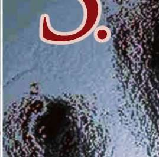
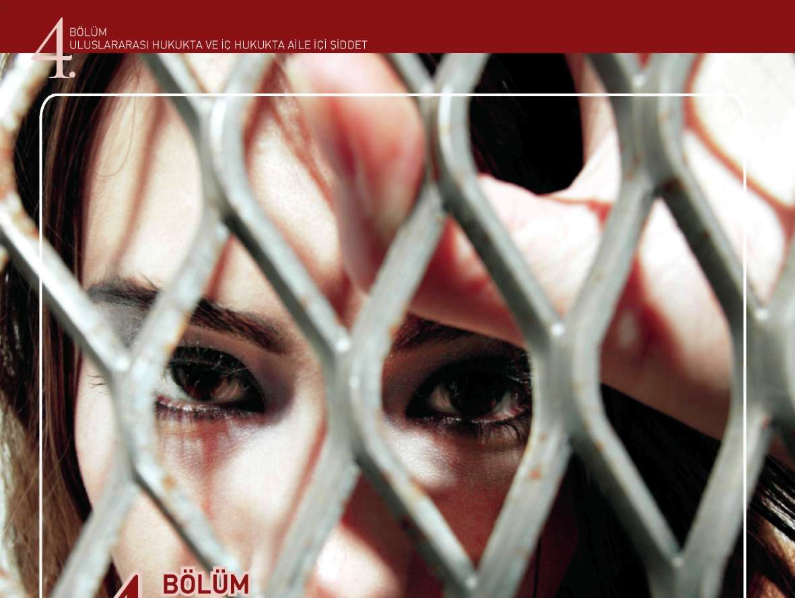

3.449.0 8
sigortalı
Pasif sigortalı
121.030
481.813
602.843
Kaynak: Sosyal Güvenlik Kuruluşları internet sayfaları.
64

BÖLÜM
KADIN-ERKEK EŞİTLİĞİ VE TOPLUMSAL CİNSİYET
Böylece, kadın nüfusunun neden olması gerekenden daha az olduğuna ilişkin bir başka nedene ulaştık: yaşlanmak, kadınlar için erkeklere göre daha güvencesiz bir konum.
Kadın ve erkeklerin istihdama katılım oranları ve buna bağlı olarak sosyal güvence durumları farklı olduğu gibi, çalışma alanlarının da cinsiyete göre ayrışmış olduğunu görüyoruz.
Yine 1999 rakamlarına göre bütün Türkiye’de kadın işsizliği %6.1, erkek işsizliği ise %6.3’ken, kentte bu oran kadınlarda %16.4, erkeklerde %8.6, kırda ise kadınlarda %1.6, erkeklerde %3.6’dır. Kadınların iş gücü piyasasına girişlerine ilişkin pek çok sorun vardır.
Ev ve aileye ilişkin sorumluluklar, eğitim yetersizliği gibi. Bunun dışında, görünmeyen bir çalışma türü olan ev eksenli çalışma da asıl olarak kadınlar tarafından yürütülmektedir.
Seçilmiş bazı mesleklerde cinsiyete göre meslek elemanı sayıları Kadın
Erkek
Fizikçi, kimyager,
4.835
2.575
bunlarla ilgili
meslekler
Mimar, mühendis,
64.89
386.379
teknik eleman
Biyolog, fenni
2.547
2. 76
ziraatçi, vb.
Mali müşavir,
8.926
50.03
muhasebeci
Öğretim ile ilgili
29 1.056
39 1.454
meslekler
Görsel sanatlar
3.957
27.298
Yasama organları
2.810
71.569
ve kamu sektörü
üst düzey yönetici
Steno, daktilo
1
9.482
44.415
Kaynak: TÜİK 2000 Nüfus Sayımı.
Kayıtlı işlerde çalışan kadınların da cinsiyetten kaynaklanan sorunları vardır. Örneğin, ücretleri erkeklerden daha düşüktür. Bu fark, öğrenim durumuna, çalışılan sektöre ve işteki duruma göre değişse bile, genel kural, kadınların daha düşük ücretle çalışmasıdır.
65


BÖLÜM
KADIN-ERKEK EŞİTLİĞİ V TOPLUMSAL CİNSİYET
Eğitim Düzeyine Göre Aylık Kazanç (1994)
Eğitim Düzeyi
Aylık Kazanç (TL)
Kadın
Erkek
Okuryazar değil İlkokul terk ve
5.950 5.691 5.324
7.260 7.885 7.663
ilkokul mezunu Genel ortaokul
5.881 7.396
9.215 9.691
ve genel lise Meslek ortaokulu
ve lisesi Üniversite ve üzeri
Kaynak: TÜİK Toplumsal Yapı ve Cinsiyet İstatistikleri Şubesi tarafından 1994 Gelir Dağılımı Araştırması h a m verisinden yapılan hesaplama.
Bu tabloyu şöyle özetleyebiliriz: Bir kadının okur yazar olmayan bir erkek kadar para kazanabilmesi için, üniversiteyi bitirmesi gerekmektedir!
Eğitim
Eğitim, cinsiyet eşitsizliğine ilişkin sorunların nihai ve kalıcı çözümü olarak her zaman ileri sürülmüştür ancak bunun nasıl bir eğitim olacağı üzerinde yeterince durulmamıştır. İstihdam rakamlarının bize açıkça gösterdiği bir ger
çek, kadınların örgün eğitimden yararlanmalarının eşitsizlik sorununu halletmeye yetmediğidir.
Ancak elbette ki, eğitimin sadece istihdam değil, bebek ölüm hızından siyasal katılıma kadar her alanda önemli bir katkısı vardır. O halde, bir yandan eğitime katılma oranlarına bakmalıyız, diğer yandan da bu eğitimin cinsiyet eşitsizliğini pekiştirici bir etkisi olup olmadığına.
Yani, kadınların ve kız çocuklarının erkekler kadar eğitim almasını sağlamak işin bir parçası; diğer parçası ise, bu eğitimin varolan cinsiyet rollerini yeniden üreten, böylece kadınların eğitimli ikinci sınıf olmalarına neden olan bir içerikte olmamasını sağlamak.
Kadınların eğitim düzeyi, Birleşmiş Milletler’in İnsani Gelişme Raporları’nda kullanılan önemli göstergelerden biridir: Ne kadar çok sayıda kadın ne kadar uzun süre eğitilebiliyorsa, ulusun insani gelişmesi o kadar yüksek demektir.
^ ^ ^ ^ ^ ^ ^ Okuma Yazma Bilen Nüfus Oranı ^ ^ ^ ^ ^ ^
(6 yaş ve üstü)
Sayım Yı lı
Kadın
Erkek
1935
9.8
29.3
^ ^ ^ 1945
^ ^ ^ ^ 6.8 ^ ^ ^ H ^^^^43.7^^^H
1955
25.6
55.9
^ H ^ 1965
32.8
^^^^64.1^^^H
1975
50.5
76.2
^ H 1985
68.2
^ ^ ^ ^ 8 6 . 5 ^ ^ ^ 1
1999
77.4
94.2
Kaynak: TÜİK istatistikleri
66
BÖLÜM
KADIN-ERKEK EŞİTLİĞİ VE TOPLUMSAL CİNSİYET
Okur yazar olmayan kadın oranının 2000 Genel Nüfus Tespiti’nde hala
%18.6 çıkması, yani her beş kadından birinin okumaz yazmaz olduğu göz önüne alındığında, yıllar içindeki gelişmenin önemli ama yetersiz olduğunu söylemek mümkün. Eğitimden yararlanmada bölgesel eşitsizliklerin de muhakkak akılda tutulması, dikkate alınması gerekli:
Okula kayıtlı olmayan 7-13 yaş arası çocuk ve hiçbir eğitimi olmayan 15-49 yaş arası kadın oranları (%)
Okula kayıtsızk
Bölge
Kadın (Eğitimsiz)
Kız
Erkek
Çocuk
Çocuk
İstanbul
0.2
21.6
18.6
^ ^ ^ Bursa
8.7
20.6
14.3
İzmir
8.
19.5
1 .6
^ ^ ^ A d a n a
7.0
3 .6
18.1
Ankara
9.2
17.6
14.9
^^M Trabzon
9.7
24.4
15.6
Diyarbakır
42.0
6 .4
40.0
Erzurum
41.5
59.4
27.9
Urfa
39.0
46.3
28.6
Türkiye
16.7
31.9
21.2
Kaynak: UNICEF, Türkiye’de Bölgelerin Gelişimi 200 )0
Türkiye’nin eğitim rakamlarını başka ülkelerle karşılaştırmak, bu konuda nasıl bir durumda olduğumuzu daha iyi gösterebilir:
Yetişkin okuryazarlık oranları (%)
Bölge
Kadın
Erkek
Sahra Güneyi ve Afrika
47
65
Güney Asya
47
71
Doğu Asya ve Pasifik
33
62
Latin Amerika ve Karaibler
75
90
DAÜ/BDT ve Baltık Devletleri
96
99
Türkiye
72
92
Dünya
65
81
Kaynak: UNICEF, Dünya Çocuklarının Durumu 2000
Okuryazarlık, toplumun eğitim düzeyinin önemli bir göstergesi ancak bir o kadar önemli olan, siyasette ve toplumsal kararlarda söz sahibi olması beklenecek yüksek eğitimlilerin cinsiyet haritasıdır.
67
BÖLÜM
KADIN-ERKEK EŞİTLİĞİ V TOPLUMSAL CİNSİYET
Yüksek öğrenim rakamlarına baktığımızda, cinsiyet eşitsizliğini iki türlü görüyoruz: bir yandan yüksek öğretimde kadınların oranı düşükken diğer yandan da kadınların yöneldiği eğitim alanları cinsiyetçi işbölümünü yansıtıyor. Yüksek öğretim kurumlarına kadın öğrencilerin katılım oranları 1996-97 öğrenim yılında %39.4’tür. Bu oranı yorumlayabilmek için, farklı alanlardaki kadın öğrenci oranlarına da bakabiliriz: ev ekonomisinde %95, tıp fakültesinde %41, eğitim fakültesinde %44.7, güzel sanatlar fakültesinde %58.3, mühendislikte %23.
Örgün eğitimin yanı sıra, yaygın eğitim programlarının da eğitim başlığı altında ele alınması gerekir. Bunlar, asıl olarak Halk Eğitim Merkezlerinin, bunların yanı sıra Tarım Bakanlığı gibi kurumlarla çeşitli gönüllü kuruluşların yürüttüğü eğitim programlarıdır. Ağırlıklı olarak yetişkinlere yönelik beceri kazandırma amaçlı eğitimlerdir. Bunların da kadınların taleplerinden çok düzenleyen kurumun öncelikleri/politikaları doğrultusunda yapıldığı söylenebilir.
Türkiye’de okur yazarlık programlarında son on yılda nicelik ve nitelik olarak önemli gelişmeler kaydedilmiştir ancak yaygın eğitimlerde cinsiyetçi iş bölümü ve rol beklentilerinin pekiştirildiği bilinmektedir. Bu programların hazırlanmasında ve yürütülmesinde cinsiyet eşitliğine yönelik herhangi bir perspektif bulunmamaktadır.
Siyaset
Türkiye, kadınlara seçme ve seçilme haklarını en erken tanıyan ülkelerden biridir. 1934 yılından bu yana kadınların seçme ve seçilme hakları olmasına karşın, Parlamentoda ve yerel yönetimlerde temsil oranları hiçbir zaman %5’e ulaşamamıştır.
Seçim yıllarına ve cinsiyete göre milletvekili sayıları ve oranları (1935-2007)
Toplam
Erkek
Kadın
Seçim yılı
milletvekili
(sayı)
Sayı
Oran (%)
Sayı
Oran (%)
1935
395
381
95.5
18
4.6
1939
429
413
96.3
16
3.7
1943
455
439
96.5
16
3.5
1946
465
456
98.1
9
1.9
1950
487
484
99.4
3
0.6
1954
541
537
99.3
4
0.7
68

BÖLÜM
KADIN-ERKEK EŞİTLİĞİ VE TOPLUMSAL CİNSİYET
1957
610
602
98.7
8
1.3
1961
450
447
99.3
3
0.7
1965
450
442
98.2
8
1.8
1969
450
445
98.9
5
l.l
1973
450
444
98.7
6
1.3
1977
450
446
99.1
4
0.9
1983
399
397
97.0
12
3.0
1987
450
444
98.7
6
1.3
1991
450
442
98.2
8
1.8
1995
550
537
97.6
13
2.4
1999
550
527
95.8
23
4.2
2002
550
526
95.6
24
4.4
2007
550
500
90.8
50
9.2
Kaynak: TÜİK
2005 yılı Ağustos ayı itibariyle bazı ülkelerde parlamentodaki kadın temsilci oranlarına bakıldığında, Türkiye’nin ancak bazı Arap ülkelerinden daha iyi durumda olduğu görülmektedir. Kadın temsil oranının %100 arttığı 2007
Genel Seçimlerinden sonra Türkiye bu sıralamada ancak 94 - 95’inci sıralara yükselebilmiştir.
Dünya
Ülke
Seçim yılı
Kadın Oranı
Sıralamasındaki
Yeri
1
Ruanda
2003
48.8
2
İsviçre
2002
45.3
3
Norveç
2001
38.2
7
Küba
2003
36.0
9
Mozambik
2004
34.8
3
Güney Afrika
2004
32.8
26
İsveç
2003
25.0
33
Tunus
2004
22.8
38
Tanzanya
2000
21.4
47
İngiltere
2005
19.7
69


BÖLÜM
KADIN-ERKEK EŞİTLİĞİ V TOPLUMSAL CİNSİYET
55
Tacikistan
2005
17.5
63
ABD
2004
15.2
70
Yunanistan
2004
13.0
77
Burkina Faso
2002
11.7
88
El Salvador
2003
10.7
91
Sudan
2000
9.7
95
Kamerun
2002
8.9
105
Japonya
2003
7.1
1 4
Ermenistan
2003
7.0
1 18
Türkiye
2002
4.4
128
Kuveyt
2003
1.5
130
Yemen
2003
0.3
131
S.Arabistan
2005
0.0
Kaynak: IDEA
Kadınların bu kadar eşitsiz temsilinin elbette pek çok nedeni vardır. Bunlardan biri, geleneksel cinsiyet rollerinin kadınları aile içine yönlendirmesidir.
Cinsiyetçi iş bölümünün bir sonucu olarak kadınlar, çocukların, erkeklerin, yaşlı ve hastaların gereksinimlerini karşılamak için çalışırlar, bu rol de onları gündelik rutine ve eve kapatır. Ücretli olarak çalışsalar bile, asıl işleri hep aile ve evle ilgili olanlardır. Bu işbölümü, kadınların toplumsal yaşam deneyimlerini aile ve yakın çevre ile sınırlar. Kendi yaşamları ile ilgili sorunların siyaset dışı olduğu iddiasına karşı onları savunmasız, deneyimsiz ve dilsiz bırakır. Bu zihniyetin toplumun her yerinde, her kurumda yaygın oluşu ise, iş bölümünün
“doğal”, kadınların da siyasetin dışında olduğu düşüncesini pekiştirir.
Bu iş bölümünün bir uzantısı, kadınların toplumsal faaliyetlerde bulunduklarında da, siyaset dışı “hayır işleri”ni tercih etmeleridir. Kadın kuruluşlarının ağırlıklı olarak benimsedikleri “siyaset dışı siyaset”, hem ülkenin genel sorunlarına hem de kadınların toplumsal konumlarının düzeltilmesine benzer bir yaklaşım anlamına gelir: “çağdaş” bir toplumun kurulması için birer nefer gibi çalışmak. Bu tutumun siyaset üstü olarak algılanması bir yandan kadınların böyle bir faaliyete girmelerini kolaylaştırırken bir yandan da siyasetle uğraşan kadınların büsbütün yalnızlaşmasına neden olur.
Bir başka neden, siyasal ve sivil örgütlerin kadınların katılımını güçleş-tiren yapılarıdır. Asıl olarak orta yaşlı ve yaşlı erkeklerden oluşan siyasal partiler, yalnızca kadınlar için değil, yoksullar, taşralılar, azınlıklar için de katılması güç örgütlerdir.
Her düzeydeki cinsiyet ayrımcılığı, siyasal kültürün ayrılmaz bir parçasıdır: mekan düzenlemelerinden toplantı saat ve yerlerine kadar, kadınları yok sa-70

BÖLÜM
KADIN-ERKEK EŞİTLİĞİ VE TOPLUMSAL CİNSİYET
yan, siyaseti bir “erkekler kulübü” olarak tasarlayan, otoriter bir zihniyeti izleyebiliriz.
Yerel siyaset, bütün dünyada kadınların daha kolay girebildikleri bir alanken Türkiye’de yerel yönetimlerde kadın temsili, merkezi devlet yönetiminin de altındadır. Bunun nedeni, büyük ölçüde, yerel siyasetin ciddi bir rant da
ğıtma mekanizması oluşu, dolayısıyla da güçsüz grupları püskürten, güçlüler arasındaki müzakere, mücadele ve uzlaşma süreçlerini öne çıkaran yapısıdır.
Türkiye’de yerel yönetim organlarında kadın temsili rakamları, bize durumun ne kadar vahim olduğunu gösterebilir:
Türkiyede Yerel Yönetimlerde Kadınlar (%)
Yıl
Belediye
Belediye
İl Genel
Başkanlığı
Meclisi
Meclisi
Üyeliği
Üyeliği
984
-
0.6
0.3
989
0.2
0.7
0.8
994
0.4
0.9
0.9
999
0.6
.6
.4
2004
0.6
2.5
.7
Kaynak: Yüksek Seçim Kurulu İstatistiklerine dayalı KA-DER
Ankara Şube hesaplamaları
2004 yılında yapılan yerel seçimlerde, bütün Türkiye’de yalnızca bir ilde (Tunceli) kadın belediye başkanı seçilmiş, diğer rakamlarda da herhangi bir iyileşme olmamıştır. Kadın belediye başkanı oranının Costa Rica’da %12, Honduras’ta %9, Nikaragua’da %7 olduğu, Fransa’da 2001 yerel seçimlerinde 3.500’den fazla nüfusu olan belediyelerde kadın temsil oranının %47’ye ulaştığı söylenirse, Türkiye’deki rakamlar daha iyi değerlendirilebilir.
Kadınların oy vermek dışında siyasetle ilgilenmedikleri, partiler onları çağır-dıklarında da gitmedikleri biçimindeki açıklama, 2004 yılında yayınlanan bir araştırmayla geçersiz hale gelmiştir. Binnaz Toprak ve Ersin Kalaycıoğlu’nun yaptıkları bu araştırmaya göre, Türkiye’de yalnız kadınlar değil, erkekler de siyasetle fazla ilgilenmemektedir. Ancak, siyasete katılmalarının önü açıldığı takdirde, kadınların %33.8’i bir partiye üye olup siyaset yapmayı düşünebile-ceklerini, erkeklerin %68.5’i ve kadınların %73.7’si ise, kızlarının siyasete girmesini kabul edeceklerini söylemişlerdir. Kadın ve erkeklerin %74’ü, mecliste kadın temsilini yetersiz bulmakta, %65’i ise bunun nedeninin kadınlara siyasette fırsat tanınmaması olduğunu söylemektedir. Kadın ve erkeklerin %76’sı, bugüne kadar hükümetlerin ve siyasal partilerin kadın sorununa yeterince eğilmediklerini düşünmektedir.
71


B İ LG İSİ VE İŞ B İ RL İĞİ
am
V E İ Ş B İ R L İ Ğ İ
1. Şiddet ve Şiddet Türleri ^ ^ ^ ^
3. Aile içi Şiddet
4. Aile içinde Kadına Yönelik Şiddet Nedir?
5. Aile içinde Kadına Yönelik Şiddetin Türleri
6. Şiddete Maruz Kalan Kadınların Yaptıkları, Yapamadıkları ve Nedenleri 7 . Şiddetin Çocuklar Üzerindeki Etkileri
8. Aile içi Şiddet Mağduruna Yaklaşım ve Mağdurla Görüşme 9. Aile İçi Şiddetle Mücadelede Mevcut Mekanizma


Şİ DDET B İ LG İ S İ VE İŞ B İ RL İĞİ
3. BÖLÜM: ŞİDDET BİLGİSİ VE İŞBİRLİĞİ:
Kadına Yönelik Şiddet, Aileiçi Şiddet ve Polis - Kadın Kuruluşu Arasındaki İşbirliği
Ç/
SÜRE
ÖĞRETİM TEKNİKLERİ
ARAÇ - GEREÇLER
4 Ders saati
Sunuş,buluş ve uygulama
Projeksiyon cihazı,
yoluyla öğretme, Anlatma,
bilgisayar
tartışma, soru-cevap ve
örnek olay
'W
BAŞVURU KAYNAKLARI
ETKİNLİKLER
İlgili kaynaklar ve uluslar arası
Örnek olay üzerinde tartışmaları
mevzuat
Şiddet ve Şiddet Biçimleri
Şiddet, insanın maddi ve manevi varlığına zarar veren her türlü davranıştır.
Kaba dayak atmadan, duygusal eziyete ve parasız bırakmaya kadar çeşitli yönleri olduğu icin hukukun olduğu kadar diğer sosyal bilimlerin de ilgi alanındadır ve ceza yasları veya özel yasalardaki yaptırımlarla yasaklanmıştır. Aile içi şiddeti tanımlamadan önce şiddet türlerini genel olarak bilmek yaralı olacaktır. Buna göre aile içi şiddet; fiziksel şiddet, cinsel şiddet, duygusal şiddet ve ekonomik şiddet olarak dört başlıkta incelenebilir.
Fiziksel Şiddet
Şiddetin en çok bilinen çeşididir. Yumruk, tokat ya da sopa ve benzeri herhangi bir araç kullanarak kaba dayak atmaktan, vücutta sigara söndürmeye ve öldürmeye dek uzanan çok geniş bir kapsama alanı vardır.
Cinsel Şiddet
En yalın biçimiyle cinsel şiddet, eylemi gerçekleştiren ister koca ister başkası olsun, kadının isteği dışında veya istemediği biçimlerde cinsel ilişkiye zorlanmasıdır. Bunun dışında yine kadına istemi dışında yöneltilen her türlü cinsel amaçlı sözlü veya fiziksel eylem de cinsel şiddettir. Evlilik içi tecavüz yanında, ensest ilişki de çok rastlanan aile içi şiddet türüdür.
Sözel / Duygusal / Psikolojik Şiddet
Hakaret ya da tehdit biçiminde kendini gösteren duygusal ya da psikolojik şiddet, bazen fiziksel şiddetle birlikte, çoklukla bağımsız olarak gerçekleşen 73
BİLGİSİ VE İŞBİRLİĞİ
ve en çok rastlanan aile içi şiddet türleridir. Yaygın olarak görülen bir diğer aile içi psikolojik şiddet biçimi de özgürlükten yoksun bırakmadır, karıkoca ve çocuklar arasında işlenmesi hali cezanın artırılma nedenidir.
Ekonomik Şiddet
Çağdaş toplumlarda boşanmalarda ekonomik nedenler önemli bir yer tutarken, aile içi şiddette de ekonomik şiddet giderek artmaktadır. Artık mahkeme kararlarında da ekonomik şiddetin boşanma veya koruma kararlarına gerekçe oluşturduğu örneklere rastlanmaktadır. Bu anlamda ekonomik şiddet “Bireylerin çalışmalarını ve gelir sağlamalarını engellemek, çalışmaya zorlamak, kişisel kazançlarına el koymak, bunları yönetmelerine engel olmak şeklinde ortaya çıkan davranışlar” olarak tanımlanmaktadır.
Aile İçi Şiddet
Aile içi şiddet aile içinde bir bireyin diğerine karşı şiddet uygulaması halinde söz konusu olur. Aile bireylerinin yaralanmasına, sindirilmesine, öfkelendi-rilmesine veya duygusal baskı altına alınmasına yol açan fiziki veya herhangi bir şekildeki hareket, davranış veya eylemler bütünüdür (Sümer, 1998, s.131) 4320 sayılı Kanun’un gerekçesinde de benzer biçimde tanımlanmıştır. Öldürmekten yaralamaya, tecavüzden enseste kadar bir çok çeşidi vardır.
Aile İçinde Kadına Yönelik Şiddet Nedir?
Aile içinde meydana gelen, cinsiyete dayalı, kadın üzerinde baskı ve üstünlük kurmayı amaçlayan; tehdit, dayatma, kontrol içeren; psikolojik, cinsel, ekonomik, fiziksel zararla sonuçlanan; kadının insan haklarını ihlal eden öğ-renilmiş her türlü eylemdir.
Aile içinde kadına yönelik şiddet, her yaştan, her öğrenim düzeyinden, her gelir düzeyinden, bekar boşanmış, evli, her ülkeden kadının gerçeğidir Tüm dünyada kadınlar kocaları, babaları, erkek kardeşleri ve/veya aralarında kan bağı/akrabalık ilişkisi bulunan diğer erkekler tarafından şiddete maruz kalmaktadır Aile içinde kadına uygulanan şiddet gerek şiddet uygulayan, gerek toplum ve kimi zaman da şiddete maruz kalan kadın tarafından meşru sayılmaktadır Kadınlar yaşadıkları şiddetin sorumlusu olarak görülmekte, şiddetin hak edildiği inancı toplumda yaygın biçimde kabul edilmektedir. Aile içinde kadına yönelik şiddet en yaygın ve buna rağmen en göz ardı edilen insan hakkı ihlalidir.
Aile içinde uygulanan şiddetin s ıralanabilecek pek çok nedeni vardır. Genellikle bu nedenlerin birkaçı şiddet davranışını birlikte ortaya çıkarır. Bunlardan bazıları temel, diğerleri yan etkenlerdir. Ancak tüm aile içi şiddet vakalarında ortak nedenin, aile içi şiddettin meşru görülmesi olduğu kuşku götürmez bir gerçektir.
74


BÖLÜM
ŞİDDET BİLGİSİ VE İŞBİRLİĞİ
Aile içinde kadına yönelik şiddetin, şiddet uygulayan kişinin akıl veya ruh sağlığının bozuk olması, eğitim seviyesinin düşük olması, işsizlik, ekonomik sıkıntılar, stres, gibi bireysel faktörlerden kaynaklandığı görüşü yaygındır. Kimi durumlar için geçerli olsa da, bu görüş, dünyadaki yaygınlığına bakıldığında, aile içi şiddet vakalarının tümünü açıklayamamaktadır.
Aile içinde kadına yönelik şiddet, bireysel nedenlerden öte daha genel sistemlerle açıklanabilecek bir olgudur. Aile içi şiddet cinsiyet kökenlidir; yani temellerini cinsiyetlerin toplumsal hayattaki eksik ve kusurlu yapılanıştan alır.
Buna göre erkeğin uyguladığı şiddete neden olan, erkeğin kadından daha üstün ve kadın üzerinde baskı kurmasının doğal bir hak olduğuna inanmasıdır.
Toplumsal cinsiyet rollerinin sürdürülmesi, homofobik tutumlar, kadının de
ğersiz olduğu görüşü bu kültürün bir parçasıdır.
Aile içinde kadına yönelik şiddet kendini bazen sadece fiziksel şiddet olarak gösterirken; bazen fiziksel, duygusal, ekonomik ve cinsel şiddetin bü tününden oluşur. Yapılan çalışmalar bize aile içinde kadına yönelik şiddetin sanıldığından çok daha yaygın olduğunu ve her tür sosyoekonomik ve kültürel gruptan kadının hayatlarının en az bir döneminde aile içinde şiddet yaşadıklarını göstermektedir.
Aile İçinde Kadına Yönelik Şiddetin Türleri
Aile içi şiddet ve fiziksel şiddet gündelik tanımlamalarda birbirlerinin yerine kullanılmaktadır. Bu kadına yönelik duygusal, ekonomik ve cinsel şiddete ilişkin farkındalığın yok denecek kadar az olmasından kaynaklanan bir durumdur. Oysa ki, aile içinde kadına yönelik şiddet yalnızca fiziksel değil, farklı görünümleriyle birlikte varlığını sürdürmektedir Şiddet türleri ve türlere göre şiddet eylemleri örnekleri şöyle sıralanabilir:
Psikolojik - Duygusal Şiddet
^ Kadına bağırmak,
^ Hakaret etmek,
^ Aşağılamak,
^ Başka kadınlarla kıyaslamak,
^ Korkutmak,
^ Kıskanmak,
^ Kadının nasıl giyineceğine, nereye gideceğine, kimlerle görüşeceğine karar vermek,
^ Kadına veya çocuklara zarar vermekle, öldürmekle tehdit etmek,
^ Diğer insanlarla ilişkilerini sınırlamak,
^ Kendini geliştirmesine engel olmak,
^ Yaşadığı şiddetin sorumlusu olarak görmek,
^ Kültürel farklılıklarını reddetmek, bastırmaya çalışmak veya bu gerek
çeyle kötü muamelede bulunmak, vb.
75
.
Cinsel Şiddet
^ Kadını istemediği yerde, istemediği zamanda ve istemediği biçimde cinsel ilişkiye zorlamak
^ Çocuk doğurmaya zorlamak,
^ Kürtaja zorlamak ,
^ Fuhuşa zorlamak,
^ Cinsel organlarına zarar vermek,
^ Fiziksel özellikleri bakımından başka kadınlarla kıyaslamak, vb.
Ekonomik Şiddet
^ Kadının çalışmasına izin vermemek,
^ İstemediği işte zorla çalıştırmak,
^ Kadının para harcamasının kısıtlamak,
^ Az para vererek çok şey beklemek,
^ Aileyi ilgilendiren ekonomik konulardaki kararları kadının fikrini sorma-dan tek başına almak,
^ Kadının parasını, şahsi mallarını elinden almak,
^ Kadının terfi etmesini engelleyecek kısıtlamalar getirmek (İş gezilerine, toplantılara, kurslara katılmasına engel olmak),
^ Kadının iş bulmasını kolaylaştırıcı becerileri geliştirecek etkinlikleri engellemek,
^ İş yerinde olay yaratmak suretiyle kadının işten atılmasına neden olmak, vb.
Fiziksel Şiddet
^ İtip kakmak,
^ Tokatlamak,
^ Tartaklamak,
^ Tekmelemek,
^ Kesici ve vurucu aletlerle ya da yakıcı maddelerle bedene zarar vermek,
^ Sağlıksız koşullarda yaşamaya mecbur bırakmak,
^ Sağlık hizmetlerinden yararlanmasına engel olmak suretiyle bedensel zarara uğratmak, vb.
Şiddete Maruz Kalan Kadınların Yaptıkları, Yapamadıkları ve Nedenleri
^ Kadın neden yaşadıklarını anlatmakta güçlük çeker?
^ Kimsenin kendisine inanmayacağını ya da inansa bile bunu önemse-meyeceğini düşünebilir.
^ Yaşadığı şiddeti anlatması halinde bunun bir sonuç vermeyeceğine inanabilir.
76


BÖLÜM
ŞİDDET BİLGİSİ VE İŞBİRLİĞİ
^ Şiddet yaşadığını paylaşması halinde bu kişilerin kendini suçlayacağından endişe duyabilir.
^ Bunun kişisel bir sorun olduğunu düşünür ve bu sorunu kendi başına halletmesi gerektiğine inanabilir.
^ Şiddeti hak ettiğine ve kocasının istediği gibi biri olursa tekrar şiddet yaşamayacağına inanabilir.
^ Yaşadığı şiddetten ötürü utanabilir Pek çok kadın için geçerli olmakla birlikte, özellikle eğitimli ve meslek sahibi kadınlar yaşadıkları şiddeti anlatmanın saygınlıklarını azaltabileceğini düşünmektedir.
^ Yaşadığı şeyin şiddet olduğunu fark etmeyebilir Bu durum özellikle adı daha zor konan fiziksel şiddet dışındaki şiddet türlerinde geçerlidir.
^ Kocasının anlattıklarını duymasından ve şiddeti arttırmasından korkabilir .
^ Yaşadıklarını paylaşması durumunda destek alamayacağını; aksine bunu anlatmanın kendine zarar vereceğini düşünebilir.
^ Eşinin mesleği veya statüsünün yüksek oluşu nedeniyle şiddetle mücadele etmesinin yersiz olacağını, çünkü sonuç alamayacağını düşünür.
Şiddetin Çocuklar Üzerindeki Etkileri
Şiddet ortamında büyüyen çocukların yaşadıkları problemler beş yaşından küçük ya da büyük olmalarına göre değişiklik gösterebilmektedir. Örneğin; 0-5 yaş arasındaki çocukların:
^ Fiziksel şikayetler,
^ Uyku bozuklukları,
^ Altını ıslatma,
^ Aşırı bağlanma, anneden ayrılma, terk edilme anksiyetesi,
^ Gelişim geriliği.
6 ve daha fazla yaştaki çocukların:
^ Terk edilme korkusu,
^ Öldürüleceğini veya anne babasının birbirini öldüreceği korkusu,
^ Öfkelenmekten veya başkalarının öfkelenmesinden korkma,
^ Yüksek düzeyde anksiyete,
^ Yeme bozukluğu,
^ Uyku bozukluğu,
^ Çevresini emniyetsiz ve güvensiz bulma,
^ Yoğun çaresizlik ve şiddeti önleyemedikleri için suçluluk hissetme,
^ İhmale ve istismara uğramaya daha açık hale gelme,
^ Travmatik olaylara şahit olma ve aynışiddeti görme tehlikesiyle karşıkar-şıya kalma,
^ Okullarında arkadaşları, öğretmenleri veya dersleri ile ilgili problemler yaşama,
77
BİLGİSİ VE İŞBİRLİĞİ
^ Diğer çocuklara şiddet uygulama ya da diğer insanlardan ürkme, çekinme eğilimi, gibi problemler yaşadıkları bilinmektedir. Ayrıca çalışmalar şiddet ortamında büyüyen erkek çocukların diğer çocuklara göre daha agresif, kız çocukların ise daha çekingen ve pasif davranma eğiliminde olduğunu göstermektedir.
Aile içi Şiddet Mağduruna Yaklaşım ve Mağdurla Görüşme
Temel amaç, destekleyici bir yaklaşımla kadını şiddetle mücadele mekanizması ve araçları konusunda en üst düzeyde bilgilendirmek ve ilgili kuruluşlara yönlendirmektir. Bu amaca hizmet eden süreç üç bölümde değerlendirilebilir.
Bunlar; Cinsiyete dayalı şiddet, aile içi şiddet ve şiddetin kadınlar üzerindeki etkilerinin farkında olmak, mağdurlarla uygun koşullarda ve uygun biçimde görüşmek ve mağdurları bilgilendirmek ve yönlendirmektir.
Cinsiyete Dayalı Şiddet, Aile içi Şiddet ve Şiddetin Kadınlar Üzerindeki Etkilerinin Farkında Olmak
Bir cinsiyetin ağırlıklı olarak hedef ve diğer cinsiyetin de uygulayıcı olduğu suçlar cinsiyetçi suçlar olarak kabul edilmektedir. Bu bağlamda aile içi şiddet cinsiyetçi suçlar kapsamında değerlendirilmektedir. Amerikan Psikoloji Derneği 1996 yılında kadın olmanın aile içi şiddet mağduru olmak bakımından risk faktörü olduğunu belirtmiştir. Polis merkezlerine başvuran aile içi şiddet mağdurlarının neredeyse tamamının kadın olması bu tanımı desteklemektedir Bu nedenle bu suçun mağdurlarına sunulacak hizmetin en iyi düzeyde sağlanabilmesi toplumsal cinsiyetin, cinsiyete dayalı şiddetin ve bunun bir parçası olarak aile içinde uygulanan şiddettin kadınları ve çocukları ne şekilde etkilediğinin farkında olmak gerekmektedir.
Mağdurlarla Uygun Koşullarda ve Uygun Biçimde Görüşmek
Şiddete maruz kalan kadınların ilk resmi başvuru adresleri polis merkezleri ve hastaneler olmaktadır. Kadınlar çoğu zaman çocuklarının ya da yakınlarının telkini ile polis merkezlerine başvurmaktadır. Kadının yaşadığı şiddetin kişisel bir sorun olmadığını kabul ettiği noktada başvurduğu polis merkezlerinde mağdura yönelik yaklaşım, kadının sonraki sürecini önemli ölçüde etkilemektedir. Mağdura yönelik yaklaşımın suçlayıcı, yargılayıcı olması yaşadığı şiddetin bir tekrarı olacağından kadının olumsuz hislerinin yoğunluğunu artıracak ve kendini daha güçsüz hissetmesine neden olacaktır. Mağduru destekleyici, anlayışlı tutumlar kadının hissettiği yalnızlık, endişe, suçluluk, güvensizlik hissinin azalmasına yardımcı olacak ve bir sonraki adımını şiddeti ortadan kaldırmak yönünde atmasına zemin hazırlayacaktır. Bu nedenle mağdura aşağıda genel hatları ile belirtilen koşullarda ve biçimde yaklaşım sergilemek son derece önemlidir.
Mağdurları Bilgilendirme ve Yönlendirme
Polise başvuran kadının yasal hakları ile destek alabileceği kurum ve kuruluşlar hakkında bilgilendirilmesi kadının çaresiz olmadığını, sorunun çözümüne ilişkin alternatiflerin mevcut olduğunu fark etmesine yardımcı olacaktır.
78


BÖLÜM
ŞİDDET BİLGİSİ VE İŞBİRLİĞİ
Mağdurlar polise kriz durumlarında başvurmaktadır. Bu nedenle mağdurların krize etkin biçiminde müdahale edecek kuruluşlara (örneğin, hastane, sığınak, kadın danışma merkezi gibi yerlere) yönlendirilmesi gerekmektedir.
Aile içi Şiddet Mağduru Kadınlarla Görüşürken Dikkat Edilmesi Gereken Noktalar
^ Polis merkezine gelen mağdurla sessiz bir odada görüşmeye özen gösterilmelidir.
^ Mağdurla şiddet uygulayandan ayrı bir odada görüşülmelidir.
^ Şiddet uygulayıcının konuşmaları duymayacağından emin olunmalıdır.
^ Görüşme aceleye getirilmemelidir. Mağdur görevlinin gerçekten kendisini önemsediğinden ve sorunu ile ilgilendiğinden emin olmalıdır.
^ Mağdurla onu yaşadığı şiddetin sorumlusu olarak görmeden iletişim kurulmalıdır. Çünkü kadınlar şiddete maruz kalırken aynı zamanda bunun sorumlusu olarak da görülürler. Hatta bir süre sonra kendileri de bunun doğru olduğunu düşünmeye başlarlar. Bu nedenle, kendisiyle görüşen görevlinin de aynı şekilde düşüneceğinden endişe edebilirler. Mağdurla iletişim kurabilmek için bu kaygıların giderilmesi gerekir.
^ Mağdurla konuşurken göz kontağı kurulmalıdır. Görüşme esnasında başka şeylerle ilgilenmekten kaçınılmalıdır.
^ Mağdurları aktif biçimde dinlemek gerekir. Bunun için;
^ Anlattıklarını dinlediğinizi mimiklerinizle ve başınızı sallayarak ya da anlattıklarını toparlayarak gösterin.
^ İyi anlayamadığınız noktaları açması için soru sorun.
^ Ma duru dinlerken empatik yaklayın. Ma durun yaşadıklarını ve öfke, üzüntü, acı, korku gibi o andaki hislerini anlamaya çalışın. Mağdurlar bazen yoğun biçimde hissettikleri öfke ve güvensizlik gibi bazı duyguları size yansıtabilir Bu tür tepkilerin asıl hedefinin siz olmadığınızı bilerek davranın.
^ Anlattığınız şeyin do ru anladığından emin olun. Bu konuda verdiğiniz bilgilerin doğru anlaşılıp anlaşılmadığını öğrenmek için soru sorun.
^ İlgisiz sorular sormaktan mutlaka kaçının. Mağdurun bunu fark etmesi halinde iletişimi keseceğini ve önemli sorulara yanıt vermekten kaçınacağını unutmayın.
^ Mağdurlar polis merkezlerine kriz durumunda geldikleri için genelde kafaları karışıktır. Bu nedenle durumla ilgisiz şeyler anlatabilir, gereksiz ayrıntılara girebilirler. Bu tür durumlarda sabırlı olunmalı, söyleyeceklerini tamamlaması için zaman tanınmalıdır.
^ Kadınların şiddet karşısındaki tepkileri doğal olarak farklılık göstermektedir. Kişilik, kültürel faktörler ve duruma özgü etkilerden dolayı bazı kadınlar sakin bir şekilde kendini ifade edebilirken, bazı kadınlar sürekli ağlayabilir, öfkeli olabilir hiç durmadan konuşabilir ya da sıklıkla fikir de
ğiştirebilir. Bu kişisel farklılıklar kabul edilmeli ve her kadından aynı şekil-79
BİLGİSİ VE İŞBİRLİĞİ
de davranması beklenmemelidir. Örneğin öfkeli bir kadının bu hali daha sakin bir kadın örnek verilerek başka bir kadınla kıyaslanmamalıdır.
^ Kadının yaşadıklar, hisleri ve davranışları küçümsenmemelidir.
^ Mağdurlar yaşadıkları travmanın etkisiyle sorulara çelişkili, eksik yanıtlar verebilir, göz kontağı kurmayabilir, yaşadığı olayı net hatırlamayabilir.
Bu tür durumlar anlayışla karşılanmalı ve kadına zaman tanınmalıdır.
^ Kimi zaman mağdurların anlattıkları inanılması güç ya da garip görünebilir. Ancak her durumda mağdurun beyanı esas alınmalıdır. Bu esnada mağduru yargılayıcı sözlerden kaçınılmalıdır.
^ Mağdurlar yaşadıkları şiddetin etkisiyle yoğun bir korku ve güvensizlik yaşar.
Bu nedenle kadının kendini rahat ve güvende hissetmesi sağlanmalıdır.
^ Sorular sakin ve endişe giderici şekilde sorulmalıdır.
^ Kadınlar polise gelseler de bazen fikir değiştirip işbirliği yapmak istemeyebilirler. Çünkü çoğu durumda kadın kısa vadeli çözümleri denemeyi tercih eder. Örneğin sadece o anki şiddeti durdurmak için bir şey yapmak ister ve polise başvurur. Ancak daha ileriye gitmekten çekinebilir.
Bu nedenle fikrini değiştirebilir. Kadının korku ve kaygıları anlaşılmalı ve durum anlayışla karşılanmalıdır.
^ Şiddet uygulayıcının da ortamda bulunduğu durumlarda bu kişinin kadına hakaret etmesi, bağırması ve kadını aşağılaması kesinlikle engellenmelidir.
^ Mağdurun ifadesi detaylı olarak kaydedilmelidir.
^ Mağdurların durumu hakkında kişisel yorum ve önerilerden kaçınmak gerekir Mağdurun en temel ihtiyacı anlattıklarının dinlenmesi ve uygun biçimde yönlendirilmesidir.
^ Kadının kendini suçlamasına izin verilmemelidir.
^ Kadının kendine zarar verecek yanlış inançları(bkz, 3. başlık altındaki yanlış inanışlar) giderilmelidir
^ Mağdur doğru biçimde bilgilendirilmelidir Polis merkezinde şiddet mağdurlarını bilgilendirici materyaller hazır bulundurulmalıdır. Örneğin, kadına o ildeki kadın danışma merkezleri, psikolojik destek alabileceği merkezler baro kadın hukuku uygulama merkezleri, maddi destek alabileceği kuruluşlar ile sosyal destek kuruluşlarının iletişim bilgilerinin içeren bir liste verilebilir.
^ Mağdurun yönlendirilebileceği kuruluşlarla iletişime geçilebilir.
^ Mağdurun yönlendirildiği kuruluşlar bilhassa sığınaklar hakkında başta şiddet uygulayıcı olmak üzere yakınlarına bilgi verilmemelidir.
^ Ne yapacağına karar verebilmesi için mağdura zaman tanınmalıdır.
Aile İçi Şiddetle Mücadelede Mevcut Mekanizma
^ Kadın Danışma Merkezleri ve Kadın Sığınakları
80
BÖLÜM
ŞİDDET BİLGİSİ VE İŞBİRLİĞİ
^ SHÇEK Müdürlükleri
^ Aile Danışma Merkezleri ve Toplum Merkezleri
^ Aile Mahkemeleri
^ Denetimli Serbestlik Birimleri
^ Baro Kadın Hakları Uygulama Merkezleri
^ Valilik ve Kaymakamlıklar
^ Belediyeler
^ Polis ve Jandarma
^ Sivil Toplum Örgütleri
KAYNAKÇA
Dünya Bankası, Dünya Bankası Gelişme Raporu: Sağlığa Yatırım Yapmak, Oxford University Press, New York, 1993.
Dünya Sağlık Örgütü, Bilgi Notu No: 239, Haziran 2001.
http://www.amnesty.org.tr/v0503200402.si
http://www.amnesty.org.uk/svaw/vaw/global.html
http://www.growing.com/nonviolent/victim/vict_res.html
http://www.health.wa.gow.au/publications/documents/fdvtrainingparticipant-
skit.doc
http://wwwl.umn.edu/humanrts/svaw/domestic/training/index.html
http://www.unhcrch/html/menu3/b/2l/htm
http://www.unifem.org/gender_issues/violence_against_women/facts_
figures_2.php#
http://www.who.int/violence_injury_prevention/violence/world_report/factshe-
ets/en/ipvfacts.pdf
Gülçür Leyla, Ankara’da Aile içi Şiddet ve Cinsel Taciz Üzerine Bir Çalışma, Kadının İnsan HaklarıProjesi, Rapor
No:4 1999. Innocenti Digest, Aile İçinde Kadınlara ve Kız Çocuklarına Yönelik Şiddet, No:6, UNICEF, Haziran 2000.
Işık, Nazik, Yerel Yönetimler Kadın Hareketi ve Kadına Yönelik Şiddetle Mücadele, YG2l I. Kadın Festivali, Kadın ve Şiddet
Paneli, İzmir 19. 10. 2002.
Johns Hopkins Üniversitesi, Kadına Yönelik Şiddeti Sonlandırmak. Nüfus Raporları, Seri: L, No: 11, Kamu SağlığıBölümü, Nüfus Bilgi Programı, Aralık 1999.
TC Başbakanlık Kadının Statüsü ve Sorunları Genel Müdürlüğü, Türkiye’de Kadın 2001, Ankara: 2001.
Karınca, Eray, Kadına Yönelik Aile içi Şiddetle İlgili Ulusal ve Uluslar arası Yasal Düzenlemeler, 2008 Ankara
Vermont-Mangold, Ruth-Gaby Violence Against Women in Europe, Report by Parli-amentary Assembly of the Council of Europe,15 March 2000.
81

2.
!. Uluslararası Hukukta Kadına Yönelik Şiddet Olgusu 2.1. CEDAW Kadınlara Karşı Her Türlü Ayrımcılığın
I Önlenmesi Sözleşmesi ve Ek İhtiyari Protokol
2.2. Kadınlara Yönelik Şiddetin Tasfiyesine İlişkin
Birleşmiş Milletler Bildirgesi
2.3. Dünya Konferansları, Pekin Eylem Platformu
ve Türkiye’nin 1997 Ulusal Eylem Planı
2.4. Çocuk Hakları Sözleşmesi
2.4. AB ve Avrupa Konseyi Kararları
3. İç Hukukta Kadına Yönelik Şiddet Olgusu
3.1. Anayasa
3.2. Türk Ceza Kanunu —•
3.3. Çocuk Koruma Kanunu
3.4. 4320 Sayılı Ailenin Korunmasına Dair Kanun
4. Sonuç
BÖLÜM
ULUSLARARASI HUKUKTA VE İÇ HUKUKTA AİLE İÇİ ŞİDDET
4. BÖLÜM: ULUSLARARASI HUKUKTA VE İÇ HUKUKTA KADINA YÖNELİK
AİLEİÇİ ŞİDDET
©/
SÜRE
ÖĞRETİM TEKNİKLERİ
ARAÇ - GEREÇLER
3 Ders saati
Sunuş,buluş ve uygulama
Projeksiyon cihazı,
yoluyla öğretme, Anlatma,
bilgisayar
tartışma, soru-cevap ve
örnek olay
(fi&
BAŞVURU KAYNAKLARI
ETKİNLİKLER
İlgili kaynaklar ve uluslar arası
Örnek olay üzerinde tartışmaları
mevzuat
Kadına yönelik aileiçi şiddet insan onuruna yapılan ciddi bir saldırıdır ve kadınların erkeklerle eşit olarak var olan ve uluslararası belgelerde de yer alan temel haklarını kullanmalarını engellemektedir. Dünyanın her yerinde var olan bu saldırılar, ev içi alanlarda sessizce ve genel bir kayıtsızlık içinde yaşanmaktadır. Kadına yönelik aileiçi şiddet kadının erkeğe göre daha zayıf olduğu durumlarda doğar. Kadının erkek karşısındaki bu konumu toplum ve ailelerde kadın ve kızlara karşı ciddi bir ayrımcılık yapılmasına yol açmaktadır.
Kadına yönelik aileiçi şiddeti gösteren istatistikler endişe verici boyuttadır.
Bu istatistikler ister fiziksel,cinsel, psikolojik, ister ekonomik bağımlılık nedeniyle olsun, kadına yönelik aileiçi şiddetin, belirli bir coğrafya, yaş ya da etnik kökenle sınırlandırılamayan, her aile ve sosyal ortamda kendini gösteren bir olgu olduğunu doğrulamaktadır.
Uluslararası ve ulusal alanda aileiçi şiddeti, insan onuruna yapılan ciddi ve kabul edilemez bir saldırı olarak görmek, bu suçu cezalandırmak, en savunmasız olanlara özel alanlarında dahi koruma sağlamak, mağdurların haklarını güçlendirmek, önleme ve bilinçlendirme politikalarını teşvik etmek ve nihayet insanların bu soruna yönelik tutumlarını değiştirecek yasal düzenlemeleri yapmak ve uygulamak suretiyle kararlı bir mücadele verilebilir.
Kadının hak arayışında ilk karşılaştığı resmi makam olan kolluk kuvvetlerinde, yasaların uygulanmasına güç kazandırmak ve duyarlılık artırmak amacıyla, kadına yönelik aileiçi şiddeti doğrudan ve dolaylı olarak ilgilendiren uluslararası ve ulusal düzenlemeler bir araya getirilmiştir. Hem eğitimler sırasında 83
I HUKUKTA VE İÇ HUKUKTA AİLE İÇİ ŞİDDET
hem uygulamada, kadına yönelik aileiçi şiddeti önlemede bu yasaların hayata geçirilmesi kolluğun en önemli mücadele aracı olacaktır.
2. Uluslararası Hukukta Kadına Yönelik Şiddet Olgusu
İki ya da daha fazla ülkenin ortak olan konulardaki uluslararası standart oluşturma çabasının ürünü olan antlaşmaların, iç hukukta uygulanabilmesi için ülkelerce kabul edilmesi yetmez, ayrıca o ülke yasama organınca da kabul edilip yürürlüğe konulması gerekir.
Bugüne kadar insan hakları alanında dünya ve Avrupa ülkelerince hazırlanan antlaşmalar içerisinde kadın ve erkeğin eşitliği vurgulansa bile bu normlar fiili eşitliği sağlayamamıştır.
Ülkemizde uluslararası antlaşmaların iç hukuk normu haline gelebilmesi için Anayasa’nın 90’ıncı maddesi hükmüne göre Türkiye Büyük Millet Meclisi’nce bir kanunla onaylamanın uygun bulunması ve bu Kanun’un Resmi Gazete’de yayınlanması gerekir. Usulüne göre yürürlüğe konulmuş milletlerarası antlaşmalar kanun hükmündedir. Bunlar hakkında Anayasa’ya aykırılık iddiası ile Anayasa Mahkemesi’ne başvurulamaz.
Anayasa’nın ve usulüne uygun olarak onaylanarak yürürlüğe girmiş uluslararası antlaşmaların altında yer alan; kanunlar, kanun hükmünde kararnameler, tüzükler, yönetmelikler ve genelgeler normlar hiyerarşisinin tepesinde bulunan bu metinlere aykırı olamaz.
Uluslararası anlaşmalar gerek çok uluslu, bölgesel gerekse iki taraflı anlaşmalar olsun kadına uygulanan şiddetin dünyanın her yerinde ciddi bir sorun olmaya devam ettiğinin başka bir göstergesi olarak bu konuyu ele alır. Hatta öyle ki, tek başına kadına yönelik şiddeti konu alan uluslararası anlaşmalar mevcuttur.
2.1. CEDAW Kadına Karşı Her Türlü Ayrımcılığın Önlenmesi Sözleşmesi ve Ek İhtiyari Protokol
2.1.1. CEDAW Sözleşmesi
Kadınların İnsan Hakları Bildirisi olarak da tanımlanan BM Kadına Yönelik Her Türlü Ayrımcılığın Tasfiyesi Sözleşmesi (Convention on Elimination of all Forms of Discrimination Against Women) 3 Eylül 1981 tarihinde yürürlüğe girmiş, 2006
yılı itibarıyla 185 ülke tarafından onaylanmıştır. Türkiye CEDAW’ı usulüne uygun şekilde onaylamış ve 19 Ocak 1986 tarihinde yürürlüğe koymuştur.
Sözleşme’nin başlangıcında, BM Antlaşması, İnsan Hakları Evrensel Bildirgesi, İnsan Hakları Uluslar arası sözleşmelerinin erkeklerle kadınlar arasındaki hak eşitliği, ayırımcılık yasağı ve taraf devletlerin erkeklerle kadınların tüm haklardan eşit yararlanmalarını sağlama yükümlülüğünün bulunduğuna vurgu yapıldıktan sonra, kadınlara yönelik her türlü ayırımcılığın kaldırılmasına ilişkin hükümlere geçilmiştir.
84


BÖLÜM
ULUSLARARASI HUKUKTA VE İÇ HUKUKTA AİLE İÇİ ŞİDDET
Sözleşme’de “kadınlara karşı ayrım” kavramı tanımlanmış; her türlü ayrımcılığın değiştirilmesi amacıyla, kadın erkek eşitliğinin ağlanması hedefine ulaşılıncaya kadar taraf devletlere bu yolda kararlı eşitlik politikaları izlemeleri önerilmiştir. Sözleşme, “kadınlara yönelik ayırımcılık terimi”ni “siyasal, ekonomik, sosyal, kültürel, kişisel veya diğer alanlardaki kadın ve erkek eşitliğine dayanan insan haklarının ve temel özgürlüklerin, medeni durumları ne olursa olsun kadınlara tanınmasını, kadınların bu haklardan yararlanmalarını veya kullanmalarını engelleme veya hükümsüz kılma amacını taşıyan veya bu sonucu doğuran cinsiyete dayalı herhangi bir ayrım, dışlama veya kısıtlama anlamına gelir. ” şeklinde tanımlamıştır. (m.1).
Sözleşme ile eşitliğe aykırı başta anayasa olmak üzere tüm yasaların de
ğiştirilmesi, eşitliğin yaptırımcı
uygulamalarla sağlanması ve cinslerin birbirine üstünlüğü üzerine kurulmuş, tüm gelenek, görenek, örf ve adetin ortadan kaldırılması amaçlanmaktadır. Bu amaç için sadece yasal eşitlik değil, bu eşit yasal hakların kullanılabilmesine olanak verecek olan fırsat eşitliği ve özel önlemlerin (olumlu ayrımcılık) alınmasını gerektiren fırsat önceliği politikalarının da uygulanması gerektiği belirtilmiştir.(m.2) Bu madde hükmüne göre, devletler, öncelikle başta anayasalarında olmak üzere ulusal mevzuatlarında kadınlarla erkeklerin eşitliği ilkesine yer vermeli ve uygulamada bu eşitliği gerçekleştirmeyi; ayırımcılığı yasaklayan yaptırım dahil her türlü önlemleri almayı; yetkili ulusal mahkemeler ve öteki kamu kuruluşları eliyle ayırımcılığa karşı kadınların etkin korunmasını sağlamayı; ayırımcılık uygulamalarından kaçınmayı ve resmi makam ve kuruluşların bu yükümlülüğe uygun davranmasını sağlamayı; ayırımcılık gözeten yürürlükteki yasa, töre, düzenleme ya da uygulamaları de
ğiştirmeyi ve tüm uygun önlemleri almayı; ayırımcılık yapan tüm ulusal ceza hükümlerini kaldırmayı üstlenirler.
Hem “yasalar önünde eşitliği” hem de “fiili eşitliği” sağlamaya yönelik olarak taraf devletleri yükümlülük altına sokan sözleşme, aynı zamanda devletler için bir “yükümlülük manzumesi” olarak dikkat çekmektedir.Bu noktada çarpıcı hükümlerden birine Sözleşme’nin 4’üncü maddesinde rastlanmaktadır. Madde, fiili eşitliğin sağlanması ve eşit toplumsal sonuçların elde edilmesi bakımından büyük bir öneme sahiptir. Geçici özel önlemlerle eşitliğe erişimi ve ayrımcılığı sona erdirmeyi hızlandırma politikalarının, örneğin “cinsiyet kotası”nın ve “Eşitlik Çerçeve Yasası”nın temel dayanağını Sözleşme’nin 4’üncü maddesi oluş-turmaktadır. Madde, erkeklerle kadınlar arasındaki eşitliği gerçekten sağlamak amacıyla taraf devletlerin geçici ve özel önlemlerin benimsenmesini ayırımcılık saymamaktadır. Fırsat ve davranış eşitliği amaçlarına ulaşıldıktan sonra bu önlemlere son verilecektir. Analığı korumak amacıyla alınan özel önlemlerin de ayırımcılık sayılamayacağı kuralı da maddede yer almıştır.
Sözleşme ayrıca taraf devletleri, 5’inci maddeye göre, “Her iki cinsten birinin aşağılığı ya da üstünlüğü fikrine veya kadın ile erkeğin kalıplaşmış rol-85
I HUKUKTA VE İÇ HUKUKTA AİLE İÇİ ŞİDDET
lerine dayalı önyargıların, geleneksel ve diğer bütün uygulamaların ortadan kaldırılmasını sağlamak amacıyla kadın ve erkeklerin sosyal ve kültürel davranışlarını değiştirmek” için her türlü sosyal, kültürel ve yasal önlemleri alma yükümlülüğü altına sokmuştur.
Sözleşme’de ayrıca,
^ Kadın ticaretinin ve fahişeliğinin önlenmesi (m.6);
^ Siyasal ve kamusal alanda kadınlara karşı ayırımcılığın kaldırılması (m.7);
^ Kadınlara, hiçbir ayırım gözetmeksizin, devletlerini uluslararası düzeyde temsil etme ve uluslararası örgütlerin etkinliklerine katılma fırsatı sağlanması (m.8);
^ Kadınlara uyrukluk edinme, değiştirme ve koruma bakımından erkeklerle eşit haklar tanınması (m.9);
^ Eğitimde kadınların erkeklerle eşitliğini sağlamak için kadınlara karşı ayırımın önlemesi (m.10);
^ İstihdam alanında kadınlara karşı ayırımın önlenmesi ve kadın-erkek eşitliği esasına dayanan eşit hakların sağlanması (m.11);
^ Aile planlaması dahil sağlık bakım hizmetlerinden kadın ve erkeğin eşit olarak yararlanmalarını sağlamak için, sağlık bakımından kadınlara ayırımın ortadan kaldırılması(m.12);
^ Ekonomik ve sosyal yaşamın diğer dallarında erkeklerle kadınların eşit olarak haklardan yararlanabilmelerini sağlayarak kadınlara karşı ayırımcılığın önlenebilmesi (m.13);
^ Kırsal kesim kadınlarının karşılaştıkları özel sorunları ve ekonominin parasal olmayan sektöründeki çalışmaları dahil ailelerinin ekonomik bakımdan ayakta kalması için oynadıkları belirgin rolü göz önünde tutarak ve Sözleşme hükümlerinin kırsal kesimdeki kadınlara uygulanmasının sağlanması (m.14); için devletlerin gerekli önlemleri alacakları belirtilmiştir.
“Kanun önünde eşitlik” ilkesi Sözleşme’nin 15’inci maddesinde düzenlenmiştir. Kadınlara erkeklerle kanun önünde eşit haklar tanınmasını öngören madde, medeni haklar bakımından kadınlara, erkeklerinkine benzer hukuki ehliyet ve bu ehliyeti kullanmak için eşit fırsatlar tanınmasını özel olarak hüküm altına almış ve devletlere bu konuda yükümlülük getirmiştir. Kanun önündeki eşitlik ilkesi, kadınların sözleşme özgürlüğü, mülk yönetimi ve mahkemelerde davaların her aşaması için de tanınmıştır. Kadınların hukuki ehliyetlerini kısıtlayan sözleşmeler ise aynı hükümde yasaklanmıştır. Madde son olarak ikametgah seçme ve nakletme konularında da kadın ve erkeklere eşit haklar tanınması yükümlülüğüne yer vermiştir.
Eşitlik ilkesinin evlilik ve aile ilişkileri konusunda uygulanmasını sağlamak amacıyla taraf devletleri yükümlü kılan bir başka düzenleme, evlilik hukuku 86


BÖLÜM
ULUSLARARASI HUKUKTA VE İÇ HUKUKTA AİLE İÇİ ŞİDDET
açısından eşitliğin sağlanmasını esas alan Sözleşme’nin 16’ncı maddesidir.
Evlenmede erkeklerle eşit hak; evlilik süresince ve evliliğin son bulmasında aynı hak ve sorumluluklar; çocukların çıkarı üstün tutularak veli, vasi, kayyum olma ve evlat edinme veya benzeri kurumlarda eşit hak ve sorumluluklar; aile adı, meslek ve iş seçimi dahil karı ve koca için eşit kişisel haklar; ücret karşılığı olmaksızın veya bir bedel karşılığında malın mülkiyeti, kazanılması, işletmesi, idaresi, yararlanılması ve elden çıkarılmasında eşlere eşit haklar gibi konularda eşitliği sağlamakla devlet yükümlü kılınmıştır.
Bu Sözleşme hükümleri açısından “kadınların medeni durumlarına bakılmaksızın ve kadın ile erkek eşitliğine dayalı olarak siyasal, ekonomik, sosyal, kültürel, medeni ya da öteki alanlardaki insan haklarının ve temel özgürlüklerin tanınmasını, kullanılmasını ve bunlardan yararlanılmasını engelleyen veya ortadan kaldıran ya da bunu amaçlayan ve cinsiyete bağlı olarak yapılan herhangi bir ayrım, dışlama ve sınırlama” kadınlara karşı ayrım sayılmaktadır.
Kadınlara Yönelik Ayırımcılığın Tasfiyesi Komitesi’nin kurulması, görevleri ve çalışma yöntemleri Sözleşme’nin 17’nci maddesinden itibaren düzenlenmiştir. Taraf devletler Sözleşme’nin uygulanmasını izlemekle görevli Kadınlara Yönelik Ayrımcılığın Tasfiyesi Komitesi’ne Sözleşme hükümlerine etkinlik kazandırmak ve kaydedilen ilerlemeleri açıklamak amacıyla, aldıkları yasal, idari, adli, ve diğer önlemlere ilişkin dört yılda bir rapor sunarlar. Komite’nin görevi periyodik raporları izleyip Sözleşme’nin etkinliği ve çekincesiz kabulü doğrultusunda tavsiye kararları vermektir. Ancak bu tavsiye kararları Sözleşme’nin etkin denetimi için yeterli olmamaktadır.
CEDAW metninde her ne kadar kadına uygulanan aileiçi şiddet kavramından doğrudan söz etmese bile, kadının insan olarak gelişiminin ve varoluşunun önündeki tüm engelleri kaldırıcı ve zihniyet değişikliğini de içine alan geniş düzenleme alanı ile kadına uygulanan şiddetin temelleri olan güç ilişkisini ve ataerkil yapıyı ortadan kaldırmayı hedeflemektedir. Bu durum l980’lerin öncelik sıralamasının bir yansıması olabilir. Dolayısıyla kadının konumu toplum içerisinde güçlendiği ve ayrımcılık içeren tüm yapılar tasfiye edildiği zaman, kadına uygulanan tüm şiddet türleri de tasfiye edilmiş olacaktır.
Daha sonra CEDAW Komitesi 19 sayılı Genel Tavsiye Kararı’nı sadece kadına yönelik şiddet konusuna ayırmıştır. Bu Tavsiye Kararı’nda;
^ Sözleşme’nin tam olarak uygulanabilmesini, taraf devletlerin kadına yönelik şiddeti önlemeye yönelik gerekli tüm önlemlerin alınması ile bağlantılandırmış,
^ Sözleşme’nin 1’inci maddesinde yer alan ayrımcılık tanımının cinsiyet temelli şiddeti kapsadığı,
^ Cinsiyet temelli şiddetinin kadının insan hakları ve temel özgürlüklerini yok ettiği,
^ Kadının insan hakları ve temel özgürlükleri içinde;
87
I HUKUKTA VE İÇ HUKUKTA AİLE İÇİ ŞİDDET
^ Yaşama hakkı,
^ Kötü muamele, işkence vs. görmeme hakkı,
^ Özgürce ve güven içinde yaşama hakkı,
^ Savaş ve çatışmalarda uluslararası hukuk normlarına uygun eşit korunma hakkı,
^ Yasalar önünde eşit korunma hakkı,
^ Ailede eşitlik hakkı,
^ En yüksek standartta fiziksel ve zihinsel sağlığa sahip olma hakkı,
^ Uygun şartlarda çalışma hakkı, yer almaktadır.
^ Ayrımcılığın (ve kadına yönelik şiddetin) devlet tarafından uygulanması durumunda Sözleşme hükümleri geçerli olduğu gibi, özel kişi ve kurumlar tarafından yapılan ayrımcılığı önlemek de devletin görevi olarak tanımlanmaktadır.
2.1.2. CEDAW Ek Ihtiyari Protokolü
CEDAW Sözleşmesi’ne imza koyan ülkelerin katılım ve onayına sunulan ve Sözleşme’nin uygulanmasını yaygınlaştırmak ve Sözleşme’nin etkin denetimini sağlamak üzere, Kadının Statüsü Komisyonu’nca oluşturulan bir çalışma grubu tarafından dört yıllık müzakereler sonucu Ek İhtiyari Protokol (Optional Protocol) hazırlanmıştır. Protokol, 2000 yılında imza, kabul ve katılıma açılmıştır. CEDAW İhtiyari Protokol’e 20 Mart 2007 tarihi itibariyle 86 ülke taraf olmuştur. Ek İhtiyari Protokol Türkiye tarafından usulüne uygun olarak onaylanarak 29 Ocak.2003 tarihinden itibaren yürürlüğe girmiştir.
Ek İhtiyari Protokol’ün kabulü devletlerin kadınların insan haklarını tanımaları ve taahhütlerinin yerine getirilmesini sağlamaya yönelik büyük bir adımdır.
Söz konusu Protokol’ü onaylayan ülkeler, Sözleşme’nin uygulamasını denetlemekle yükümlü CEDAW Komitesi’nin Sözleşme’nin tanıdığı hakların ihlali konusunda bireylerce veya gruplarca veya onların rızası ile onlar adına yapılan şikayetleri kabul etme ve inceleme yetkisi tanıyacaklardır CEDAW Komitesi inceleme sonucunda ihlal ile suçlanan ülkeyi gerekli önlemleri almaya ve şikayette bulunan birey veya grupların haklarına zarar vermekten imtina etmeye çağırabilmektedir.
Türkiye’nin onaylamış olduğu İhtiyari Protokol bir iç hukuk normu haline gelmiştir. Ülkemizde kadınlar açısından toplumsal cinsiyet eşitliği alanındaki hedeflere yeni boyutlar getirdiğine inandığımız bu Protokol ile, Sözleşme’ye etkinlik sağlayacak yeni bir yol açılmıştır. Bireysel başvurunun her ne kadar hukuksal bir yaptırımı olmasa da ülkelerin uluslar arası prestijinin sarsılmaması açısından caydırıcı bir unsur oluşturacağı düşünülmektedir.
Protokol Mart 2007 itibariyle altı başvuruyu karara bağlamıştır. Başvurulardan üçü aileiçi şiddet ve evlilikle ilgili, biri çalışma yaşamına ilişkindir.
88


BÖLÜM
ULUSLARARASI HUKUKTA VE İÇ HUKUKTA AİLE İÇİ ŞİDDET
Türban konusunda Türkiye’den Rahime Kaya’nın başvurusu, iç hukuk yolları tüketilmediği gerekçesiyle kabul edilmemiştir. (Kaya’nın iç hukuk sürecindeki itiraz dayanağı cinsiyete dayalı ayrımcılık değil, inanç özgürlüğüne aykırılıktır.) Altıncı karar İngiliz bir kadının çocuğunun vatandaşlığına ilişkindir, ancak olay Protokol yürürlüğe girmeden önce meydana geldiği için başvuru kabul edilmemiştir. Aileiçi şiddet ve evlilikle ilgili başvurulardan biri Macar bir kadınındır ve Komite, kadını haklı bularak Macar Hükümeti’ni gerekli önlemleri almaya davet etmiştir.
2.2. Kadınlara Yönelik Şiddetin Tasfiyesine İlişkin Birleşmiş
Milletler Bildirgesi
1993 tarihli Kadınlara Yönelik Şiddetin Önlenmesi Bildirgesi, “Başlangıç” kısm ın da yer alan, Kadınlara Karşı Her Türlü Ayırımcılığın Önlenmesi Sözleşmesi’nin etkili bir biçimde uygulanmasının kadınlara yönelik şiddetin önlenmesine katkıda bulunacağını ve bu süreci güçlendireceğini ve tamamlayacağını; kadınlara karşı şiddetin, erkekler ve kadınlar arasındaki eşitlikçi olmayan güç ilişkilerinin tarihsel bir göstergesi olduğunu ve bu güç ilişkisinin erkekler tarafından kadınlar üzerinde egemenlik kurulmasına ve kadınlara ayırımcılık yapılmasına yol açtığını ve kadınlara yönelik olarak uygulanan bu şiddetin erkeklerle karşılaştırıldığında kadınları zorla bağımlı bir konuma sokmanın önemli toplumsal mekanizmalardan biri olduğunun” kabulü üzerine ilan edilmiştir.
Bildirgede “kadınlara yönelik şiddet; ister kamusal isterse özel yaşamda meydana gelsin, kadınlara fiziksel, cinsel veya psikolojik acı veya ıstırap veren veya verebilecek olan cinsiyete dayanan bir eylem veya bu tür eylemlerle tehdit etme, zorlama veya keyfi olarak özgürlükten yoksun bırakma” olarak tanımlanmıştır.(m.1)
Bu tanım çerçevesinde kadınların ve kız çocuklarının yaşadığı şiddeti yansıdığı alanlara göre: aile içinde, toplumsal alanda ve uluslararası planda olmak üzere üç başlık altında irdeleyebiliriz. Kadınlara yönelik şiddet biçimleri, 2’nci maddesinde örneklerle sayılmıştır, ancak, şiddetin bunlarla sınırlı olmadığı da belirtilmiştir:
^ Kadının aile içinde maruz kaldığı şiddet, hakaret, aşağılama ve kötü muamele, dayak, cinsel istismar, cinsel taciz, evlilik içi tecavüz, kız çocukların istismarı, evlenirken verilen başlık, cinsel organları dağlama ve kadınlara zarar veren geleneksel uygulamalar (bekaret kemeri, kadın sünneti gibi), eş olmayanlar arasındaki şiddet ve sömürmek için uygulanan şiddet de dahil fiziksel, cinsel ve psikolojik şiddet uygulamaları;
^ Kamusal alanda şiddet, kadının aile ortamı dışında yani toplumsal alanda ve aile üyesi olmayan kişi ya da topluluk ve kurumlar kanalıyla karşılaştığı şiddettir. Kamusal alandaki şiddet, işyerinde eğitim kurumlarında, sokakta ya da başka yerlerde laf atma sarkıntılık, cinsel 89
I HUKUKTA VE İÇ HUKUKTA AİLE İÇİ ŞİDDET
istismar, cinsel taciz, tecavüz ve saldırıdan başlayarak kadının cinsiyeti nedeniyle uğradığı her türlü fiziksel, cinsel ya da psikolojik zarar olarak karşımıza çıkıyor. Kamusal alandaki şiddet türleri, genel olarak aile içinde karşılaştığımız şiddet türleri ile benzeşmektedir. Toplumsal şiddet içinde, cinsiyet ayrımına dayalı psikolojik şiddetin tanımlanması ve kanıtlanması daha kolay olduğu halde, özellikle okul ve işyerinde karşımıza çıkan, ilerleme yükselme, karar mekanizmalarında yer alabilme olanaklarından yararlandırılmama yolu ile ortaya çıkan psikolojik şiddetin dillendirilmesi oldukça güçtür.
^ Uluslararası arenada uygulanan devlet şiddeti:
Özünde kamusal şiddetin bir türüdür. Savaşlarda kadınların cinsel istekler, aşağılama ya da öç alma amacı ile öldürülmesi sistematik tecavüze uğraması, cinsel köleliğe ve gebeliğe zorlanması anlamına gelen bu şiddet türü yayılmacı siyasetlerin ambargolarıyla kadınların ve çocukların açlığa ve kötü sağlık koşullarına mahkum edilmesi biçimleriyle de karşımıza çıkmaktadır. Kadına yönelik şiddet böylesi durumlarda savaş suçu olarak da ele alınmaktadır.
Bildirge, kadınların her alandaki insan haklarından ve temel özgürlüklerden eşit bir biçimde yararlanma ve korunmasını isteme hakkına sahip oldu
ğunu ve bu hakların yanında sahip olduğu hakların neler olduğuna sayarak yer vermiştir. (m.3). Kadınların sahip olduğu diğer haklar, yaşam hakkı, eşitlik hakkı, kişi özgürlüğü ve güvenliği hakkı,her türlü ayırımcılığa karşı korunma hakkı, adil ve elverişli koşullarda çalışma hakkı, işkenceye ve diğer zalimane, insanlık dışı veya onur kırıcı muameleye veya cezaya maruz kalmama hakkı, en yüksek standartta fiziksel ve ruhsal sağlık hakkı, hukukun korunmasından eşit biçimde yararlanma hakkı şeklinde sıralanmıştır.
Bildirge’nin 4’üncü maddesinde, kadınlara yönelik şiddetin önlenmesi konusunda devletlerin yükümlülükleri düzenlenmiştir. Bu yükümlülüklerin ba
şında, kadınlara yönelik şiddetin yasaklanması gelmektedir. Devletler bu yükümlülüklerinden kaçmak için, örf, adet, gelenek veya dinsel düşünceyi mazeret olarak ileri süremez. Kadınlara yönelik şiddetin önlenmesi konusunda devletlerin hiç gecikmeksizin alabileceği önlemler arasında; a) Kadınlara Karşı Her Türlü Ayırımcılığın Önlenmesi Sözleşmesi’ni henüz onaylamamış veya buna katılmamış devletlerin bu Sözleşmeyi onaylamak ve katılmak veya koyduğu çekinceyi kaldırmak, b) Kadınlara yönelik şiddetten kaçınmak,
c) İster devlet isterse özel şahıslar tarafından işlensin, bu fiilleri önlemek, soruşturmak ve cezalandırmak için ulusal hukukunda gerekli özeni göstermek, d) Kadınlara yönelik yapılan şiddeti cezalandırmak için ulusal mevzuatta ceza, medeni, idare ve iş hukuku ile ilgili yaptırımlar koymak, uğradıkları zararların adil ve etkili bir biçimde giderilmesini sağlamak, 90


BÖLÜM
ULUSLARARASI HUKUKTA VE İÇ HUKUKTA AİLE İÇİ ŞİDDET
e) Kadınlara yönelik şiddetin tasfiyesi için devlet bütçesine yeterli ödenek koymak,
f) Özellikle şiddete karşı aciz durumda olan kadınlara yönelik şiddetin önlenmesine ilişkin tedbirler almak, g) Cinslerden birinin üstün veya aşağı olduğu, erkeklerle kadınlar için alışı-lagelmiş rollerin bulunduğu düşüncesine dayanan kadınların ve erkeklerin davranış tarzlarını değiştirmek ve sosyal, kültürel ön yargıları, geleneksel uygulamaları ve her türlü uygulamaları önlemek üzere özellikle eğitim alanında gerekli her türlü tedbirleri almak,
ğ) Kadın hareketinin ve hükümet dışı örgütlerin çalışmalarını kolaylaştırıp daha iyi duruma getirmek ve kendileriyle yerel, ulusal ve bölgesel düzeyde işbirliği yapmak, olarak belirtilmiştir.
2.3. Dünya Konferansları, Pekin Eylem Platformu ve Türkiye’nin 1997 Ulusal Eylem Planı
2.3.1. Dünya Konferansları
Kadına yönelik şiddet 1980 yılına kadar herhangi bir uluslararası belgede açıkça yer almamıştır. Bütün dünyada gelişen kadın hareketleri sorunun gündeme gelmesini sağlamıştır.
1975 yılında Meksika’da toplanan Uluslararası Kadın Yılı Dünya Konferansı’nda sorun ilk kez tartışılmıştır. Ay n ı yıl Suçun Önlenmesi ve Suçlulara Karşı V. Birleşmiş Milletler Kongresi’nde ilk kez kadınlara yönelik cinsel şiddet türü olan tecavüzün arttığı ifade edilmiştir.
1979 yılında BM Genel Kurulu’nda kabul edilen ve l981 de imzaya açılan CEDAW’da şiddet zımnen yer almıştır.1980’de Kopenhag’ta toplanan II. Dünya Kadın Konferansında “Dayak ve Aileiçi şiddet” başlıklı karar kabul edilmiştir.
1985’de Nairobi ‘de yapılan III. Dünya Kadınlar Konferansı’nda kadına yönelik şiddet “İleriye Yönelik Stratejiler” başlığı altında ele alınmış, kadına yönelik şiddetin önlenmesi ve silahlı çatışmalarda kadınların korunmaları ilke olarak kabul edilmiştir.
1995 Pekin Konferansı’nın sonunda kabul edilen iki belge Pekin Deklarasyonu ve Eylem Planı’dır. Pekin Deklarasyonu 38 maddeden oluşmakta, ilk bölümünde dünyada olan değişmelerin kadın erkek eşitliği açısından değerlendirilmesi yapılarak kadının ilerlemesi ve güçlendirilmesi ve bu hedeflerin önündeki engellerin kaldırılması için tüm düzeylerde acil eylem gerektiği belirtilerek ülkelerin taahhütleri bölümüne geçilmektedir. Deklarasyon’un 29‘uncu maddesiyle “Kadına ve kız çocuklarına yönelik her türden şiddetin önlenmesi ve kaldırılması” taahhüt edilmiştir. Bu taahhüt kadına yönelik şiddet başlığı altında üç ana noktada yapılmıştır:
91
I HUKUKTA VE İÇ HUKUKTA AİLE İÇİ ŞİDDET
^ Aileiçi şiddeti ve genel olarak kadına ve çocuklara yönelik şiddeti önlemek için kampanyalar, ana-baba eğitimi programları düzenlenmesi,
^ Sağlık görevlileri öğretmenler, sosyal hizmet uzmanları, psikologlar, çocuk gelişim uzmanları, polisler gibi meslek elemanlarının eğitim programlarında, kadın ve çocuklara karşı şiddet konusunun yer almasının sağlanması,
^ Şiddete uğrayan kadınlar için başvurabilecekleri merkezlerin ve sığınma evlerinin sayısının arttırılması, ücretsiz danışma, psikolojik ve yasal yardımın sağlanması. Pekin’de yapılan IV. Dünya Kadın Konferansı’nda kabul edilen ikinci belge olan Eylem Platformu 1995-2000 yılları arasında kadın politikalarına yön verecek temel uluslararası belge hedefine yönelik olarak hazırlanmıştır.
2.3.2. Pekin Eylem Platformu
Pekin Eylem Platformu, kadının özel ve kamusal alana tam ve eşit katılımı önündeki engellerin kaldırılabileceğini ve kadınların ekonomik, sosyal, kültürel ve siyasi karar alma konumunda ve mekanizmalarında yer almaları yoluyla ortadan kaldırılabileceğini ifade etmektedir.
Hükümetler, Pekin Eylem Platformu’nun uygulanması ve izlenmesi süreciyle de görevlendirilmiştir. Hükümetler, bu görevini yerine getirirken, BM
kuruluşları, bölgesel ve uluslararası kuruluşlar, hükümet dışı örgütler ve sivil toplumun tüm katılımcıları ile işbirliği yapmak zorundadırlar.
Eylem Platformu’nun, “eylem”e ağırlık verdiğini 12 kritik alanın düzenleniş
biçiminden de izlemek mümkündür. Her kritik alana ilişkin sorunlar; stratejik hedefler ve eylemler bölümleri şeklinde ayrılmıştır. Eylemler, hükümetler ve uluslararası kuruluşlar tarafından alınması gerekli önlemler (eylemler) şeklinde ikiye bölünmüştür. Eylem Platformu, altı bölümden oluşmaktadır:
^ Görev tanımlaması,
^ Küresel çerçeve,
^ 12 kritik alan,
^ Stratejik hedefler ve eylemler,
^ Kurumsal düzenlemeler,
^ Finansal düzenlemeler.
12 kritik sorun alanı şu şekilde sıralanmıştır:
^ Kadınların gittikçe daha çok artan yoksulluğu,
^ Kadınların nitelikli eğitim öğretim görmelerini engelleyen eşitsiz ve yetersiz koşullar,
^ Kadınların sağlık ve benzeri hizmetlerde yaşadıkları eşitsizlikler,
^ Kadınlara yönelik her türlü şiddet,
92


BÖLÜM
ULUSLARARASI HUKUKTA VE İÇ HUKUKTA AİLE İÇİ ŞİDDET
^ Yabancı işgali altında yaşayan kadınlar da dahil olmak üzere, savaşların ve silahlı çatışmaların etki ve sonuçlarını öncelikle kadınların yaşaması,
^ Ekonomik yapıların ve politikaların tanıtımına ve üretim sürecine kadın katılımındaki eşitsizlik,
^ İktidar paylaşımında ve her düzeydeki karar konumunda erkeklerin ayrıcalıklı yeri,
^ Kadınların gelişmeleri için gerekli destek mekanizmalarının yetersizliği,
^ Kadınların evrensel insan haklarının desteklenmesi,
^ Kadın ve medya,
^ Kadın ve çevre,
^ Dünya kız çocuklarının durumu,
Pekin Eylem Platformu’nun kadının insan haklarına ilişkin 23 maddeden oluşan bölümünde, kadın ve kız çocuğunun insan haklarının (sivil, kültürel, ekonomik, politik, sosyal, kalkınma hakkı da dahil) evrensel insan haklarının değişmez, vazgeçilmez ve bölünmez bir parçası olduğu vurgulanmaktadır.
Hükümetler yalnızca kadının insan haklarının ihlalinden kaçınmakla kalmamakta, bu hakların gelişmesi ve ilerlemesi için de gerekli çabayı sarf etmekle görevlendirilmektedir. Kadının insan haklarının ulusal yasalara geçirilmesi gerekliliği güçlü bir biçimde ifade edilmiştir.
Bu kapsamda, tüm ülkeler, Kadınlara Karşı Her Türlü Ayırımcılığın Önlenmesi Sözleşmesi’ni imzalamaya, çekince koyan ülkelerin ise bu çekincelerini kaldırmaya çağrılmaktadır. Bu bölümde, toplumsal cinsiyete duyarlı insan hakları eğitiminin verilmesine ilişkin maddelerle, kadın ve kız çocuğunun miras hakkı da yer almıştır. Sağlıkla ilgili temel anlaşmazlık konuları, kadın sağlı
ğının tanımlanması, kız çocukların sağlığının cinsel sağlıklarını da kapsaması ve kürtaj olarak ortaya çıkmıştır. Tartışmalara rağmen, cinsel sağlık ve üreme sağlığı ve hakkı, kadının bu konularda özgür iradesini kullanabilmesini sağlamak üzere insan haklarının bir parçası olarak metinde yer almıştır.
Pekin Eylem Platformu belgesinin, kadına yönelik şiddet ile ilgili bölümde ise, kadına karşı şiddetin, eşitlik, kalkınma ve barış hedefleri önündeki en önemli engellerden biri olduğu belirtilmiş, kadına karşı şiddet yani toplumsal cinsiyet temelli şiddet, fiziksel, cinsel veya psikolojik zarar ve sıkıntı çekme ile sonuçlanacak herhangi bir eylem olarak tanımlanmıştır. Şiddetin neleri kapsadığına ayrıntılı olarak yer veren bölümde, devlet tarafından yöneltilen fiziksel, cinsel ve psikolojik şiddet de şiddetin ürleri arasında sayılmıştır. Savaş ve silahlı çatışmalarda, kadının insan haklarının ihlalinden kaçınılması gerekliliği ve hükümetlerin gelenek, görenek veya dinden kaynaklanan nedenlerle uygulanan şiddeti reddetmesi ve Sözleşme’nin uygulanması için gerekli önlemleri alması gerektiği vurgulanmıştır.
Kadın ve silahlı çatışmalar bölümünde, etnik temizleme ve benzeri birçok ihlale ilişkin düzenlemeler yer almaktadır. Çatışmaların çözümünde karar 93
I HUKUKTA VE İÇ HUKUKTA AİLE İÇİ ŞİDDET
alma mekanizmalarında kadın sayısının arttırılmasına ilişkin yeni önlemlerle yeni bir açılım sağlanmıştır. Ayrıca silahlanma harcamalarının azaltılmasına ilişkin önlemlere de bu bölümde yer verilmiştir. Önemli bir nokta da, kadınların barış kültürünün yerleştirilmesi veya geliştirilmesinde katkısının artırılmasına özel bir vurgu yapılmış olmasıdır. Göçmen işçiler ve yerinden edilmiş kadınların korunması, bunlara yardım ve eğitim hizmetlerinin sağlanması, ailelerinin birleştirilmesi, rehabilitasyon programlarının uygulanması belgede sayılan önlemler arasında yer almaktadır.
2.3.3. Türkiye’nin 1997 Ulusal Eylem Planı
1997 yılında Kadının Statüsü ve Sorunları Genel Müdürlüğü’nün çağrısı ile bir araya gelen kadınla ilgili kamu kuruluşları, sivil toplum ve akademisyenler Türkiye için bir Ulusal Eylem Planı hazırlamışlardır. Ulusal Eylem Planı’nda kadına yönelik şiddetin tasfiyesi için kurumların yapması gerekenler ve hedefler şöyle belirlenmiştir:
(i) Hükümet ve yerel yönetimlerin yapması gerekenler:
^ Merkezi ve yerel yönetimler, sivil toplum örgütleri ve konuyla ilgili diğer ulusal ve uluslar arası kuruluşlar arasında bilgi alışverişinin gerçekleştirilmesi ve ortak çalışma ortamının sağlanması,
^ Yargı, sağlık, güvenlik, sosyal hizmet, eğitim personeli ile göçmenler ve mültecilerden sorumlu personele verilecek hizmet içi eğitim programlarında, kadın ve çocuklara karşı şiddetin önlenmesi ve uygulayıcıların cezalandırılması konularının yer almasının sağlanması,
^ Kadınların şiddetin ardından ilk başvurduğu yerler olan karakol, sınır karakolu, hastane, mahkeme vb. hizmet kurumlarında kadın görevliler ve cinsiyet konusunda duyarlı uzmanların görevlendirildiği özel birimlerin oluşturulması,
^ Şiddete uğrayan kadınların başvuracağı danışma merkezleri ve sığınma evlerinin sayısının artırılması, gerekli personel ve teknik donanımın sağlanması, var olan kadın danışma merkezlerinin ve sığınma evlerinin sürekliliğini ve gelişimi için merkezi ve yerel yönetimlerin bütçelerinden pay ayırmaları,
^ Kent planlaması ve bina mimarisinde, sokak ve parkların iyi aydınlatılması ve telefon kulübelerinin sıklaştırılması gibi önlemlerle kadına yönelik şiddeti önleyici güvenli ortamlar oluşturulması,
^ Göçmen ve/veya azınlık gurubuna mensup kadınların var olan mekanizmalardan ve hizmetlerden yararlanması, uluslararası korumaya ihtiyaç duyan mülteci ve yerinden edilmiş kadınlara koruma yardım ve eğitim sağlanması,
94


BÖLÜM
ULUSLARARASI HUKUKTA VE İÇ HUKUKTA AİLE İÇİ ŞİDDET
(ii) Hükümet ve sivil toplum örgütlerinin yapması gerekenler:
^ Kadına yönelik şiddetin önlenmesi ve kadının hakları konusunda toplumun bilincini geliştirmeye yönelik kampanya ve eğitim programlarının düzenlenmesi ve bu konuda hazırlanacak projelerin desteklenmesi,
^ Aileiçi şiddeti önlemek amacıyla ana-baba ve çocuk eğitim programlarının düzenlenmesi için ilgili kuruluşlarla işbirliği yapılması,
^ Medyanın özellikle kadın ve çocuklara yönelik olmak üzere şiddeti olumlayan yayınlar konusunda uyarılması, bu tür yayınların yapılmaması kanısında kamuoyu oluşturulması,
^ Şiddeti uğrayan kadınların davaları ile ilgili olarak oluşan kamuoyunun desteklenmesi, dava sürecinin izlenmesi ve hukuki yardım ağının oluşturulması,
^ Şiddete uğrayan kadın ve çocukların yasal haklarını bilme ve bilinçlendirme konusunda hukuki danışmanlık hizmetinin verilmesi, ücretsiz kriz(telefon) hatlarının kurulması.
Ayrıca Ceza Kanunu’nda “Genel Adap ve Aile Düzenine Karşı Cürümler”
başlığı altında düzenlenen cürümlerin “Kişi Hak ve Özgürlüklerine Karşı İşlenen Cürümler” başlığı altında düzenlenmesi ve yine Ceza Kanunu’nda ensest, evlilik içi tecavüz gibi aile içinde cereyan eden, şiddet eylemlerine de yer verilmesi, mağdurun yaşı açısından uluslararası standartlara uyularak bunun 18’e çıkarılması, bekaret kontrolü gibi şiddet içeren uygulamaların ve tedip hakkı gibi maddelerin kaldırılması ve şiddet mağdurlarını koruyucu yasal düzenlemelerin yapılması ve bunların uygulanması için kamuoyu oluşturulması Ulusal Eylem Planı’nda yer alıyordu. O tarihten bu yana yapılan değişiklikler ve aile içi şiddeti önlemek için çıkarılan özel yasa bu konudaki çalışmaların ve sivil toplumun yarattığı kamuoyu baskısı sonucu kazanılmıştır, 2.4. Çocuk Hakları Sözleşmesi
Çocuk Haklarına Dair Sözleşme BM Genel Kurulu tarafından 20 Kasım 1989 tarihinde kabul edilmiştir. Çocuk Hakları Sözleşmesi, 18 yaşına kadar herkesi çocuk saymaktadır. (m.1) Aynı Sözleşme’nin 19’uncu ve 34’üncü maddelerinde ise, çocuğa yönelik her türlü, bedensel ve zihinsel saldırı; istismar ve suiistimal olarak değerlendirilmekte ve bu hallerde çocuğun korunması sorumluluğu devlete verilmekte dir. Çocuğun kişiliğinin tam ve uyumlu olarak gelişebilmesi için mutluluk, sevgi ve anlayış havasının içindeki bir aile ortamında yetişmesinin gerekliliğini göz önünde bulundurarak, çocuğun toplumda bireysel bir yaşantı sürdürebilmesi için her yönüyle hazırlanmasının ve BM
Antlaşması’nda ilân edilen ülküler ve özellikle barış, değerbilirlik, hoşgörü, özgürlük, eşitlik ve dayanışma ruhuyla yetiştirilmesinin gerekliliğini göz önünde bulundurarak, ilkeler belirlemiştir.
95
I HUKUKTA VE İÇ HUKUKTA AİLE İÇİ ŞİDDET
2.5. AB ve Avrupa Konseyi Kararları
Avrupa Konseyi 2002 yılına kadar konuyu insan hakları boyutuyla ele almış, 30 Nisan 2002’de Bakanlar Komitesi kadının şiddete karşı korunması hakkındaki Rec(2002)5 sayılı Tavsiye Kararı’nı kabul etmiştir.
Tavsiye Kararı’nda aileiçi şiddet konusunda Avrupa ülkelerinde yapılan araştırmalara, araştırma yapılan ülkelerdeki kadınların 1/5 inin erişkinlik dönemlerinde en az bir kez fiziksel şiddete maruz kaldığına, 1/10’dan fazlasının ise güç kullanımı ile birlikte gerçekleşen cinsel şiddete maruz kaldığına, şiddeti uygulayanların genelde kadınların yakın çevresindeki erkekler olduğuna dikkat çekilmektedir. Kadına yönelik şiddetle mücadelenin devletler için pozitif bir yükümlülük olduğu ve şiddetin topluma maliyetinin ağır olduğu belirtilerek, şiddetin özel bir sorun olmaktan çıkarılıp acilen çözülmesi gereken sosyal ve kamusal bir sorun olduğu vurgulanmıştır. Avrupa Konseyi’ne üye ülkeler şiddetin maliyetinin sağlık, sosyal hizmetler, ekonomi, emniyet, cezai ve medeni yargı ve konut gibi geniş bir yelpazeye dağıldığını tespit ederek, fiilen hesaplamışlardır. Bu hesaba göre, şiddetin, nüfusu 10 milyon olan bir ülkeye yıllık ortalama maliyeti 400 milyon Avroyu,, Avrupa Konseyi’nin yetki alanının tamamında ise sadece aileiçi şiddetin yıllık maliyeti 33 milyar Avro’yu bulmaktadır. Avrupa Konseyi’nin bu konuda tespit ettiği kılavuz ilkeler şunlardır:
^ Kadına yönelik aileiçi şiddete karşı net, kararlı bir tutum takınmak: Bu siyasi ve resmi bir tutum olmalı ve bu alandaki yasaların etkinliği sağlanmalıdır.
^ Bu alanda var olan yasa ve yönetmelikleri iyileştirilmek.
^ Parlamento denetimini sağlamak ve uygun mali kaynaklar seferber etmek.
Avrupa Konseyi Parlementer Meclisi de 14 Kasım 2006 tarihli (2006)13
sayılı metin ile şu taahhütlerde bulunmuştur:
“Biz insan haklarını savunmayı kendisine görev edinmiş parlementerler olarak, aileiçi şiddeti açıkça koşul suz olarak k ınarız. Aileiçi şiddet kadın-erkek eşitsizliğinden doğup, beslenir. Aileiçi şiddet coğrafi sınır, yaş,ırk ya da herhangi bir etnik kökene mal edilemez Her ailede ve her türlü sosyal çevrede kendini gösterir, biz kadına yönelik aileiçi şiddetle mücadelenin kadın erkek ayrımı gözetmeksizin, herkesin temel haklarının gözetildiği daha adil bir topluma ulaşmamızı sağlayacağına inanıyoruz. Aileiçi şiddetin hem kişi için hem toplum için bedeli ağırdır
Bu olguyla ilgili olarak, ülkelerimizde,
^ Aileiçi şiddetin kabul edilemez bir olgu olarak resmen kabulü için mücadele etmeyi,
^ Şiddet sorununun araştırılması ve anlaşılması ve bu sorunla mücadele edilmesini sağlamayı,
96


BÖLÜM
ULUSLARARASI HUKUKTA VE İÇ HUKUKTA AİLE İÇİ ŞİDDET
^ Çeşitli Avrupa ülkelerindeki örnek uygulamalardan yola çıkarak ve sivil toplum kuruluşlarının sahip olduğu deneyimi dikkate alarak, şiddet mağdurlarının korunması ve şiddet uygulayanların tedavisine olanak tanıyan özel yasal düzenlemeleri yapmayı,
^ Yürürlükteki mevzuatı değerlendirmeyi gerekirse değiştirmeyi,
^ Bu alanın yanı sıra medyada çalışan bütün profesyonellerin, şiddet sorunu hakkında bilgi, anlayış ve bilinçlerini artırarak şiddetin tanımlanması, böylece şiddetle daha iyi mücadele edilmesini sağlamayı,
^ Şiddetin kabul edilemez bir olgu olduğunu şiddet mağdurları ile şiddet uygulayanlara gösteren ve tüm topluma en başta da şiddet mağdurlarının yakınlarına şiddetin önlenmesi çabalarında yer almalarını sağlamaya dönük bilinçlendirme kampanyaları yürütmeyi,
^ Diğerlerinin yanında siyasi sorumluluk sahibi olanlar, mağdur destek hizmetlerinde çalışanlar,polis, tıp personeli ile eğitim öğretim personeline şiddetin tanımlanması ve önlenmesine yönelik eğitim verilmesi dahil, kullanılabilecek her türlü yolu bu amaçla kullanmayı,
^ Ücretsiz yasal yardım ve arabuluculuk dahil mümkün olan her türlü yöntemi kullanarak aileiçi şiddet mağdurlarına uzun süreli destek vermeyi ve şiddet uygulayanların tedavisini sağlamayı,
^ Bu konuda kamuoyunun dikkatini sürekli canlı tutmayı, taahhüt ederiz.”
3. İç Hukukta Kadına Yönelik Şiddet Olgusu
3.1. Anayasa
Yürürlükte bulunan 1982 Anayasası kadınlarla erkeklerin eşitliği anlayışına sahiptir. Anayasa’da düzenlenen temel hak ve özgürlüklerde “herkes, herkim, hiç kimse” gibi ayrımcılık içermeyen kavramlar kullanılmıştır. E şitliğe vurgu yapan terimlere ilaveten Anayasa’da “kanun önünde eşitlik” kavramına da yer vermiştir. Anayasa’nın “Genel Esaslar” bölümünde yer alan “kanun önünde eşitlik” başlığını taşıyan 10’uncu maddenin 1’inci fıkrasında, herkesin, dil, ırk, renk, cinsiyet, siyasi düşünce, felsefi inanç, din, mezhep ve benzeri sebeplerle ayırım gözetilmeksizin kanun önünde eşit olacağı hükme bağlanmıştır. Bu hüküm, hem eşitliğin bir hak olduğuna, hem de “ayırımcılık yasağına” vurgu yapmaktadır. Maddenin 2’nci fıkrasında, kadınlarla erkeklerin eşit haklara sahip olduğu belirtilerek, devletin bu eşitliğin yaşama geçmesini sağlamakla yükümlü olduğu kaydedilmektedir. 10’uncu maddenin 3’üncü fıkrası, (1961
Anayasasındaki hükmü aynen tekrarlayarak) hiçbir kişiye, aileye, zümreye veya sınıfa ayrıcalık tanınamayacağını düzenlemiştir. Bu hüküm, “ayrıcalık yasağını” ifade etmektedir. Eşitlik ilkesine ilişkin “yükümlülükleri” düzenleyen 4’üncü fıkra hükmüne göre, devletin bütün organlarının ve işlemlerinin, kanun önünde eşitlik ilkesine uygun olması zorunludur.
97
I HUKUKTA VE İÇ HUKUKTA AİLE İÇİ ŞİDDET
Türkiye Cumhuriyeti Anayasaları’na bakıldığında sağlanmaya çalışılan eşitlik güvencesinin “kanun önünde eşitlik” olduğu görülmektedir. Anayasalarımız genel eşitlik ilkesini benimsemiştir. Ancak bu ilke mutlak eşitliği değil nispi bir eşitliği ifade etmektedir. Anayasa’nın bütününe hakim olan eşitlikçi yaklaşım,
“Temel Haklar ve Ödevler” kısmında düzenlenen tüm haklar, özgürlükler ve ödevler yönünden de sergilenmiştir. Temel haklar ve ödevler yönünden “herkes” eşittir. Temel hak ve özgürlüklerden yararlanma hakkının kadın erkek ayrımı gözetmeden “herkese” tanınmış olması, temel hak ve özgürlüklerin özüne ve ruhuna da uygundur. Örneğin 1982 Anayasası’nın 12’nci maddesine göre herkes, kişiliğine bağlı, dokunulmaz, devredilmez ve vazgeçilmez temel hak ve özgürlüklere sahiptir. Yine kişinin yaşama, maddi ve manevi varlığını koruma ve geliştirme hakkını ve işkence yasağını düzenleyen 17’nci madde hükmü de herkesi kapsamaktadır. Zorla çalıştırma ve angarya yasağı (m. 18), kişi özgürlüğü ve güvenliği hakkı (m.19), özel hayatın gizliliği (m. 20), konut dokunulmazlığı (m. 21), haberleşme özgürlüğü (m. 22) ve benzeri hükümlerin tümünde genel eşitlik ilkesi hakimdir.
Anayasa’nın 10’uncu maddesindeki eşitlik ilkesinde yer alan cinsiyet kriteri bazı maddelerde de kadınları koruyucu hükümler şeklinde karşımıza çıkmaktadır. Anayasa’nın “Sosyal ve Ekonomik Haklar ve Ödevler” başlığı taşıyan bölümünde yer alan ve “Ailenin korunması” başlığı taşıyan 41’inci madde ve devamında da genel eşitlik ilkesi doğrultusunda hükümler bulunmaktadır.
Maddenin 1’inci fıkrasında “ailenin Türk toplumunun temeli olduğu ve eşler arasında eşitliğe dayandığı” belirtilmektedir. 2’nci fıkra ise, ananın ve çocukların korunmasına yönelik devlete yükümlülük getirmektedir. Kadını cinsiyetinden ötürü kayırmayı değil biyolojik farklılığının sonucu anne olması nedeniyle korumayı amaçlayan maddenin hükmü, “Aile Türk toplumunun temelidir ve eşler arasında eşitliğe dayanır. Devlet, ailenin huzur ve refahı ile özellikle ananın ve çocukların korunması ve aile planlamasının öğretimi ile uygulanmasını sağlamak için gerekli tedbirleri alır, teşkilâtı kurar. ” şeklindedir. Eğitim ve öğrenim hakkı ve ödevini düzenleyen 42’nci maddede ilköğretimin kız ve erkek bütün vatandaşlar için zorunlu olduğu belirtilerek cinsiyet eşitliği kriteri tekrarlanmaktadır. Bu düzenlemeye göre, kimse eğitim ve öğrenim hakkından yoksun bırakılamaz.
Eğitim ve öğrenim hakkı herkes için tanınmış bir haktır ve bu hak yönünden herkes eşit haklara sahiptir.
Aynı biçimde, “Çalışma koşulları ve dinlenme hakkı” başlıklı 50’nci madde hükümleri de, eşit haklara sahip olma ilkesi ile bağdaşmayan bir düzenleme olarak düşünülemez. 50’nci maddenin 1’inci fıkrasında, kimsenin yaşına, cinsiyetine ve gücüne uymayan işlerde çalıştırılamayacağı, 2’nci fıkrasında ise, kadınların çalışma koşulları bakımından özel olarak korunacakları belirtilmiştir. Biyolojik ve fonksiyonel farklılıklar nedeniyle kadının kimi işlerde çalışmasının zorluğu gözetilerek yapılan bu düzenlemenin adil ve eşitlik ilkesine uygun 98

BÖLÜM
ULUSLARARASI HUKUKTA VE İÇ HUKUKTA AİLE İÇİ ŞİDDET
olmadığını ileri sürmek olanaklı değildir. Cinsler arasındaki kabul edilebilir farklılıklara (gebelik gibi) bağlı olarak farklı hukuksal düzenlemeler yapılması eşitlik ilkesine “aykırılık” değil, tersine “geçerlilik” kazandıracaktır.
Anayasa’nın eşitlikçi yaklaşımı “Siyasi Haklar ve Ödevler” bölümünde de sürmektedir. Seçme, seçilme ve siyasi faaliyette bulunma hakkı, parti kurma, partilere girme ve partilerden ayrılma hakları yönünden herkes eşittir. Ancak siyasi hakları kullanmada, eşit katılımın sağlanamadığı ve kadınların oransal olarak erkeklerin oldukça gerisinde kaldıkları günümüzde, Anayasa’nın 67, 68 ve 69’uncu maddelerine “cinsler arası eşit temsil ve katılım esaslarına uygun” somut ve açık hükümler koyma gereği doğmaktadır.
Bu bölümde yer alan haklardan biri de kamu hizmetlerine girme hakkıdır.
Anayasa’nın 70’inci maddesinde, kamu hizmetine alınmada, görevin gerektirdiği niteliklerden başka hiçbir ayırım gözetilemeyeceği belirtilmiştir. Kamu hizmetlerine alınmada ve karar mekanizmalarına katılmada kadın ve erkek herkes eşittir. Ancak Anayasa bu kurala “görevin gerektirdiği nitelikler” şeklinde bir istisna getirmiştir. Buna göre, görevin gerektirdiği niteliklere göre ayırım yapılabilecektir. Bu hüküm yönünden de “cinsler arası eşitliği sağlamak Esası”nın maddede yer alması ve bunun için “devletin gereken her türlü önlemi alması” şeklinde bir yükümlülüğün getirilmesi ihtiyacı bulunmaktadır.
Anayasa’nın “Cumhuriyetin Temel Organları” başlıklı kısmında, “Yasama”
başlıklı bölümde de genel eşitlik ilkesi korunmuştur. Kadınların, yasama organında eşit temsil ve katılımını sağlama ihtiyacı, bu bölümde yer alan hükümler için de bir gerekliliktir. Anayasa’nın “içtüzük, siyasi parti grupları ve kolluk işleri” başlıklı 95’inci maddesi ile, “mahalli idareler” başlıklı 127’nci maddesi hükümlerinde “cinsler arası eşit temsil esasına” yer verilmesi ile fiili eşitsizliği giderme olanağı doğacaktır.
Anayasa’da kadınlar ve erkekler yönünden “eşit haklara sahip olma” ilkesine yer verilmemesi ve somut olarak ifade edilmemiş olması bir eksikliktir.
“Eşit haklara sahip olma İlkesi”nin Anayasal norm haline getirilmesi, genel eşitlik ilkesinin, kamu hukukunda, sadece “kamusal hakların kullanılmasında eşitlik” olarak yorumlanması yanılgısını da ortadan kaldıracaktır. Ancak bu düzenleme biçimi, eşitlik hakkının kadın, erkek, herkes için bir hak olduğu gerçeğini değiştirmemektedir.
Kadınlara Karşı Her Türlü Ayrımcılığın Önlenmesi Sözleşmesi (CEDAW) ve Pekin’de yapılan IV. Dünya Kadın Konferansı’nda “pozitif ayrımcılık” veya “ge
çici özel önlemler” olarak adlandırılan yeni bir eşitlik anlayışı gündeme gelmiştir. Anayasa kadın erkek eşitliğini teminat altına almasına rağmen, kadınların erkeklerle normatif hukuk karşısında eşit olması her zaman reel olarak eşitlik getirmemektedir. Bu yaklaşım doğrultusunda Anayasa’nın 10’uncu maddesinde değişiklik yapacak bir kanun taslağı üzerinde çalışmalar sürdürülmektedir.
Bu değişiklikle Anayasa’da “geçici özel önlemler” ifadesine yer verilerek ve buna uygun olarak yapılacak yasal değişikliklere anayasal dayanak sağlanmış
99
I HUKUKTA VE İÇ HUKUKTA AİLE İÇİ ŞİDDET
olacaktır. 10’uncu maddenin olumlu ayrımcılığı öngören bir ifadeyi kapsaması ile özellikle siyasete katılımda kota uygulaması için gerekli yasal değişiklikle-rin gerçekleşmesi kolaylaşacaktır.
Anayasa’nın 5’inci maddesinde “kişinin temel hak ve hürriyetlerini, sosyal hukuk devleti ve adalet ilkeleri ile bağdaşmayacak surette sınırlayan siyasal, ekonomik ve sosyal engelleri kaldırmaya, insanın maddi ve manevi varlığının gelişmesi için gerekli şartları hazırlamaya çalışmak” devletin temel amaç ve görevlerinden biri olarak tanımlanmıştır.
Bu doğrultuda 10’uncu madde değişikliğinin zemini Anayasa’nın kendisinden kaynaklanmaktadır.
3.2. Türk Ceza Kanunu
Türk Ceza Kanunu (TCK) yürürlüğe girdiği l926 tarihinden itibaren çeşitli zamanlarda değişiklikler geçirmiştir. Ancak en büyük değişiklik 2004 yılında kadın örgütlerinin yıllardır süren faaliyetlerinin ve uluslararası sözleşmelerin getirdiği yeni standartların sonucu olarak yapılmıştır. Bu düzenleme BM
sözleşmelerinde yer alan ayrımları da göz önüne alarak yapılmıştır. Yeni TCK, 5237 sayılı Yasa olarak 12 Ekim 2004 tarihli Resmi Gazete’de yayımlanmıştır.
TCK kadına yönelik şiddet ve aileiçi şiddet açısından üç ana kısımda düzenleme getirmekte ve ceza öngörmektedir.
1. “Kişilere Karşı Suçlar” kısmında yer alan düzenlemeler:
' “Hayata Karşı Suçlar” başlığı altındaki kasten öldürme (töre saikiyle öldürme) (m.82)
' “Vücut Dokunulmazlığına Karşı Suçlar” başlığı altındaki kasten ve taksirle yaralama (m.86 ve 89)
' “İşkence ve Eziyet” başlığı altındaki eziyet (m.96).
' “Cinsel Dokunulmazlığa Karşı Suçlar” başlığı altındaki cinsel saldırı (m.102), çocuğun cinsel istismarı (m.103), reşit olmayanla cinsel ilişki (m.104) ve cinsel taciz (m.105). “Hürriyete Karşı Suçlar” başlığı altındaki cebir (m.108), kişiyi hürriyetinden yoksun bırakma (m.109), iş ve çalışma hürriyetinin ihlali (m.117), haberleşmenin engellenmesi (m.124).
2. “Topluma Karşı Suçlar” kısmında yer alan düzenlemeler:
' “Genel Ahlaka Karşı Suçlar” başlığı altındaki hayasızlık (m.225), müstehcenlik (m.226) ve fuhuş (m.227).
' “Aile Düzenine Karşı Suçlar” başlığı altındaki birden çok evlilik, hileli evlenme, dinsel tören (m.230), kötü muamele (m.232), aile hukukundan kaynaklanan yükümlülüklerin ihlali (m.233), çocuğu kaçırma ve alıkoyma (m.234).
3. “Millete-Devlete Karşı Suçlar” kısmında yer alanlar:
' “Adliyeye Karşı Suçlar” başlığı altındaki genital muayene (m.287) 100


BÖLÜM
ULUSLARARASI HUKUKTA VE İÇ HUKUKTA AİLE İÇİ ŞİDDET
TCK, ilkesel olarak, kişilere karşı suçların eş, çocuk ve diğer aile üyelerine, yakınlara karşı işlenmesi halinde, cezaların artırılmasını öngörür. Artış oranı genellikle % 50’dir.
Farklı tarihlerdeki değişikliklere rağmen bir türlü çağı yakalayamayan ve kadınla ilgili birçok olumsuz hükmü de barındıran eski Ceza Kanunu ile, bir
çok eksiği olmasına rağmen nispeten daha eşitlikçi ve çağdaş olan yeni Ceza Kanunu’ndaki şiddete ilişkin hükümler ilerlemeyi ve farkı görmek adına birlikte değerlendirilmelidir.
Yürürlükten kalkmış olan TCK; kadının vücut bütünlüğüne yönelik tecavüz ve taciz gibi cinsel şiddet içeren suçları, birey – insan olarak kadına yönel-tilmiş eylemler olarak değerlendirmiyordu. Cinsel şiddet içeren suçların, öncelikle, toplumun, genel ahlak ve adabını rencide ettiğini kabul ediyordu. Bu nedenle de bu tür suçları, “Topluma Karşı Suçlar” başlığı altında ele alıyordu.
Yeni TCK, bu yaklaşımı reddederek, cinsel suçlarda korunması gereken de
ğerin, toplumsal ahlak, gelenek ve göreneklerden önce, öncelikle bir insan olarak kadının kendisi ve onun vücut bütünlüğü olduğunu kabul etmiştir. Bu nedenle anılan suçlar, yeni TCK’nda “Kişilere Karşı Suçlar” ana başlığı altında düzenlenmektedir. Bu suç grubu, yasada, “Cinsel Dokunulmazlığa Karşı Suçlar” alt başlığı ile yer almaktadır. (TCK, m.102 105) Yeni TCK, “Cinsel Dokunulmazlığı”, kişilerin vücudu üzerinde, rızaları dı
şında cinsel davranışlarda bulunularak beden bütünlüklerinin ihlali olarak tanımlamaktadır.“Cinsel Dokunulmazlığa Karşı Suçlar”, TCK’nun, 102,103,104
ve 105’inci maddelerinde yer almıştır.
Yeni TCK’nun, “bireyin vücut bütünlüğünü koruma“ amacını birinci sıraya almış olması nedeni ile eski yasamızda “ırza tecavüz ve ırza tagaddi” olarak anılan eylemler, yukarıdaki maddelerde ‘cinsel saldırı’ olarak ifade edilmekte ve cinsel davranışlarla, bir kimsenin vücut dokunulmazlığını ihlal eden kişi cezalandırılmaktadır.
Cinsel saldırı suçlarının oluşabilmesi için aranan önemli koşul, bu suçu oluşturan eylemlerin, mağdurların isteği dışında ve zorla ya da aldatma ile gerçekleştirilmiş olmasıdır. (TCK, m.102-103)
TCK cinsel saldırıyı; “Cinsel arzuları tatmin amacına yönelik fakat cinsel ilişkiye varmayan davranışlarla, bir kişinin vücut dokunulmazlığını ihlal etme”
olarak tanımlamaktadır. Bu eylemin, şehevi arzularla yapılmış olması yeterlidir. Bu suçun oluşması için şehevi arzuların fiilen tatmini aranmaz. Bu tür eylemleri yapanlar, mağdurların şikayeti üzerine hapis cezası alırlar. (TCK, m.102/1)
Yukarıda tanımladığımız cinsel saldırı fiili; “Mağdurun vücuduna organ ya da başka bir cismin sokulması yolu ile işlenirse” suçun nitelikli halinin oluştu
ğu kabul edilir. Burada dikkat çekici olan nokta, nitelikli cinsel saldırı suçunun kabulü için yalnızca cinsel ilişkinin gerçekleşmesinin aranmamasıdır. Vücuda, 101
I HUKUKTA VE İÇ HUKUKTA AİLE İÇİ ŞİDDET
vajinal, anal ya da oral yoldan herhangi bir cismin ithali de bu suçu oluşturur.
Ayrıca bu suçun oluşması için, beden bütünlüğüne yapılan saldırının, cinsel arzuların tatmini amacı taşıması şart olarak kabul edilmez. Bu suçlarda, eylemci, hapis cezasına mahkum olabilir. (TCK, m.102/2) Cinsel saldırı fiilleri;
^ Beden ve ruh bakımından kendisini savunamayacak kişiye karşı,
^ Kamu görevi ya da hizmet ilişkisinin sağladığı gücü kötüye kullanarak,
^ Üçüncü derece dahil kan ve kayın hısımlığı ilişkisi olan kişiye karşı,
^ Silahla veya birden çok kişi tarafından birlikte işlenirse, eylemciye verilecek ceza yarı oranında artırılır.
TCK, cinsel saldırı eyleminin, evlilik birliği içinde gerçekleşmesi halini şikayete bağlı bir suç olarak kabul etmiştir. Hukuk sistemimize yeni girmiş olan bu suç türü, Yasamızın, bireyi, her koşulda şiddete karşı koruma kararlılığının bir yansıması olarak karşımıza çıkıyor. Yasaya hakim olan ‘önce insan’ düşüncesi, evlilik kurumunu koruduğu zannıyla, kimse ile paylaşılmayan, “özel alan” diyerek gizlenen, aile içinde yaşanan pek çok olumsuzluğun, özünde aileyi içinden kemiren ve çürüten unsurlar olduğunu görmemize yardımcı olmaktadır. Cinsel şiddet, çoğu zaman evin içinden birinden, hatta eşden gelebilir. Evlilik birliği, eşlerin birbirine dayak atmasına, hakaret etmesine, aşağılamasına, aç susuz bırakmasına, eve kapatılmasına nasıl izin vermiyorsa, zorla cinsel birlikteliğe de izin vermez. Yasaların ceza verme amacının yok etmek için değil, önlemek, düzeltmek, onarmak için olduğu göz ardı edilmemelidir. (TCK, m. 102/2) Cinsel taciz, bir kimsenin, vücut dokunulmazlığının ihlali niteliği taşımayan cinsel davranışlarla gerçekleştirilir. Yeni yasamıza göre, bir kimseyi, cinsel amaçlı olarak taciz eden kişi hakkında, mağdurun şikayeti üzerine ceza verilmektedir. Yeni yasa, işyerinde cinsel taciz eylemini, bu eylemin, nitelikli hali olarak tanımlamıştır. Yasamız, çalışma yaşamı içinde bulunan bir kişinin, işyerinde, hiyerarşi ve hizmet ilişkisinin yarattığı güçten ya da aynı iş yerinde çalışmanın sağladığı kolaylıktan yararlanarak, diğer çalışana cinsel tacizde bulunması halinde verilecek cezanın yarı oranında artırılmasını emretmektedir. (TCK, m. 105/2) Yeni TCK’nda yetişkinlere yönelik olarak gerçekleşen cinsel amaçlı eylemler, ‘Cinsel Saldırı Suçu’ olarak adlandırılırken, çocuklarımıza yönelik cinsel amaçlı saldırılar, “Cinsel İstismar” olarak adlandırılmaktadır. İstismar, ‘kötüye kullanma-iyi niyeti sömürme’ anlamına gelmektedir. Aynı nitelikteki bu eylemin, çocuklar yönünden farklı adlandırılmasının nedeni, erişkin yönünden cinsel suçlardan söz edebilmek için ‘rızanın olmaması-zor unsurunun bulunması’ gerekirken, çocuklara yönelik cinsel suçlarda, çocukların rızasından söz etmenin olanaksız oluşudur. Çocuklar, kendilerine yönelik cinsel amaçlı saldırının ayırdında değildir. Bu saldırının kendileri üzerinde yaratacağı olumsuzluk ve zararları bilmemektedirler. Bu nedenle, saldırı karşısında hareketsiz ve dirençsiz olmaları halinde dahi, bu duruma, rızaları dışında tahammül 102


BÖLÜM
ULUSLARARASI HUKUKTA VE İÇ HUKUKTA AİLE İÇİ ŞİDDET
ettiklerini, boyun eğdiklerini kabul etmek gerekir. Çocuk Hakları Sözleşmesi çerçevesinde TCK, çocuklara yönelik cinsel saldırı eylemlerini ‘istismar’ olarak nitelemiştir. Yasa’da çocukların durumu, yaşlarına ve cinsel farkındalıklarına göre iki grupta ele alınmıştır. Yasamız, 103’üncü maddesinde ‘cinsel istismar’ı şöyle tanımlamaktadır:
“Cinsel istismar deyiminden; ‘Onbeş yaşını tamamlamamış veya tamamlamış olmakla birlikte fiilin hukuki anlam ve sonuçlarını algılama yeteneğige-lişmemiş olan çocuklara karşı gerçekleştirilen her türlü cinsel davranış; diğer çocuklara karşı sadece cebir, tehdit, hile veya iradeyi etkileyen başka bir nedene dayalı olarak gerçekleştirilen cinsel davranışlar’ anlaşılır.”
Bu tanım, Yasa’da, yukarıda belirtilen ölçütten ayrı bir tanımın da yapıldığı-nı göstermektedir. Yasa koyucu, 15 yaşın üzerindeki çocuklara yönelik eylemlerde, 15 yaş üstü çocukların, uğradıkları saldırının, hukuki anlam ve sonuçlarını algılama yeteneğine sahip olmaları halinde, eylemin rıza dışı ve iradeyi etkileyen bir nedenle gerçekleştirilmesi halini ‘istismar’ olarak kabul etmiştir.
Kadınlara yönelik cinsel saldırı suçlarında olduğu gibi, çocuklara yönelik cinsel istismar suçlarında da ‘Cinsel istismarın vücuda organ veya sair bir cisim sokulması suretiyle gerçekleştirilmesi durumu’ nitelikli hal sayılmış ve bu tür fiillere daha ağır ceza verilmiştir.
(TCK, m.103/2) Cinsel istismarın, üstsoy, ikinci veya üçüncü derecede kan veya kayın hısmı, üvey baba, evlat edinen, vasi, eğitici, öğretici, bakıcı, sağlık hizmeti veren veya koruma ve gözetim yükümlülüğü bulunan diğer kişiler tarafından ya da hizmet ilişkisinin sağladığı nüfuz kötüye kullanılmak suretiyle gerçekleştirilmesi halinde de verilecek ceza yarı oranında artırılacaktır. (TCK, m.103/3)
Cinsel istismarın, 15 yaşını tamamlamamış, ya da onbeş yaşından yukarı olsa da uğradığı saldırının anlam ve sonuçlarını algılama yeteneği gelişmemiş
olan çocuklara karşı cebir veya tehdit kullanmak suretiyle gerçekleştirilmesi durumunda da ceza yarı oranında artırılacaktır. (TCK, m.103/1) Cinsel istismar için başvurulan cebir ve şiddetin kasten yaralama suçunun ağır neticelerine neden olması halinde, ayrıca kasten yaralama suçuna ilişkin hükümler uygulanacaktır. (TCK, m.103/5)
Suçun sonucunda mağdurun beden ve ruh sağlığının bozulması halinde 15 yıldan az olmamak üzere ceza verilecektir. (TCK, m.103/6) Cinsel istismar eylemi nedeni ile suçun, mağdurunun, bitkisel yaşama girmesi veya ölümüne neden olunması durumunda, eylemciye, ağırlaştırılmış
müebbet hapis cezası verilecektir. (TCK, m.103/7)
TCK’nda 15-18 yaş arasındaki çocuklarla zor kullanmadan, yani cebir, tehdit ve hile olmaksızın, cinsel ilişkide bulunan kişide cezalandırılır. Zor unsurunun olmayışı ve çocuğun içinde bulunduğu yaş gereği cinsel farkındalık içinde bulunması nedeni ile bu tür fiillerin cezalandırılması şikayete bağlı kılınmıştır.
103
I HUKUKTA VE İÇ HUKUKTA AİLE İÇİ ŞİDDET
Şayet, eylemci, çocuktan 5 yaş daha büyük ise, zor kullanılmamış dahi olsa şikayet koşulu aranmaksızın, cezası iki kat artırılacaktır. (TCK, m.104) Yeni yasal düzenlemeyle, cinsel suçlar karşısında, evli kadın ile kızları farklı korumaya alan düzenlemelerden vazgeçildi. Önceki Ceza Yasamızda, evli kadın, bekar kadına göre daha fazla korunmakta idi. Bu ayrıcalıklı koruma, ne yazık ki bireye değil evlilik kurumuna ve erkeğin namusuna idi. Oysa, tecavüz ya da taciz fiilleri karşısında kız ya da kadın olmanın daha ağırlaştırıcı sonuçlar yaratmayacağı, haksızlığın medeni durumları ne olursa olsun tüm mağdurları eşit etkileyeceği açıktır.
Eski TCK’nda, yukarıda da işaret ettiğimiz gibi, cinsel saldırı ya da kız-kadın kaçırma suçlarında “etkin pişmanlık” adı verilen, suçun mağdurunu korumak yerine, suçluyu korumaya alan bir düzenleme bulunuyordu; Cinsel saldırıda bulunan ya da kız kaçıranın mağdurla evlenmesi halinde cezası beş yıl süre ile ertelenmiş oluyordu. Beş yıl süre ile evlilik birliğinin sürmesi halinde de eylemcinin cezası ortadan kaldırılıyordu.
Kadını, kendisine tecavüz eden ya da zor kullanarak kaçıranla evlendirip cezalandıran ve onun yaşamını zindana çeviren bu uygulamanın insan haklarının korunması ile uzaktan yakından ilgisi yoktu. Bu uygulamada mağdur, suçlu, suçlu ise ödüllenen durumunda bulunuyordu. Yeni Yasa’da, tecavüze uğrayan genç kızların tecavüzcüsü ile evlenmesi halinde tecavüz edenin cezadan kurtarılmasına olanak sağlayan bu hukuka aykırı düzenleme kaldırıldı.
“Bekaret kontrolü” eski Yasa döneminde de hukuka aykırı bir uygulama olarak karşımıza çıkmaktaydı. Yeni Yasa’da “bekaret kontrolü” yerine “genital muayene” terimi kullanılmaktadır. Bundan böyle bu tür muayene ancak bir suçun araştırılmasına bağlı olmak koşulu ve yargıç ya da savcı kararı ile gerçekleşti-rilebilecektir. Yetkili hakim ve savcı kararı olmaksızın, kişiyi genital muayeneye gönderen veya bu muayeneyi böyle bir karar olmaksızın yapan eylemci ceza görecektir. (TCK, m. 287)
Ancak, bulaşıcı hastalıklara karşı kamu sağlığını korumak amacı ile kanun ve tüzüklerde öngörülen hükümlere uygun olarak yapılan muayeneler için bu madde hükmü uygulanmayacaktır.
Bu düzenlemede eksik olan yan, bu tür muayeneler için mağdurun olurunun aranmamış olmasıdır. Bir suçun araştırılması hali dahi olsa, bireyin beden bütünlüğüne müdahalenin bireyin iznine bağlı olması gerekir. İnsan haklarına uygun bir koruma için, bu müdahale bireyin onayı ile mümkün olmalıdır. Hasta hakları yönünden dahi korumaya alınan bu hakkın, suçun mağduruna da tanınması yerinde olacaktır.
Özellikle delil elde etmek için seçilmiş olduğu ileri sürülen bu yöntem, çok ikna edici değildir. Bugün ulaşılan teknik, cinsel saldırı suçlarında, saldırganın ve eylemin niteliğinin saptanması için geniş olanaklar tanımaktadır. Cinsel saldırı suçunun mağdurunun, genital muayene nedeni ile ikinci bir travma altında kaldığı unutulmamalıdır.
104

BÖLÜM
ULUSLARARASI HUKUKTA VE İÇ HUKUKTA AİLE İÇİ ŞİDDET
Yeni TCK’nda, evlilik dışı dünyaya gelen çocuğun annesi tarafından namus kurtarma gerekçesi ile öldürülmesi eylemine ceza indirimi getiren bir düzenleme artık yoktur. Yeni TCK; insan yaşamını, korunacak en yüksek değer olarak kabul etmekte ve namus kavramının yaşama hakkının üzerinde tutulmasını reddetmektedir.
Kadınların yıllardır ısrarla savundukları ‘namus cinayetleri’ne indirim sağlayan düzenlemelerin yürürlükten kaldırılması ve nitelikli adam öldürme fiili olarak tanımlanıp, cezalandırılması istemi, kısmi bir kabulle TCK’nda yer almış
bulunuyor. TCK değişikliği tartışmalarında en önemli sorun alanlarından birini oluşturan bu istem, Yasa’ya ‘töre cinayetleri’ nitelemesi ile girmiş oldu.
Ayrıca yeni TCK, 29’uncu maddesinde, daha önce ceza indirimine olanak sağlayan ‘haksız tahrik’ maddesini yeniden düzenlemiş bulunuyor. Buna göre,
‘haksız tahrik’in (hukuk düzeninde onaylanmayan eylem) kabulü için, hiddet ve şiddetli eylemin haksız bir fiil sonucu ortaya çıkması ve doğrudan haksız fiil eylemcisine yönelik olması aranıyor. Örneğin, tecavüz sonucu hamile kalmış bir kadının öldürülmesi eyleminde fail, ceza indiriminden yararlanamıyor. Suçun mağduruna yönelik eylemlerde ceza indiriminin uygulanmasının önüne geçilmiş oluyor.
Namus ve töre cinayetlerinin içerik olarak farklı anlamlar taşıması nedeniyle 29’uncu maddedeki düzenlemeyi yeterli bulmadığımız açıktır. Ancak, Yasa’nın özellikle ‘haksız tahrik’ başlıklı 29’uncu maddesinin gerekçesinde yasa koyucunun bu iki kavramı aynı anlamlar yükleyerek açıklamış olması, namus cinayetlerinin de aynı madde içinde ve nitelikli adam öldürme fiili olarak değerlendirilmesine olanak sağlamaktadır.
TCK, bu tür suçları, vücut dokunulmazlığına karşı suçlar olarak nitelemektedir. Şiddet, her biçimde suçtur. Aile bireylerinden biri olmak, bir diğerine şiddet uygulamaya izin vermez. Hukuk, bireyin yaşama hakkını, en temel değer olarak kabul eder. Bu nedenle, TCK’nın 86’ncı ve 87’nci maddelerinde, bir başka kişiye karşı kasıtlı olarak, zarar veren, onun sağlığının ya da algılama yeteneğinin bozulmasına neden olan kişinin cezalandırılacağı belirtilmektedir. Bu fiil, üstso-ya, altsoya, eşe veya kardeşe karşı yapılmışsa ceza, artırılacaktır.
Şayet kasten yaralama, gebe bir kadına karşı işlenir de çocuğun vaktinden önce doğmasına neden olursa ya da sürekli bir bedensel zaafa yol açarsa veya yaşam tehlikesi yaratırsa verilecek ceza bir kat artırılacaktır.
Yaralama, mağdurun bitkisel yaşama girmesine, iyileşmesi olanağı olmayan bir hastalığa yakalanmasına, duyularından ya da organlarından birinin işlevini yitirmesine, konuşma ya da çocuk yapma yeteneğinin yitirilmesine, yüzünde sürekli değişikliğe, gebe kadının çocuğunun düşmesine neden olursa, verilecek ceza iki kat artırılacaktır.
Kasten yaralama vücutta kemik kırılmasına neden olduysa kırığın yaşam fonksiyonlarındaki etkisine göre ceza artırılarak verilebilecektir.
Anayasamızın 17’nci maddesinde ve ülkemizin taraf olduğu uluslararası sözleşmelerde, kimseye eziyet ve işkence yapılamayacağı açıkça belirtilmiştir.
105
I HUKUKTA VE İÇ HUKUKTA AİLE İÇİ ŞİDDET
Uluslararası sözleşmeler ve iç hukukumuz, işkenceyi insan onuruna aykırı görmekte ve cezalandırmaktadır. İşkence suçu ile korunan değer, bireyin vücut dokunulmazlığı ve onurudur.
Yeni TCK’nın 94’üncü maddesinde işkence suçu şu biçimde tanımlanmaktadır: ‘Bir kişiye karşı insan onuruyla bağdaşmayan ve bedensel veya ruhsal yönden acı çekmesine, algılama veya irade yeteneğinin, etkilenmesine, aşa
ğılanmasına yol açacak davranışları gerçekleştiren kamu görevlisi hakkında 5 yıldan 12 yıla kadar hapis cezasına hükmolunur.
Suçun, çocuğa, beden veya ruh bakımından kendisini savunamayacak durumda bulunan kişiye ya da gebe kadına karşı işlenmesi halinde, 8 yıldan 15
yıla kadar hapis cezası verilecektir.
Eylemin cinsel yönden taciz şeklinde gerçekleşmesi halinde, 10 yıldan 15
yıla kadar hapis cezasına hükmolunacaktır.
Yasanın 95’inci maddesinde de işkence fiilinin yarattığı sonuçlara bağlı olarak artırımlı halleri sıralanmaktadır.
Bu tanımda, ‘suçun sadece kamu görevlileri tarafından ve suç işlediği savı ile gözaltında tutulan kişiye karşı, ikrar elde etmek amacı ile işlenmesi’ kabulünden daha ileri bir kabul ve tanımlamaya gidildiği açıkça görülmektedir.
Eziyet, TCK’nun 96’ncı maddesinde tanımlanmaktadır. Bir kişiye karşı insan onuruyla bağdaşmayan bedensel veya ruhsal yönden acı çekmesine, aşa
ğılanmasına yol açacak davranışlarda bulunmasıyla gerçekleşen, sistemlilik ve süreklilik arz eden davranışlardır.
Yasa’nın 96’ncı maddesinde, eziyet fiilinin, çocuğa, beden veya ruh bakımından kendisini savunamayacak durumda bulunan kişiye ya da gebe kadına karşı, üstsoy veya altsoya, babalık veya analığa veya eşe karşı işlenmesi halinde, kişi hakkında artırılarak hapis cezası verilecektir.
TCK’nun 99’uncu 100’üncü ve 102’nci maddelerinde, rızası olmaksızın bir kadının çocuğunu düşürten kişinin cezalandırılacağı belirtilmektedir.
Rızaya dayalı olarak çocuğun aldırılması, gebelik süresinin 10 haftadan az olması koşuluna bağlıdır. Bunun aksine durumlarda, çocuğun düşürtülme-sine rıza gösteren kadın ve çocuğu düşürten kişi ayrı ayrı ceza alır. Bu eylem nedeniyle kadının beden ve ruh sağlığında karar ortaya çıkmışsa ceza artırılır.
Kadın örgütleri bu sürenin 12 hafta olmasını talep etmiştir.
Bir erkek ya da kadını rızası olmaksızın kısırlaştıran kimseye ceza verilir. Bu eylem kısırlaştırma işlemi yapma yetkisi olmayan bir kişi tarafından yapılırsa ceza artırımı uygulanır.
TCK’nın 109’uncu maddesinde ‘ Bir kimseyi hukuka aykırı olarak bir yere gitme veya bir yerde kalma özgürlüğünden yoksun bırakan kişiye’ ceza verilmektedir. Bu eylem sırasında, cebir, tehdit veya hile kullanılması halinde ceza miktarı artırılır. Bu suçun; silahla, üstsoy, altsoy, eşe karşı ya da çocuğa veya 106


BÖLÜM
ULUSLARARASI HUKUKTA VE İÇ HUKUKTA AİLE İÇİ ŞİDDET
kendini savunamayacak durumda olan kişiye karşı işlenmesi halinde de artırılarak ceza uygulanacaktır.
Bu suç cinsel amaçla işlenmişse, verilecek cezalar yarı oranında artırılacaktır. Ancak, suç işleyen, soruşturmaya başlamadan önce mağdura bir zarar vermeden ve kendiliğinden, mağduru güvenli bir yerde serbest bırakırsa, cezası üçte ikisine kadar indirilebilecektir.
“Ayrımcılık” TCK’na yeni girmiş bir suçtur. Bireyler arasında yasaları ihlal ederek ayırımlar yapılmasını ve böylece, ayırıma tabi tutulan kişinin, hukukun sağladığı olanaklardan yoksun bırakılmasını cezalandırıyor.Yasa’da; taşınmaz malın satılmaması, devredilmemesi bir hizmetin sunulmaması ya da bireyin işe alınmaması halleri, “ayırım” olarak değerlendirilmiş ve cezalandırılmıştır. (m.122) TCK’nda iş ve çalışma hürriyetinin ihlali hali, 117’nci madde’de de yer almaktadır. Maddenin 1’inci fıkrasında bireyin iş ve çalışma özgürlüğünün zor ya da tehdit yoluyla engellenmesi, şikayete bağlı suç olarak ifade edilmektedir.
Maddenin 2’nci fıkrasında çaresiz ya da kimsesiz kişilerin bu durumunu ya da bir kişiye bağlılığı sömürerek bireyleri ücretsiz olarak çalıştıranlar ya da sunduğu hizmetle orantısız düşük ücret verenler, ayrıca bu durumda bulunan kişileri insanlık onuruyla bağdaşmayacak çalışma ve konaklama koşullarında tutanlar daha ağır cezayla cezalandırılmaktadır.
Ancak, her alanda olduğu gibi cinsiyet ayırımının yapılmasında da bu su
çun daha geniş olarak ele alınması gerekirdi. Örneğin, 122’nci maddedeki
“ayırım yapılarak” ibaresi yerine “ayrım yapılması yasaktır.” denilebilirdi. Bu eksikliğine karşın, bu maddenin TCK’da yer alması olumlu olmuştur. Özellikle işe alınmada ve çalışma yaşamında karşılaşılacak ayrımcılıklar, bu madde ile ceza yaptırımına bağlanabilecektir.
TCK, ‘ alenen cinsel ilişkide bulunan ve teşhircilik yapan kişiler i cezalandırıyor. Bu cezalandırmanın gerekçesinde ‘ toplumun sahip olduğu ortak edep (ar ve haya) duygularının, edep törelerinin ihlali, incitilmesi ve hangi şekilde olursa olsun, edep ve ahlak temizliğine açıkça saldırı niteliği taşıyan hareketler, tutum ve davranışların cezalandırıldığı’ ifade ediliyor. (TCK, m. 225) Gerekçede yer alan bu açıklama esas olarak Yasa metni ile çelişiyor. Gerekçede hayasızca sayılan hareketlerin ‘her ne suretle olursa olsun’ biçiminde tanımlanmış olmasına karşın yasa metninde hayasız hareket olarak tanımlanan eylemlerin ‘aleni cinsel ilişki ya da teşhircilik olduğunun’ anlaşılması gerekmektedir. Gerekçede bu tanımın çok genel bir biçimde ifade edildiği görülmektedir ki böyle bir değerlendirme keyfi uygulamaların gündeme gelmesine neden olabilir. Bu maddenin gerekçesinde bir başka sorun ‘alenen cinsel ilişkide bulunma’ eyleminin ‘ cinsel arzuların tatmini amacına yönelik her türlü davranış’ biçiminde tanımlanmış olmasındadır. Teşhirciliğin konusu da ‘kişinin cinsel organlarından ibaret değil’ biçiminde tanımlanmıştır. Oysa teşhircilik, cinsel organın teşhiri biçiminde anlaşılmalıdır. Cinsel ilişkiden an-107
I HUKUKTA VE İÇ HUKUKTA AİLE İÇİ ŞİDDET
laşılması gereken de filli cinsel ilişkidir. Yasa’nın bu anlamda yeniden düzenlenmeye gereksinimi bulunmaktadır. Aksi halde sokakta birbirine sarılmış iki insanın ya da kısa etek giymiş bir kadının bu madde kapsamında suçlanması söz konusu olabilecektir, ki bu durum hukukla açıkça çelişecektir.
Yasa’nın 226’ncı maddesinde ‘Müstehcenlik’ başlığı altında ‘ bir çocuğa müstehcen görüntü, yazı veya sözleri içeren ürünleri veren ya da bunların içeriğini gösteren, okuyan, okutan veya dinleten, bunları çocukların bulunduğu yerlerde sergileyen, satan, kiralayan, bunları promosyon olarak veren, reklamını yapan kişiler’ cezalandırılmaktadır.
Bunların basın ya da yayın yoluyla yayınlanması, bu yayınlarda çocukların kullanılması, çocukların kullanıldığı ürünlerin satışa sunulması halinde, ceza ağırlaştırılarak verilmektedir. Yine bu maddede, şiddet kullanılarak hayvanlarla, ölmüş insan bedeni üzerinde veya doğal olmayan yoldan yapılan cinsel davranışlara ilişkin yazı, ses veya görüntüleri içeren ürünleri üretmek, satışa sunmak gibi eylemlere de daha ağır ceza verilmektedir. Bu madde hükümlerinin istisnası, bilimsel eserler ve çocuklara ulaşması engellenmek koşuluyla sanatsal ve edebi değeri olan eserlerdir.
‘Müstehcenlik’, salt çocuklar yönünden önlem alınmasını gerektiren bir kavram değildir. Ayrıca müstehcen kavramının Yasa’da açıkça ifade edilmemiş oluşu ve gerekçede müstehcen olanın hayasızca hareketlerle özdeş tu-tulmuş olması, hem suçun iyi tanımlanmamış olmasını getirmekte, hem de yaptırımın keyfi uygulamalara aracı kılınması tehlikesini yaratmaktadır.
TCK’nun 227’nci maddesi’nde; çocuğun ya da bireyin fuhşa teşvik edilmesi, bunun yolunun kolaylaştırılması, fuhşa aracılık edilmesi, bu amaçla yer temin edilmesi, fuhuş amacıyla ülkeye insan sokulması ya da ülke dışına insan çıkarılması fiillerini gerçekleştirenler hakkında ceza yaptırımı bulunmaktadır.
Bu fiiller, cebir, tehdit ve hileyle yapılırsa verilecek ceza iki kat artırılacaktır.
Yukarıdaki eylemleri, eş, üstsoy, kayın üstsoy, kardeş, evlat edinen, vasi, eğitici, öğretici, bakıcı, koruma ve gözetim yükümlülüğü bulunan kişiler ya da kamu görevi veya hizmet ilişkisinin sağladığı nüfuzu kötüye kullananlar ger
çekleştirirse verilecek ceza yarı oranında artırılacaktır.
Yeni TCK, daha önceki Ceza Yasası’nda olduğu gibi, evlilik kurumunu yasal güvencelerle donatmaktadır. Evli olmasına rağmen başkasıyla evlenme işlemi yaptıran ya da kendisi evli olmamakla birlikte evli olduğunu bildiği kişiyle evlilik işlemi yaptıran kişilere hapis cezası verilmektedir. (TCK, m. 230) Gerçek kimliğini saklayarak başkasıyla evlenen kişi hakkında ise, hapis cezası verilmektedir. Aralarında evlenme akdi ya da resmi nikah olmaksızın evlenmenin dinsel törenini yaptıranlar ve yapanlar hakkında da hapis cezası verilecektir. Bu durumda taraflar medeni nikah yaparlarsa, kamu davası ve hükmedilen ceza sonuçlarıyla ortadan kalkacaktır.
108


BÖLÜM
ULUSLARARASI HUKUKTA VE İÇ HUKUKTA AİLE İÇİ ŞİDDET
TCK, 4320 sayılı Ailenin Korunması Yasası ile bir denklik sağlayarak aynı konutta birlikte yaşadığı kişilerden birisine karşı kötü davranışta bulunan kişiyi hapis cezasıyla cezalandırmaktadır.
Bu kötü davranış; büyütmek, okutmak, bakmak, muhafaza etmek, meslek veya sanat öğretmekle yükümlü olduğu birey üzerinde terbiye hakkından doğan, disiplin yetkisi kötüye kullanılarak gerçekleşmişse, bir yıla kadar ceza verilir. (TCK, m. 232)
Bu maddede sorun oluşturan anlayış, ‘disiplin yetkisinin belli ölçülerde zor kullanmaya izin verdiği’ görüşüdür. Gerekçede, ‘ Her türlü kötü muamele su
çun oluşmasını olanaklı kılmaz. Kötü muamelenin, merhamet,acıma ve şef-katle bağdaşmayacak nitelikte bulunması gereklidir. ’ denilmektedir. Disiplin, yaşamın doğru yolda planlanması ve düzenlenmesidir. Disiplin adına, kötü muamele yapılabileceği izlenimi veren gerekçe, temel hak ve özgürlüklerle bağdaşmayan bir durum yaratmaktadır.
Aile birliği, aile bireylerine, karşılıklı olarak bakım, eğitim, destek olma yükümlülüğünü getirmektedir. Bu yükümlülüğü yerine getirmeyenler, şikayet üzerine bir yıla kadar hapis cezasıyla cezalandırılırlar.Kocanın hamile olan eşini, ya da bir kadınla sürekli birlikte yaşayan erkeğin kendisinden gebe kalmış olan kadını çaresiz durumda terk etmesi halinde de, ceza yaptırımı bulunmaktadır.
Velayet hakları kaldırılmış olsa dahi, sürekli sarhoşluk, uyuşturucu ve uyarıcı maddelerin kullanılması ya da onur kırıcı davranışlarla ya da özensiz davranarak çocuklarının ahlak, güvenlik ve sağlığını ağır şekilde tehlikeye sokan anne ve babaya da ceza verilecektir.
TCK, eski Ceza Yasamızda açıkça yer almayan iki yeni suç tanımı getirmektedir. Ana başlığında “insanlığa karşı suçlar” olarak tanımlanmış olan bu bölümün altında, “soykırım”, “göçmen kaçakçılığı” ve “insan ticareti” yer almaktadır. Bunlardan soykırım suçu, Yasa’da şöyle tanımlanmaktadır: “Bir planın icrası suretiyle milli, etnik, ırki veya dini bir grubun tamamen veya kısmen yok edilmesi maksadıyla, bu grupların üyelerine karşı kasten öldürme, bireylerin bedensel ve ruhsal bütünlüklerine zarar verme, bir grubu tamamen veya kısmen yok etmeye yönelik koşullarda yaşamaya zorlama, doğumlara engel olmaya yönelik tedbirler alma, bu gruba ait çocukları bir başka gruba nakletme, fiillerinden birinin işlenmesi soykırım suçunu oluşturur.” Bu tür suçlarda zaman aşımı işlemeyecektir. Yani suçun işlenmesinin üzerinden hangi zaman dilimi geçmiş olursa olsun, eylemci yargılanacak ve cezalandırılacaktır.
Bu bölümdeki ikinci suç tanımı, ‘İnsanlığa Karşı Suçlar’ başlığını taşımaktadır. Kasten öldürme ya da yaralama; işkence eziyet veya köleleştirme, kişi özgürlüğünden yoksun kılma, bilimsel deneylere tabi kılma, cinsel saldırıda bulunma, çocukların cinsel istismarı; zorla hamile bırakma ve zorla fuhşa sevk etme fiillerinin, siyasal, felsefi ırksal veya dinsel nedenlerle toplumun bir kesimine karşı bir plan doğrultusunda işlenmesi hali ‘insanlığa karşı suç’
olarak ifade edilmiştir.
109
I HUKUKTA VE İÇ HUKUKTA AİLE İÇİ ŞİDDET
Yine aynı bölümdeki diğer suç tanımı göçmen kaçakçılığı ve insan ticaretidir.
Göçmen kaçakçılığında amaç, menfaat sağlamaktır. Eylemci, bireysel veya örgütlü olarak bu suçu işleyebilmektedir. Yasadışı yollarla bir başka ülkeye giden bireyler, yaşam tehlikesiyle dahi karşı karşıya kalmakta ya da önemli maddi ve manevi zararlara uğramaktadırlar. (TCK, m. 79) İnsan ticareti, göçmen kaçak-çılığından çok farklıdır. Bu suçun, işlenmesi için, bir yerden diğer bir yere götürmedeki asıl amaç, bu kişileri zorla çalıştırmak, bazı hizmetleri vermeye mecbur bırakmak, onları adeta tutsaklıkla eşit uygulamalara tabi tutmak yahut organlarının başkasına zorla verilmesine razı etmektir.(TCK, m. 80) 3.3. Çocuk Koruma Kanunu
17 Mayıs 2005’te yürürlüğe giren 5395 sayılı Çocuk Koruma Kanunu’na göre adlî ve idarî merciler, kolluk görevlileri, sağlık ve eğitim kuruluşları, sivil toplum kuruluşları, korunma ihtiyacı olan çocuğu Sosyal Hizmetler ve Çocuk Esirgeme Kurumu (SHÇEK)’na bildirmekle yükümlüdür. Çocuk ile çocuğun bakımından sorumlu kimseler çocuğun korunma altına alınması amacıyla SHÇEK’na başvurabilir. (m. 6 )
Derhal korunma altına alınmasını gerektiren bir durumun varlığı halinde çocuk, SHÇEK tarafından bakım ve gözetim altına alındıktan sonra acil korunma kararının alınması için Kurum tarafından çocuğun Kurum’a geldiği tarihten itibaren en geç beş gün içinde çocuk hakimine müracaat edilir. Hakim tarafından, üç gün içinde talep hakkında karar verilir. Hakim, çocuğun bulunduğu yerin gizli tutulmasına ve gerektiğinde kişisel ilişkinin tesisine karar verebilir. (m. 9)
Suça sürüklenen çocuk hakkındaki soruşturma çocuk bürosunda görevli Cumhuriyet Savcısı tarafından bizzat yapılır. Çocuğun ifadesinin alınması veya çocuk hakkındaki diğer işlemler sırasında, çocuğun yanında sosyal çalışma görevlisi bulundurulabilir. Cumhuriyet Savcısı soruşturma sırasında gerekli görüldüğünde çocuk hakkında koruyucu ve destekleyici tedbirlerin uygulanmasını çocuk hakiminden isteyebilir. (m.15 ) Gözaltına alınan çocuklar, kolluğun çocuk biriminde tutulur. Kolluğun çocuk biriminin bulunmadığı yerlerde, çocuklar gözaltına alınan yetişkinlerden ayrı bir yerde tutulur. (m.16)
Çocuklara zincir, kelepçe ve benzeri aletler takılamaz. Ancak; zorunlu hâllerde çocuğun kaçmasını, kendisinin veya başkalarının hayat veya beden bütünlükleri bakımından doğabilecek tehlikeleri önle mek için kolluk tarafından gerekli önlem alınabilir (m.18) Cumhuriyet Savcılığı ve kollukta çocuk birimleri oluşturulur.
^ Çocuklarla ilgili kolluk görevi, öncelikle kolluğun çocuk birimleri tarafından yerine getirilir.
^ Kolluğun çocuk birimi, korunma ihtiyacı olan veya suça sürüklenen çocuklar hakkında işleme başlandığında durumu, çocuğun veli veya va-110


BÖLÜM
ULUSLARARASI HUKUKTA VE İÇ HUKUKTA AİLE İÇİ ŞİDDET
sisine veya çocuğun bakımını üstlenen kimseye, baroya ve SHÇEK’na, çocuk resmî bir kurumda kalıyorsa ayrıca kurum temsilcisine bildirir.
Ancak, çocuğu suça azmettirdiğinden veya istismar ettiğinden şüphelenilen yakınlarına bilgi verilmez.
^ Çocuk, kollukta bulunduğu sırada yanında yakınlarından birinin bulunmasına imkân sağlanır.
^ Kolluğun çocuk birimlerindeki personeline, kendi kurumları tarafından çocuk hukuku, çocuk suçluluğunun önlenmesi, çocuk gelişimi ve psikolojisi, sosyal hizmet gibi konularda eğitim verilir.
^ Çocuğun korunma ihtiyacı içinde bulunduğunun bildirimi ya da tespiti veya hakkında acil korunma kararı almak için beklemenin, çocuğun yararına aykırı olacağını gösteren nedenlerin varlığı hâlinde kolluğun çocuk birimi, durumun gerektirdiği önlemleri almak suretiyle çocuğun güvenliğini sağlar ve mümkün olan en kısa sürede SHÇEK’na teslim eder. (m.31)
3.4. 4320 sayılı Ailenin Korunmasına Dair Kanun
Şiddet, anne-babadan çocuklara, erkekten kadına, çocuklardan ana-babaya veya kardeşten kardeşe yönelik olabilmektedir. Temel özgürlükleri ve insan haklarını ihlal edip engellediği gibi, kadınların haklarını kullanmalarını da olanaksızlaştırmaktadır.
Aile içi şiddetin giderek tırmanması ve uluslar arası taraf olunan yukarıda bahsi geçen taahhütler sonucu, kamuoyunda şiddetin yol açtığı sorunların önüne geçebilmek için bazı yasal düzenlemelerin yapılması gerektiği yönünde bir görüş oluşmuştur. Kadın ve Aileden Sorumlu Devlet Bakanlığı’nın girişimleriyle yargı organları, gönüllü kadın kuruluşları ve Adalet Bakanlığı temsilcilerinin katıldığı ve aile içi şiddetin tartışıldığı şura toplantısında, acil bir yasal düzenleme yapılması için gereken çalışmaların başlatılmasına karar verilmiştir.
Şiddet uygulayan aile üyelerine yaptırım uygulanması amacıyla hazırlanan
“Ailenin Korunmasına Dair Kanunu”yla, ABD, Avustralya, Yeni Zelanda, İngiltere, İrlanda ve Norveç gibi ülkelerde uygulanan, şiddete uğrama ihtimali bulunan kadınların mahkemelere başvurarak koruma emri alabilmelerini sağlayacak hükümler Türk Hukuk sistemine dahil edilmeye çalışılmıştır.
14/1/1998 tarihli ve 4320 sayılı Ailenin Korunmasına Dair Kanun uygulamada çıkan aksaklıklar çerçevesinde değerlendirilerek birkaç değişikliğe uğramış, en son 5636 sayılı Kanun’la yapılan değişiklik 4 Mayıs 2007 tarih ve 26512 sayılı Resmi Gazete’de yayımlanarak yürürlüğe girmiştir. 4320 sayılı Kanun’un temel amacı, aile içinde şiddet uygulayan bireyi ortak yaşam alanından uzaklaştırarak ve diğer bir takım tedbirleri uygulamaya koyarak aile içi şiddeti önlemektir.
111
I HUKUKTA VE İÇ HUKUKTA AİLE İÇİ ŞİDDET
4320 sayılı Kanun, Türkiye’de, devletin;
^ Aile içi şiddete karşı olduğunu
^ Mağdurlara ve onların korunmasına öncelik veren bir yaklaşıma sahip bulunduğunu,
ortaya koyan en önemli yasal düzenlemedir. Hapis, para vb. cezalar değil, şiddetin olmasını önleyici olacak şekilde “tedbir uygulama”yı öngörmektedir.
4320 sayılı Kanun, genel kolluk kuvvetlerine;
^ Uygulamada,
^ Uygulamayı izlemede,
önemli görevler yüklemektedir.
Kanun’un gerekçeleri, aile içi şiddete ilişkin temel yaklaşımı ortaya koymak açısından çok önemlidir.
Genel Gerekçe’de öngörülenler şunlardır:
^ Aile toplumun temelidir. (Anayasa, m.41) Ailenin sağlığı, toplumun var oluşunu ve yarınlara güçlü bir biçimde uzanmasını doğrudan etkiler.
^ Aile içi şiddet, toplum için tehlikedir, toplum bünyesinde derin ve kalıcı izler bırakır. Birey açısından da tehlikeli sonuçlar yaratır. Sevgi, şefkat ve merhamet beklediği kişiden şiddete maruz kalan mağdurun ruhi yapısında hayatı boyunca silinmesi zor izler kalır.
^ Aile içi şiddet olayları toplumumuzu sarsar boyutlara ulaştı.
^ Aile içi şiddet olaylarına daha çok anne ve çocuklar maruz kalıyor.
^ Devlet, ailenin huzur ve refahı ile özellikle ananın ve çocukların korunması için gerekli tedbirleri almakla görevlidir. (Anaysa, m.41) O halde, aile içi şiddetten mağdur olan kadını koruyucu yasal tedbirlerin alınması zorunludur.
Kapsamı Genişletme:
Yaralanacaklar açısından: Artık, sadece aynı çatı altında yaşayan eşler de
ğil, aynı çatı altında yaşayan diğer aile bireyleri ile aynı çatı altında yaşamayan boşanma veya ayrılık nedeniyle ayrı konutlarda bulunan bireyler ve evli olmalarına rağmen fiilen ayrı yaşayan aile bireyleri ve çocuklar da kanundan yararlanabiliyor.
Hakkında tedbir kararı alınabilecekler açısından: Ar tı k sadece “kusurlu eş”
değil, “kusurlu diğer aile bireyleri” hakkında da tedbir kararı alınabiliyor.
^ Kapsamda yapılan değişiklikleri tedbir kararlarına yansıtmak: Örneğin, “oturdukları eve” ifadesi “birlikte ya da ayrı oturdukları eve”, “evin eşe ve varsa çocuklara tahsisi” ifadesi “aile bireylerine tahsis”ine, “ortak konuta gelmemesi” ifadesi “mağdurun yaşamakta olduğu konuta ya da işyerine gelmemesi” şeklinde düzeltildi.
112

BÖLÜM
ULUSLARARASI HUKUKTA VE İÇ HUKUKTA AİLE İÇİ ŞİDDET
^ Yeni bir tedbir: “Şiddet uygulayanın sağlık kuruluşuna muayene ve tedavi için başvurması”
Böylece, şiddet uygulayan bireyin herhangi bir rahatsızlığının bulunup bulunmadığı tespit edilebilecek ve tedavisi ile uyguladığı veya uygulayacağı şiddet ortadan kaldırılabilecek.
^ Mükerrer nafakanın önlenmesi:
Tedbir nafakası, mağdurların tedbir kararı nedeniyle ekonomik sıkıntı çekmemeleri için uygulanmaktadır.Değişiklikle, zaten nafaka alan şiddet mağdurlarına mükerrer nafaka ödenmesine engel olunmuştur.
^ İnfaz için yapılan icrai işlemlerde harç alınmaması:
4320 sk’na göre başvurularda harç uygulanmaz. Değişiklik, infaz için yapılan icrai işlemlerin de harca tabi olmayacağına açıklık getirmiştir.
^ Uygulamayı geliştirmek için yönetmelik çıkarma:
Uygulamada ortaya çıkan sorunların çözümünü kolaylaştırmak, hızlandırmak için getirilmiş bir imkandır.
^ Tedbir kararının genel kolluk kuvvetleri ile uygulanacağına açıklık kazandırma: 4320 sk uygulanmasında zabıta (polis/jandarma) görevlidir. Ancak uygulamada bazı tereddütler ortaya çıkmıştır. Bu nedenle tedbir kararının genel kolluk kuvvetlerince uygulanacağına ilişkin maddeye açıklık getirilmiştir. Yürürlükte bulunan haliyle 4320 sk’nun 1’inci maddesi şöyledir. (2)
“Türk Medenî Kanunu’nda öngörülen tedbirlerden ayrı olarak, eşlerden birinin veya çocukların veya aynı çatı altında yaşayan diğer aile bireylerinden birinin veya mahkemece ayrılık kararı verilen veya yasal olarak ayrı yaşama hakkı olan veya evli olmalarına rağmen fiilen ayrı yaşayan aile bireylerinden birinin aile içi şiddete maruz kaldığını kendilerinin veya Cumhuriyet Başsavcılığının bildirmesi üzerine Aile Mahkemesi Hâkimi meselenin mahiyetini göz önünde bulundurarak re’sen aşağıda sayılan tedbirlerden bir ya da birkaçına birlikte veya uygun göreceği benzeri başka tedbirlere de hükmedebilir: Kusurlu eşin veya diğer aile bireyinin;
a) Aile bireylerine karşı şiddete veya korkuya yönelik söz ve davranışlarda bulunmaması,
b) Müşterek evden uzaklaştırılarak bu evin diğer aile bireylerine tahsisi ile bu bireylerin birlikte ya da ayrı oturmakta olduğu eve veya işyerlerine yaklaşmaması,
c) Aile bireylerinin eşyalarına zarar vermemesi,
ç) Aile bireylerini iletişim araçları ile rahatsız etmemesi, d) Varsa silah veya benzeri araçlarını genel kolluk kuvvetlerine teslim etmesi, 113
I HUKUKTA VE İÇ HUKUKTA AİLE İÇİ ŞİDDET
e) Alkollü veya uyuşturucu herhangi bir madde kullanılmış olarak şiddet mağdurunun yaşamakta olduğu konuta veya işyerine gelmemesi veya bu yerlerde bu maddeleri kullanmaması,
f) Bir sağlık kuruluşuna muayene veya tedavi için başvurması.“
Yukarıdaki hükümlerin uygulanması amacıyla öngörülen süre altı ayı geçemez ve kararda hükmolunan tedbirlere aykırı davranılması halinde tutuklanacağı ve hakkında hapis cezasına hükmedileceği hususu şiddet uygulayan eş
veya diğer aile bireyine ihtar olunur.“Eğer şiddeti uygulayan eş veya diğer aile bireyi aynı zamanda ailenin geçimini sağlayan yahut katkıda bulunan kişi ise hâkim bu konuda mağdurların yaşam düzeylerini göz önünde bulundurarak daha önce Türk Medenî Kanunu hükümlerine göre nafakaya hükmedilmemiş
olması kaydıyla talep edilmese dahi tedbir nafakasına hükmedebilir” “Bu Kanun kapsamındaki başvurular ve verilen kararın infazı için yapılan icraî işlemler harca tâbi değildir”
Kanun’un 2’nci maddesinde ise şunlar öngörülmektedir:
“Koruma kararının bir örneği mahkemece Cumhuriyet Başsavcılığına tevdi olunur Cumhuriyet Başsavcılığı kararın uygulanmasını genel kolluk kuvvetleri marifeti ile izler ”“Koruma kararına uyulmaması halinde genel kolluk kuvvetleri, mağdurların şikâyet dilekçesi vermesine gerek kalmadan resen soruşturma yaparak evrakı en kısa zamanda Cumhuriyet Başsavcılığına intikal ettirir”
“Cumhuriyet Başsavcılığı koruma kararına uymayan eş veya diğer aile bireyleri hakkında Sulh Ceza Mahkemesinde kamu davası açar “
“Fiili başka bir suç oluştursa bile, koruma kararına aykırı davranan eş veya diğer aile bireyleri hakkında ayrıca üç aydan altı aya kadar hapis cezasına hükmolunur.Şeklinde düzenleme getirmiştir” “Bu yasayla, aile birliği içinde oluşan sorunların çözümü için boşanma veya ceza verme yöntemine doğrudan başvurmadan bazı ara tedbirlerin uygulanması imkanı getirilmiştir Ayrıca Kanun, şiddete maruz kalan aile üyelerinin boşanma sonuçlanıncaya kadar korunması amacına da hizmet etmektedir”
“Bu Kanunun uygulanmasına ilişkin hususlar yönetmelikle düzenlenebilir”
1998’den bu yana 4320 sayılı Kanun açısından uygulamayı geliştirmeye yönelik çeşitli düzenlemeler yapılmıştır. Son iki yılda gerçekleşen üç önemli düzenleme şunlardır.
^ Adalet Bakanlığının 2006/35 sayılı “Ailenin Korunmasına Dair Kanun’un Uygulanması Genelgesi”
^ 2006/17 sayılı Başbakanlık Genelgesi,
^ 2007/8 sayılı İçişleri Bakanlığı Koordinasyon Genelgesi, Ayrıca, 4320 sayılı Kanun’un uygulanmasındaki şartlar ile uygulamayı düzenleyen diğer mevzuat hakkında toplu bir bilgi için, örneğin Töre ve Namus Cinayetleri İle Kadınlara ve Çocuklara Yönelik Şiddetin Sebeplerinin Araştı-114


BÖLÜM
ULUSLARARASI HUKUKTA VE İÇ HUKUKTA AİLE İÇİ ŞİDDET
rılarak Alınması Gereken Önlemlerin Belirlenmesi Amacıyla Kurulan Meclis Araştırması Komisyonu Raporu’na bakılabilir. (Bakınız, www.tbmm.gov.tr adresindeki araştırma komisyonu raporları.) 4. Sonuç
Sözleşmeler ve yasalar şiddetle mücadelede kolluk gücünün, adalet mekanizmasının ve diğer kurum ve kişilerin en çokta kadınların elindeki en önemli araçtır. Bu aracı ne kadar etkin kılarsak kadına yönelik şiddetin tasfiyesi için o kadar yol alırız.
Yasalar kısa bir sürede şekil alır ancak uygulanması ve toplumda dönüşümün yaşanması için uzun sürelere ihtiyaç var. Kadına Karşı Şiddetin önlenmesinde Polisin Rolü ve Uygulanacak Prosedürler Eğitimi’nin polisin hizmet kalitesini artırmanın yanı sıra toplumun şiddet algısını değiştirecek zihniyet değişikliğine de katkı yapmasını bekliyoruz.
115
; İÇİ ŞİDDETİN ÖNLENMESİNDE POLİSİN ROLÜ VE UYGULANACAK PROSEDÜRLER
= ^ ^
1.
ÖNEL İİK ŞİİDDETİİN ÖNLENM ESİİ N D E ^ - ^ '
UYGULANACAK^PROSEDÜRllER
1. Giriş: Emniyet Genel Müdürlüğü’nün Bu
Çalışmadaki Amacı ve Hedefleri
2. Emniyet Birimlerinde Aileiçi ve Kadına
Yönelik Şiddet Olaylarına İlişkin İşlemlerin Başlatılması 3. Aileiçi Şiddet Olaylarının Kanunlardaki
Yeri ve Soruşturma Süreci
3.1. Ceza Muhakemesi Kanunu’na Göre
Adli İşlemler
3.2. Aileiçi Şiddet Olaylarında Tarafların
Durumlarına Göre Soruşturma Sürecinde Uygulanan Adli İşlemler
4. Uygulamayı Geliştirmeye Yönelik Düzenlemeler ve İdari İşlemler 4.1. Uygulamayı Geliştirmeye Yönelik
Düzenlemeler
^ /• '. İdari İşlemler

BÖLÜM
AİLE İÇİ ŞİDDETİN ÖNLENMESİNDE POLİSİN ROLÜ VE UYGULANACAK PROSEDÜRLER
5. BÖLÜM: KADINA YÖNELİK ŞİDDETİN ÖNLENMESİNDE POLİSİN ROLÜ
VE UYGULANACAK PROSEDÜRLER
A
g/
SÜRE
ÖĞRETİM TEKNİKLERİ
ARAÇ - GEREÇLER
6 Ders saati
Sunuş,buluş ve uygulama
Projeksiyon cihazı,
yoluyla öğretme, Anlatma,
bilgisayar, flip-chart,
tartışma, soru-cevap ve
örnek olay
bilgisayar
£ft
BAŞVURU KAYNAKLARI
ETKİNLİKLER
İlgili ulusal mevzuat
Örnek olay üzerinde tartışmaları
1. Giriş: Emniyet Genel Müdürlüğü’nün Bu Çalışmadaki Amacı ve Hedefleri
Tüm dünyada olduğu gibi, ülkemizde de kadınlara yönelik şiddet, gerek ulusal gerekse uluslararası düzeyde yapılan tüm çalışmalar ve tedbirlere rağmen toplumsal bir sorun olarak varlığını sürdürmektedir.Kadına yönelik şiddet ister kamusal isterse özel yaşamda meydana gelsin, kadının fiziksel, duygusal, cinsel ve ekonomik açıdan zarar görmesine ve acı çekmesine yol açan, kadının temel hak ve özgürlüklerini ve onurunu zedeleyen bir eylemdir.
Kadına yönelik şiddet olaylarına işyerinde, sokakta, okulda, genel anlamda sosyal hayatın her aşamasında rastlanmaktadır. Ama ne yazık ki kadınlarımız, en korunduğu yer diye düşünülen “aile içinde” de, hatta daha yaygın bir şekilde şiddete uğramaktadırlar.
Bu konuda, Emniyet Genel Müdürlüğü yapılması gereken çalışmaları titizlikle yürütmektedir. Genel Müdürlük, aile içi şiddetin önlenmesine, uygulamada karşılaşılan sorunların giderilmesine ve 1998 yılında çıkartılan 4320
sayılı Ailenin Korunmasına Dair Kanun’un uygulanmasına ilişkin 02.12.2005
tarih ve 2005/123 sayılı “Ailenin Korunmasına Dair Kanunun Uygulanması”
konulu Bakanlık Genelgesi’ni hazırlayarak 81 İl Valiliğine göndermiştir. Ayrıca bu konuda ulusal ve uluslararası seviyede yapılan çalışmalara ve projelere aktif katılım sağlanmakta, Emniyet Teşkilatı’nın üzerine düşen sorumluluklar ve görevler bağlamında nelerin yapılması gerektiği ivedilikle tespit edilmeye çalışılmaktadır.
Özellikle, şiddet mağduru kadınlar ve diğer aile fertleri için ilk adım başvuru yerleri olan polis merkezlerinde uygulanan işlemler ile ilgili kurumsal bir meka-117
İÇİ ŞİDDETİN ÖNLENMESİNDE POLİSİN ROLÜ VE UYGULANACAK PROSEDÜRLER
nizma oluşturma ve olaylara sistematik yaklaşım konusunda yoğunlaşılmakta-dır.TBMM Başkanlığı’nda “Töre ve Namus Cinayetleri İle Kadınlara ve Çocuklara Yönelik Şiddetin Sebeplerinin Araştırılarak Alınması Gereken Önlemlerin Belirlenmesi Amacıyla Meclis Araştırması Komisyonu” oluşturulmuş, Komisyon çalışmaları neticesinde hazırlanan “Komisyon Raporu” doğrultusunda; çocuk ve kadınlara yönelik şiddet hareketleri ile töre ve namus cinayetlerinin önlenmesi için alınacak tedbirlerle ilgili olarak başbakanlık tarafından çıkartılan 2006/17 sayılı Genelge 04.07.2006 tarih ve 26218 sayılı Resmi Gazete’de yayımlanarak yürürlüğe girmiştir. Söz konusu Genelge’de; çocuk ve kadına yönelik şiddet, töre ve namus cinayetlerine ilişkin çözüm önerilerinin yaşama ge
çirilmesinde koordineli çalışması gereken kurumları ve önerileri düzenleyen eylem planında; İçişleri Bakanlığı’na atfedilen sorumluluklar bağlamında kolluk kuvvetlerinin eğitim programlarında kadın ve çocuklara karşı şiddete yaklaşım konusunun yer alması, ayrıca Emniyet birimlerinde bu konularda daha fazla kadın memurun görevlendirilmesi ve bu memurların kadına ve çocuğa yönelik şiddet konusunda özel eğitim almaları gerektiği belirtilmektedir.
Bu çerçevede; kadına karşı şiddetin önlenmesine ilişkin Emniyet Genel Müdürlüğü personeline yönelik düzenlenecek hizmet içi eğitim çalışmalarının içeriğinin tespit edilmesi ve uygulamaların değerlendirilmesi amacıyla söz konusu genelgede koordinatör kurum olarak tespit edilen Kadının Statüsü Genel Müdürlüğü yetkilileriyle görüşmeler yapılmıştır.
Yapılan toplantılar sonucunda şiddet mağduru kadınlar için ilk adım başvuru yerleri olan polis merkezlerinde çalışan Emniyet Genel Müdürlüğü personeline, kadına yönelik şiddet, aile içi şiddet, toplumsal cinsiyet eşitliği eğitimi, şiddet mağdurlarına yaklaşım tarzı, 4320 sayılı Ailenin Korunmasına Dair Kanun ve diğer ilgili kanunların uygulanması konularında farkındalık ve duyarlılı
ğı artırmak için hizmet içi eğitim projesi yapılması hususunda mutabakata varılmıştır. Yukarıda anılan hizmet içi eğitimde özel olarak amaçlanan hususlar;
^ Aile içi şiddete müdahalede polisin yeteneğini ve uzmanlığını geliştirmek,
^ Hizmetlerin niteliğini ve etkinliğini yükseltmek,
^ Aile içi şiddete müdahale için derli toplu sistematik bilgi ve eğitim oluşturmak,
^ Standart bir yaklaşım oluşturmak,
^ Kurumlar arası çalışma geliştirmektir.
Bu eğitimlerde hedeflenen, iki yıl içinde 1.197 polis merkezinde çalışan yaklaşık 40.000 Emniyet Genel Müdürlüğü personeline belirlenen konularda eğitim verilmesidir. Bu eğitim projesi iki adımda gerçekleştirilecektir.
Birinci adımda; bölge merkezi olarak tespit edilen İstanbul, Ankara, İzmir, Diyarbakır, Erzurum, Samsun, Bursa, Kayseri, Adana, Antalya ve Nevşehir’de 81 ilden Emniyet Genel Müdürlüğü tarafından belirlenen kriterlere göre özenle seçilecek yaklaşık 270 personel yetiştirilecektir.
118


BÖLÜM
AİLE İÇİ ŞİDDETİN ÖNLENMESİNDE POLİSİN ROLÜ VE UYGULANACAK PROSEDÜRLER
İkinci adımda; yetiştirilen bu eğitici kadro ile 81 İl Emniyet Müdürlüğü’ne bağlı 1.197 polis merkezinde çalışan personelin eğitilmesi sağlanacaktır.
Aile içinde veya başka bir şekilde kadınlara yönelik gerçekleşen şiddet olayları ile ilgili soruşturma yürütülürken, sadece bu olaylarda tanzim edilmesi gereken özel bir form ya da tutanak bulunmamaktadır. Bu durum şiddet vakalarının boyutu, sıklığı, ne şekilde ve ne derecede meydana geldiği ile ilgili verilerin düzenli olarak görülememesine sebep olmaktadır. Mevcut durumun sağlıklı bir şekilde ortaya konamaması bu olaylarla ilgili alınması gerekli tedbirlerin tespitini engellemektedir. Bu nedenle, proje kapsamında aile içi şiddete ilişkin verilerin sağlıklı bir şekilde toplanabilmesi ve daha sonra analizlerinin yapılabilmesi için bir kayıt formu geliştirilmiştir. Bu eğitimin önemli bir diğer hedefi de aile içi şiddet olaylarına müdahalede çok taraflı bir yaklaşım sağlanarak bu konuda görevleri ve sorumlulukları olan diğer kurumlarla işbirliği içerisinde hareket etmenin önemini vurgulamaktır.
Proje kapsamında uzman eğitimcilerin temini, eğitim materyallerinin hazırlanması ve bir dizi eğitim toplantısı Kadının Statüsü Genel Müdürlüğü’nün desteğiyle ve Birleşmiş Milletler Nüfus Fonu’nun Türkiye 4. Ülke Programı büt
çesinden karşılanmıştır.
Eğitimlerin verimliliği ile ilgili ölçme ve değerlendirmeler Kadının Statüsü Genel Müdürlüğü ve Emniyet Genel Müdürlüğü uzmanlarınca müştereken yapılacaktır. Söz konusu eğitim işbirliğinin esaslarını belirleyen, Başbakanlık Kadının Statüsü Genel Müdürlüğü ve İçişleri Bakanlığı Emniyet Genel Müdürlüğü arasında düzenlenen “Kadına Karşı Şiddetin Önlenmesinde Polisin Rolü ve Uygulanacak Prosedürler Eğitimi Projesi Protokolü” İçişleri Bakanı ve Kadın, Aile ve Sosyal Hizmetlerden Sorumlu Devlet Bakanı tarafından imzalanmıştır.
Protokol kapsamında eğitimde yer alacak konular;
^ Aile içi şiddet ve kadına yönelik şiddet olaylarında uygulanacak adli ve idari işlemler,
^ Toplumsal cinsiyet eşitliği,
^ Kadına yönelik şiddet ve aile içi şiddete ilişkin genel bilgi,
^ Şiddet mağdurlarına yaklaşım tarzı,
^ Mağdur kadınların muhafazası ve sığınmalarına ilişkin ilgili mevzuat ve genelgeler, kapsamında yapılacak görevler ve alınacak tedbirler,
^ 4320 sayılı Kanun ve ilgili diğer mevzuatın uygulanması,l Sosyal hizmetler ve sivil toplum kuruluşları ile ilişkiler,olarak belirlenmiştir.
Proje içeriği, bu konuda mevcut olan ulusal (Anayasa, 4320 sayılı Ailenin Korunmasına Dair Kanun ve değişikliği, TCK, CMK) ve uluslararası mevzuat (CEDAW, Çocuk Hakları Sözleşmesi vb.), uygulama genelgeleri (Çocuk ve Kadınlara Yönelik Şiddet Hareketleri ile Töre ve Namus Cinayetlerinin Önlenmesi İçin Alınacak Tedbirler konulu 2006/17 sayılı Başbakanlık Genelgesi, Ailenin Korunmasına Dair Kanunun Uygulanmasına Yönelik 2005/123 sayılı Bakan-119
İÇİ ŞİDDETİN ÖNLENMESİNDE POLİSİN ROLÜ VE UYGULANACAK PROSEDÜRLER
lık Genelgesi, Töre ve Namus Cinayetlerinin Önlenmesine Yönelik Tedbirlerin Koordinasyonu konulu 2007/8 sayılı İçişleri Bakanlığı Genelgesi) ve Kadına Karşı Şiddetin Önlenmesinde Polisin Rolü ve Uygulanacak Prosedürler Eğitimi Projesi Protokolü dayanak alınarak oluşturulmuştur.
2. Emniyet Birimlerinde Aile içi ve Kadına Yönelik Şiddet Olaylarına İlişkin İşlemlerin Başlatılması
Şiddet mağduru kişilerin ilk müracaat yeri olan polis merkezlerinde kanunların verdiği yetkiler ve görevler çerçevesinde gerekli işlemler yerine getirilmektedir. Olayların özelliğine ve mağduriyetlerin durumuna göre bu işlemler sadece birtakım idari tedbirleri içerebileceği gibi, aynı zamanda adli bir soruşturma ve kovuşturmayı gerektirecek şartlara sahip de olabilir.
Polis merkezinin adli ve idari işlemlere başlayabilmesi için ön şart ya da işlemleri başlatıcı eylem diyebileceğimiz şey, olaydan haberdar olmaktır. Aile içi şiddet olaylarından kolluk birimleri değişik yollarla haberdar olabilirler. Şiddet mağdurlarının kolluk birimlerine müracaat yolları şöyle sıralanıp açıklanabilir: (1) Doğrudan müracaat
Genellikle şiddet mağdurları kendileri bizzat müracaat ederek şikâyetlerini dile getirme yolunu seçerler.
(2) Telefonla ihbar
Telefonla alınan ihbarlar doğrudan müracaatlardan sonra şiddet mağdurlarının en çok başvurduğu yoldur. Kolluk birimlerine gelmekten çekinen ya da gelmeye imkanı olmayan kişiler genellikle telefonla ihbar yolunu seçerler.
Telefonla ihbarların en önemli özelliği kolluk personelinin olaylara tüm delilleriyle müdahale edebilmesini sağlar. Eğer kolluk birimleri bu ihbarları anında değerlendirir ve olaya suçüstü el koyarsa mağduriyetlerin artmasına engel olabilir. Ayrıca soruşturma için önem arz eden delillerin olay yerinde tespiti ve toplanması sağlanır.
(3) Üçüncü şahısların ihbarı
Aile içi şiddet olaylarında üçüncü şahısların ihbarı ile kolluk birimleri olaylara derhal müdahale etmek ve soruşturma yapmak durumundadır. Özellikle aile içi şiddet olayları ile ilgili alınan tüm ihbarları zamanında değerlendirmek ve gecikmeksizin müdahale etmek büyük önem arz eder. Mağduriyetlerin artmasını ve şiddetin tekrarını önlemenin en önemli yollarından biri, bu olaylara ilişkin ihbarlara kayıtsız kalınmayarak anında müdahale edilmesidir.
(4) Sağlık kuruluşları yoluyla haberdar olma
Acil tıbbi müdahale ve tedaviyi gerektiren şiddet olaylarından kolluk birimleri sağlık kuruluşlarında tanzim edilen adli raporların intikal etmesiyle haberdar olabilirler. (Hastane polisi uygulaması) 120


BÖLÜM
AİLE İÇİ ŞİDDETİN ÖNLENMESİNDE POLİSİN ROLÜ VE UYGULANACAK PROSEDÜRLER
(5) Başka kuruluşlardan yönlendirme
Şiddet mağdurları bazen başka bir kamu kuruluşuna (sosyal hizmet birimleri vb.) ya da sivil toplum kuruluşuna başvurabilirler. Bu kuruluşlar mağdurları kolluk birimlerine yönlendirebilir.
3. Aile içi Şiddet Olaylarının Kanunlardaki Yeri ve Soruşturma Süreci Aile içinde ya da başka bir şekilde kadınlara yönelik gerçekleşen şiddet olayları 5237 sayılı Türk Ceza Kanunu’nun “Vücut Dokunulmazlığına Karşı Suçlar başlıklı 86’ncı, 87’nci, 88’inci ve 89’uncu maddelerinde,“Eziyet” başlıklı 96’ncı maddesinde, “Cebir” başlıklı 108’inci maddesinde ve “Aile Düzenine Karşı Suçlar” başlıklı 232’nci maddesinde suç olarak sayılmış ve çeşitli cezalar öngörülmüştür.
Ancak bu fiillerin kişi üzerindeki etkisinin basit bir tıbbî müdahaleyle giderilebilecek ölçüde hafif olması halinde, mağdurun şikâyeti üzerine soruşturma ve kovuşturma yapılabileceği belirtilmiştir.(1) TCK’nda suç olarak sayılan bu fiillere ilişkin soruşturmalar kolluk kuvvetleri tarafından Cumhuriyet Savcıları bilgilendirilmek suretiyle alınan emirler ve talimatlar doğrultusunda 5271 sayılı Ceza Muhakemesi Kanunu’nun “İhbar ve şikayet” başlıklı 158’inci maddesi, “Soruşturma işlemleri” başlıklı 160’ıncı ve 161’inci maddeleri, “Adli kolluk ve görevi”
başlıklı 164’üncü maddesi, “Diğer kolluk birimlerinin adlî kolluk görevi” başlıklı 165’inci maddesi ve “Soruşturma evresinde yapılan işlemlerin tutanağa bağlanması” başlıklı 169’uncu maddesi hükümlerine göre yerine getirilmektedir.
3.1. Ceza Muhakemesi Kanunu’na Göre Adli İşlemler
Genel olarak tüm suçlara ilişkin özel olarak aile içi şiddet olayları ile ilgili kolluk birimleri tarafından 5271 sayılı Ceza Muhakemesi Kanunu (CMK) ve ilgili yönetmelik hükümleri doğrultusunda uygulanan adli işlemler aşağıda incelenecektir. Burada ele alınacak adli işlemler şunlardır: (1) Cumhuriyet Savcısını bilgilendirme,
(2) Mağduriyetlerinin tespitine ilişkin olarak mağdur kadınların gerekli muayene ve tedavi için en yakın sağlık kuruluşuna sevk edilmesi (3) İhbar ve şikayetin değerlendirilmesi ve müracaat alma, (4) Olaya karışan tarafların tespiti ve delillerin toplanması, (5) Olaya ilişkin ayrıntıların kayda geçirilmesi ve tutanak düzenlenmesi, (6) Olaya karışan tarafların müdafi ve vekil taleplerinin yerine getirilmesi.
(1) Cumhuriyet Savcısını bilgilendirme
Adli soruşturmayı gerektiren her olayda kolluk görevlileri Cumhuriyet Savcılarını derhal bilgilendirmek zorundadır. Bu görev, 5271 sayılı CMK’nın “Cumhuriyet Savcısının görev ve yetkileri” başlıklı 161’inci maddesinin 2’nci fıkrasında; “Adlî kolluk görevlileri, el koydukları olayları, yakalanan kişiler ile uy-121
İÇİ ŞİDDETİN ÖNLENMESİNDE POLİSİN ROLÜ VE UYGULANACAK PROSEDÜRLER
gulanan tedbirleri emrinde çalıştıkları Cumhuriyet Savcısına derhâl bildirmek ve bu Cumhuriyet Savcısının adliyeye ilişkin bütün emirlerini gecikmeksizin yerine getirmekle yükümlüdür.” şeklinde düzenlenmiştir.
Şiddet mağduru kadınlarla ilgili bilgi verilirken, bu kişilerin maruz kaldıkları durum ve içinde bulundukları psikolojik travma iyi tespit edilmeli ve olaya ilişkin yapılması gereken işlemlerin acili yeti her zaman göz önünde bulundurulmalıdır. Eğer vuku bulmuşsa; mağduriyetin geçmiş zamandaki tekrarları ve mağdur üzerinde bıraktığı izler göz ardı edilmemelidir.Bu kişilerin geçici olarak korunmalarının ve sığınmalarının sağlanması ile ilgili birtakım idari tedbirler de Cumhuriyet Savcısı ile paylaşılmalıdır.
(2) Mağduriyetlerin tespitine ilişkin olarak, mağdur kadınların gerekli muayene ve tedavi için en yakın sağlık kuruluşuna sevk edilmesi
Adli soruşturmayı gerektiren şiddet olaylarında, kolluk birimlerince mağdur kişiler, mağduriyetlerinin ve maruz kaldıkları şiddetin derecesinin hekim tarafından tespit edilmesi için en yakın sağlık kuruluşuna sevk edilirler. Muayene ve tedaviye ilişkin hususların kayıt altına alındığı raporlar hekim tarafından düzenlenir. Bu husus; CMK’nun “Diğer kişilerin beden muayenesi ve vücuttan örnek alınması” başlıklı 76’ncı maddesinde;
“[1] Bir suça ilişkin delil elde etmek amacıyla, mağdurun vücudu üzerinde dış veya iç beden muayenesi yapılabilmesine veya vücudundan kan veya benzeri biyolojik örneklerle saç, tükürük, tırnak gibi örnekler alınabilmesine; sağlığını tehlikeye düşürmemek ve cerrahî bir müdahalede bulunmamak koşuluyla; Cumhuriyet Savcısının istemiyle ya da resen hâkim veya mahkeme, gecikmesinde sakınca bulunan hâllerde Cumhuriyet Savcısı tarafından karar verilebilir. Cumhuriyet Savcısının kararı,yirmi dört saat içinde hâkim veya mahkemenin onayına sunulur.
Hâkim veya mahkeme, 24 saat içinde kararını verir. Onaylanmayan kararlar hükümsüz kalır ve elde edilen deliller kullanılamaz.
[2] Mağdurun rızasının varlığı halinde, bu işlemlerin yapılabilmesi için birinci fıkra hükmüne göre karar alınmasına gerek yoktur.” şeklinde, “Kadının muayenesi” başlıklı 77’nci maddesinde ise; “Kadının muayenesi, istemi halinde ve olanaklar elverdiğinde bir kadın hekim tarafından yapılır.” şeklinde düzenlenmiştir. Ayrıca, bu muayene ve tedaviye ilişkin esaslar Ceza Muhakemesinde Beden Muayenesi, Genetik İncelemeler ve Fizik Kimliğin Tespiti Hakkındaki Yönetmeliğin;
(a) “Kadının muayenesi” başlıklı 11’inci maddesinde; “Kadının muayenesi, istemi hâlinde ve olanaklar elverdiğinde bir kadın tabip tarafından yapılır.Muayene edilecek kadının talebine rağmen birkadın tabibin bulunmasına olanakların elvermediği durumlarda; muayene sırasında tabip ile birlikte bir başka kadın sağlık mesleği personelinin bulundurulma-122


BÖLÜM
AİLE İÇİ ŞİDDETİN ÖNLENMESİNDE POLİSİN ROLÜ VE UYGULANACAK PROSEDÜRLER
sına özen gösterilir.”, (b) “İlgilinin rızası” başlıklı 18’inci maddesinde;
“Mağdurun rızasının varlığı hâlinde bu işlemlerin yapılabilmesi için Yönetmeliğin 7’nci ve 8’inci maddeleri uyarınca karar alınmasına gerek yoktur. Bir suçun aydınlatılmasını sağlamak amacıyla,şüpheli, sanık ve diğer kişilerin kendiliğinden başvurarak rıza göstermeleri hâlinde, soruşturma evresinde Cumhuriyet Savcısının istemi, kovuşturma aşamasında ise hâkim veya mahkeme kararıyla tıbbî muayeneleri yapılabilir ya da vücutlarından örnek alınabilir.”,
(c) “Raporların düzenlenmesi” başlıklı 20’nci mad desinde de;
“Tabip raporları üç nüsha hâlinde düzenlenir. Raporu düzenleyen sağlık kuruluşunca iki nüshası kapalı ve mühürlü zarf içerisinde ilgili Cumhuriyet Başsavcılığına, hâkimliğe veya mahkemeye en seri şekilde iletilir. Raporun bir nüshası raporu düzenleyen sağlık kuruluşunda kalır.” şeklinde düzenlenmiştir.
Bu bağlamda; şiddet mağduru kadınlar kolluk birimlerine bizzat müracaat ettiklerinde ya da alınan ihbar üzerine olayın vuku bulduğu yere gidildiğinde ilk önce yapılması gereken, bu kişileri ne tür bir şiddete maruz kaldıklarının tespit edilmesi için ve gerekli muayene ve tedavi yapılmak üzere ivedilikle en yakın sağlık kuruluşuna sevk etmektir.
(3) İhbar ve şikâyetlerin değerlendirilmesi ve müracaat alma Kolluk kuvvetleri meydana gelen olaylardan, bizzat mağdurlar tarafından yapılan müracaatlar ya da olaya şahit veya bilgisi olan başkaları tarafından yapılan ihbar ve şikâyetler yoluyla haberdar olabilirler.İhbar ve şikâyet üzerine başlatılan soruşturma süreci mağdurun olaya ilişkin müracaatının alınması ile başlar. Bu husus; CMK’nın “Bir suçun işlendiğini öğrenen Cumhuriyet Savcısının görevi”başlıklı 160’ıncı maddesinde;
“[1] Cumhuriyet Savcısı, ihbar veya başka bir suretle bir suçun işlendiği izlenimini veren bir hâli öğrenir öğrenmez kamu davasını açmaya yer olup olmadığına karar vermek üzere hemen işin gerçeğini araştırmaya başlar.
[2] Cumhuriyet Savcısı, maddî gerçeğin araştırılması ve adil bir yargılamanın yapılabilmesi için, emrindeki adlî kolluk görevlileri marifetiyle, şüphelinin lehine ve aleyhine olan delilleri toplayarak muhafaza altına almakla ve şüphelinin haklarını korumakla yükümlüdür.” şeklinde düzenlenmiştir.
İlaveten CMK’nın “Adlî kolluk ve görevi” başlıklı 164’üncü maddesinin 2’nci fıkrasında; “Soruşturma işlemleri, Cumhuriyet Savcısının emir ve talimatları doğrultusunda öncelikle adlî kolluğa yaptırılır. Adlî kolluk görevlileri, Cumhuriyet Savcısının adlî görevlere ilişkin emirlerini yerine getirir.” şeklinde, “Diğer kolluk birimlerinin adlî kolluk görevi” başlıklı 165’inci maddesinde; “Gerektiğinde veya Cumhuriyet Savcısının talebi halinde, diğer kolluk birimleri de adlî kolluk görevini yerine getirmekle yükümlüdür. Bu durumda,kolluk görevlileri 123
İÇİ ŞİDDETİN ÖNLENMESİNDE POLİSİN ROLÜ VE UYGULANACAK PROSEDÜRLER
hakkında, adlî görevleri dolayısıyla bu Kanun hükümleri uygulanır.” şeklinde ve “Mağdur ile şikâyetçinin dinlenmesi” başlıklı 236’ncı maddesinde ise;
“[1] Mağdurun tanık olarak dinlenmesi halinde,yemin hariç, tanıklığa ilişkin hükümler uygulanır.
[2] İşlenen suçun etkisiyle psikolojisi bozulmuş çocuk veya mağdur, bu suça ilişkin soruşturma veya kovuşturmada tanık olarak bir defa din-lenebilir.Maddî gerçeğin ortaya çıkarılması açısından zorunluluk arz eden haller saklıdır.
[3] Mağdur çocukların veya işlenen suçun etkisiyle psikolojisi bozulmuş
olan diğer mağdurun tanık olarak dinlenmesi sırasında psikoloji, psikiyatri, tıp veya eğitim alanında uzman bir kişi bulundurulur.Bunlar hakkında bilirkişilere ilişkin hükümler uygulanır.” şeklinde düzenlenmiştir.
Kolluk birimlerince şiddet mağduru kadınların şikâyetleri değerlendirilirken ve müracaat alınırken bir takım hususlara dikkat edilmesi gerekir. Yukarıda 3.
Bölüm’de de belirtildiği gibi bu kişilerin içinde bulundukları travma tik durum dikkate alınarak hareket edilmeli, mümkün olduğu ölçüde bayan personelden istifade edilmelidir. Mağdurlar dinlenirken empatik iletişim kurulmalı, olaya ilişkin tüm detaylar kişilerin özel hayatı göz önünde bulundurularak mutlaka kayıt altına alınmalıdır. Ayrıca zaman konusunda hassas davranılmalı, gerekli tüm işlemler ivedilikle yerine getirilerek mağduriyetin uzamasına sebep olacak durumlardan kaçınılmalıdır. Özellikle bu olaylarda CMK’nun 236’ncı maddesinde de düzenlendiği gibi psikolojisi bozulmuş mağdura olayın/ olayların tekrar tekrar anlattırılmamasına özen gösterilmeli, konu ile ilgili ifadesinin bir defada alınmasına riayet edilmelidir.
(4) Olaya karışan tarafların tespiti ve delillerin toplanması Kolluk birimlerine intikal her olayda, olaya karışan tarafların derhal tespit edilerek ifadelerinin alınması ve olaya ilişkin delillerin toplanması gerekir. Aksi takdirde soruşturma eksik kalacak ve istenen seviyede ilerlemeyecektir. Bu durum kovuşturma sürecini de olumsuz etkileyecektir. Suçlardan mağdur olan kişiler, içinde bulundukları psikolojik durum nedeniyle sağlıklı bilgiler vereme-yebilir. Bu yüzden sadece mağdur ve şikâyetçi beyanları ile sınırlı kalınmamalı, gerekli araştırmalar yapılarak olaya ilişkin tüm detaylar tespit edilmelidir. Bu husus; CMK’nun “Bir suçun işlendiğini öğrenen Cumhuriyet Savcısının görevi”
başlıklı 160’ıncı maddesinde;
“[1] Cumhuriyet Savcısı, ihbar veya başka bir suretle bir suçun işlendiği izlenimini veren bir hâli öğrenir öğrenmez kamu davasını açmaya yer olup olmadığına karar vermek üzere hemen işin gerçeğini araştırmaya başlar.
[2] Cumhuriyet Savcısı, maddî gerçeğin araştırılması ve adil bir yargılamanın yapılabilmesi için,emrindeki adlî kolluk görevlileri marifetiyle, şüphelinin lehine ve aleyhine olan delilleri toplayarak muhafaza altına almakla ve şüphelinin haklarını korumakla yükümlüdür.” şeklinde,
“Mağdur ile şikâyetçinin hakları” başlıklı 234’üncü maddesinde de; 124


BÖLÜM
AİLE İÇİ ŞİDDETİN ÖNLENMESİNDE POLİSİN ROLÜ VE UYGULANACAK PROSEDÜRLER
“[1] Mağdur ile şikâyetçinin hakları şunlardır:
a) Soruşturma evresinde;
1. Delillerin toplanmasını isteme,
2. Soruşturmanın gizlilik ve amacını bozmamak koşuluyla Cumhuriyet Savcısından belge örneği isteme,
3. Vekili yoksa, baro tarafından kendisine bir avukat görevlendirilmesini isteme,
4. 153’üncü maddeye uygun olmak koşuluyla vekili aracılığı ile soruşturma belgelerini ve el konulan ve muhafazaya alınan eşyayı inceletme, 5. Cumhuriyet Savcısının, kovuşturmaya yer olmadığı yönündeki kararına kanunda yazılı usule göre itiraz hakkını kullanma.” şeklinde düzenlenmiştir.
Ayrıca Adli Kolluk Yönetmeliği’nin “Görev ve yetkiler”başlıklı 6’ncı maddesinde; “Adlî kolluk görevlileri, maddî gerçeğin araştırılması ve adil bir yargılamanın yapılabilmesi için, Cumhuriyet Savcısının emirleri doğrultusunda şüphelinin lehine veya aleyhine olan tüm delilleri, kanunda ön görülen koşullara uyarak toplamak, muhafaza altına almak ve bunları bir fezleke ile Cumhuriyet Savcısına sunmakla yükümlüdür. Hukuka aykırı delil elde edildiğinin tespiti hâlinde, fezlekede bu hususa da yer verilir. Adlî kolluk görevlileri diğer soruşturma işlemlerini de aynı titizlikle yerine getirir.” şeklinde düzenlenmiştir.
Kolluk birimleri şiddet mağduru kadınlarla ilgili olarak da soruşturmaya ilişkin çalışmaları titizlikle yürütmelidir. Bu olaylarda tarafların doğru olarak tespiti ve delillerin toplanması diğer olaylara göre biraz daha zordur. Çünkü mağdur kadınlar olayları anlatırken aile içinde yaşanan bazı hususları tam olarak ifade edemeyebilirler. Bu yüzden soruşturmaya ilişkin hususlar araştırılırken olaya şahit olan diğer aile bireyleri varsa, bu kişiler mutlaka dinlenmeli, mağdurun içinde bulunduğu sıkıntılar ve şiddeti uygulayan eş veya diğer aile bireylerinin durumları iyi tespit edilmelidir.
Bu olaylara ilişkin maddi deliller araştırılırken, mağdurun maruz kaldığı fiziksel, cinsel, ekonomik ya da psikolojik şiddetin bulguları mutlaka tespit edilmelidir. Olay yerinde ( evde, işyerinde, ortak kullanılan herhangi bir yerde) bulunması muhtemel maddi deliller olabilir. Çünkü bazı durumlarda şiddeti uygulayan kişiler ortak kullanılan eşyalara da zarar verebilirler. Bu durumun araştırılarak delillerin toplanması kovuşturma sürecinde şiddeti uygulayan kişi hakkında uygulanacak tedbirlerin tespitinde yarar sağlayacaktır. Bu nedenle özellikle aile içi şiddet vakalarında, ailenin korunması ve mağduriyetlerin giderilmesi bakımından tüm ayrıntıların incelenmesi gerekmektedir.
(5) Olaya ilişkin ayrıntıların kayda geçirilmesi ve tutanak düzenlenmesi Adli ve idari tahkikat yürütülen tüm olaylarda kolluk birimleri tespit ettikleri hususları kayıt altına almak durumundadır. Soruşturmaya ilişkin alınan 125
İÇİ ŞİDDETİN ÖNLENMESİNDE POLİSİN ROLÜ VE UYGULANACAK PROSEDÜRLER
emir ve talimatlar, mağdur, şüpheli ve tanık ifadeleri, tutanaklar ve ilgili diğer birim veya kurumlarla yapılan yazışmalar eksiksiz düzenlenmelidir.Bu husus; CMK’nın “Soruşturma evresinde yapılan işlemlerin tutanağa bağlanması”
başlıklı 169’uncu maddesinde;
“[1] Şüphelinin ifadesinin alınması veya sorgusu, tanık ve bilirkişinin dinlenmesi veya bir keşif ve muayene sırasında Cumhuriyet Savcısı veya sulh ceza hâkiminin yanında bir zabıt kâtibi bulunur Acele hâllerde, yemin vermek koşuluyla, başka bir kimse, yazman olarak görevlendirilebilir
[2] Her soruşturma işlemi tutanağa bağlanır Tutanak, adlî kolluk görevlisi, Cumhuriyet Savcısı veya sulh ceza hâkimi ile hazır bulunan zabıt kâtibi tarafından imza edilir
[3] Müdafi veya vekil sıfatıyla hazır bulunduğu işlemlerle ilgili tutanakta avukatın isim ve imzasına da yer verilir
[4] Tutanak, işlemin yapıldığı yeri, zamanı ve işleme katılan veya ilgisi bulunan kimselerin isimlerini içerir
[5] İşlemde hazır bulunan ilgililerce onanmak üzere tutanağın kendilerini ilgilendiren kısımları okunur veya okumaları için kendilerine verilir Bu husus tutanağa yazılarak ilgililereìmza ettirilir
[6] İmzadan kaçınma hâlinde nedenleri tutanağa geçirilir”şeklin d e düzenlenmiştir.
Aile içinde veya başka bir şekilde kadınlara yönelik gerçekleşen şiddet olayları ile ilgili soruşturma yürütülürken, sadece bu olaylarda tanzim edilmesi gereken özel bir form ya da tutanak bulunmamaktadır. Bu durum şiddet vakalarının boyutu, sıklığı, ne şekilde ve ne derecede meydana geldiği ile ilgili verilerin düzenli olarak görülememesine sebep olmaktadır. Mevcut durumun sağlıklı bir şekilde ortaya konamaması bu olaylarla ilgili alınması gerekli tedbirlerin tespitini engellemektedir. Bu nedenle, özellikle aile içi şiddet vakalarına ilişkin kolluk birimlerinde özel formların ya da tutanakların düzenlenmesi gerekmektedir. Soruşturma sürecinde polis merkezinde aileiçi şiddet olayları ile ilgili olarak düzenlenen tutanakları şu şekilde sıralayabiliriz:
^ Mağdur/Şikayetçi Müracaat Tutanağı l İfade Tutanağı
^ Yakalama ve Gözaltına Alma Tutanağı
^ Görgü Tespit Tutanağı
^ Şüpheli ve Sanık Hakları Formu
^ Sanık Karar Takip Formu
^ Sevk/Serbest Bırakma Tutanağı
^ İhbar Tutanağı
^ Üst Arama Tutanağı
^ Cumhuriyet Savcısı ile Telefon Görüşme, Alınan Emir/Talimatlar ve Onay Tutanağı
126


BÖLÜM
AİLE İÇİ ŞİDDETİN ÖNLENMESİNDE POLİSİN ROLÜ VE UYGULANACAK PROSEDÜRLER
^ Alkol ve Darp Yazısı
^ Diğer kurumlarla yapılan yazışmalar (Sosyal hizmet birimleri, sığınma evleri vb.)
(6) Olaya kar ısan taraflar ın müdafi ve vekil taleplerinin yerine getirilmesi Kanunların suç saydığı bir eylemden dolayı haklarında işlem yapılan ki
şiler soruşturma ve kovuşturma sürecinin her aşamasında müdafi ve vekil bulunmasını talep edebilirler. Bu hak başta Anayasa olmak üzere ceza yargılamasına ilişkin düzenlenen kanunlarda yer almaktadır.Bu husus; CMK’nun
“Şüphelinin veya sanığın müdafi seçimi” başlıklı 149’uncu maddesinde;
“[1] Şüpheli veya sanık, soruşturma ve kovuşturmanın her aşamasında bir veya birden fazla müdafiin yardımından yararlanabilir; kanunî temsilcisi varsa, o da şüpheliye veya sanığa müdafi seçebilir
[2] Soruşturma evresinde, ifade almada en çok üç avukat hazır bulunabilir
[3] Soruşturma ve kovuşturma evrelerinin her aşamasında avukatın, şüpheli veya sanıkla görüşme, ifade alma veya sorgu süresince yanında olma ve hukukî yardımda bulunma hakkı engellenemez, kısıtlanamaz.”, şeklinde; CMK’nın “Müdafiin görevlendirilmesi” başlıklı 150’nci maddesinde;
“[1] Şüpheli veya sanık, müdafi seçebilecek durumda olmadığını beyan ederse, istemi halinde bir müdafi görevlendirilir
[2] Şüpheli veya sanık 18 yaşını doldurmamış ya da sağır veya dilsiz veya kendisini savunamayacak derecede malûl olur ve bir müdafide bulunmazsa istemi aranmaksızın bir müdafi görevlendirilir
[3] Alt sın ırı en az beş yıl hapis cezasını gerektiren suçlardan dolayı yapılan soruşturma ve kovuşturmada ikinci fıkra hükmü uygulanır”, şeklinde;
“Müdafiin görevlendirilmesinde usul” başlıklı 156’ncı maddesinde;
“[1] 150’nci maddede yazılı olan hâllerde, müdafi;
a) Soruşturma evresinde, ifadeyi alan merciin veya sorguyu yapan hakimin istemi üzerine,
b) Kovuşturma evresinde, mahkemenin istemi üzerine, Baro tarafından görevlendirilir
[2] Yukarıda belirtilen hallerde müdafi soruşturmanın veya kovuşturmanın yapıldığı yer Barosunca görevlendirilir
[3] Şüpheli veya sanığın kendisinin sonradan müdafi seçmesi halinde, Baro tarafından görevlendirilen avukatın görevi sona erer”, şeklinde, CMK’nun “Mağdur ile şikâyetçinin hakları” başlıklı 234’üncü maddesinde;
[1] Mağdur ile şikâyetçinin hakları şunlardır:
a) Soruşturma evresinde;
1. Delillerin toplanmasını isteme,
127
İÇİ ŞİDDETİN ÖNLENMESİNDE POLİSİN ROLÜ VE UYGULANACAK PROSEDÜRLER
2. Soruşturmanın gizlilik ve amacını bozmamak koşuluyla Cumhuriyet Savcısından belge örneği isteme, 3. Vekili yoksa, Baro tarafından kendisine bir avukat görevlendirilmesini isteme,
4. 153’üncü maddeye uygun olmak koşuluyla vekili aracılığı ile soruşturma belgelerini ve el konulan ve muhafazaya alınan eşyayı inceletme, 5. Cumhuriyet Savcısının, kovuşturmaya yer olmadığı yönündeki kararına kanunda yazılı usule göre itiraz hakkını kullanma.
b) Kovuşturma evresinde;
1. Duruşmadan haberdar edilme,
2. Kamu davasına katılma,
3. Tutanak ve belgelerden vekili aracılığı ile örnek isteme, 4. Tanıkların davetini isteme,
5. Vekili yoksa, Baro tarafından kendisine avukat atanmasını isteme, 6. Davaya katılmış olma koşuluyla davayı sonuçlandıran kararlara karşı kanun yollarına başvurma.
[2] Mağdur, 18 yaşını doldurmamış, sağır veya dilsiz ya da meramını ifade edemeyecek derecede malûl olur ve bir vekili de bulunmazsa, istemi aranmaksızın bir vekil görevlendirilir.
[3] Bu haklar, suçun mağdurları ile şikâyetçiye anlatılıp açıklanır ve bu husus tutanağa yazılır.” şeklinde düzenlenmiştir.